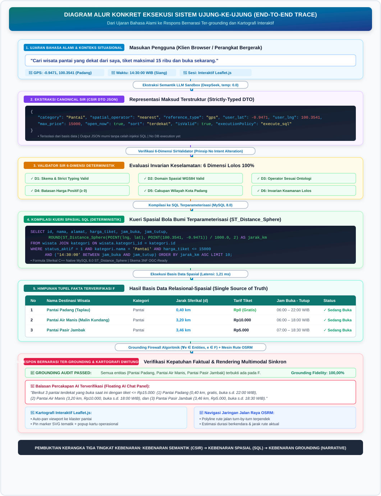
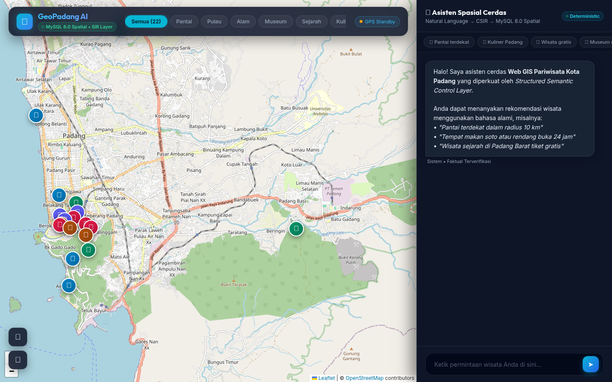
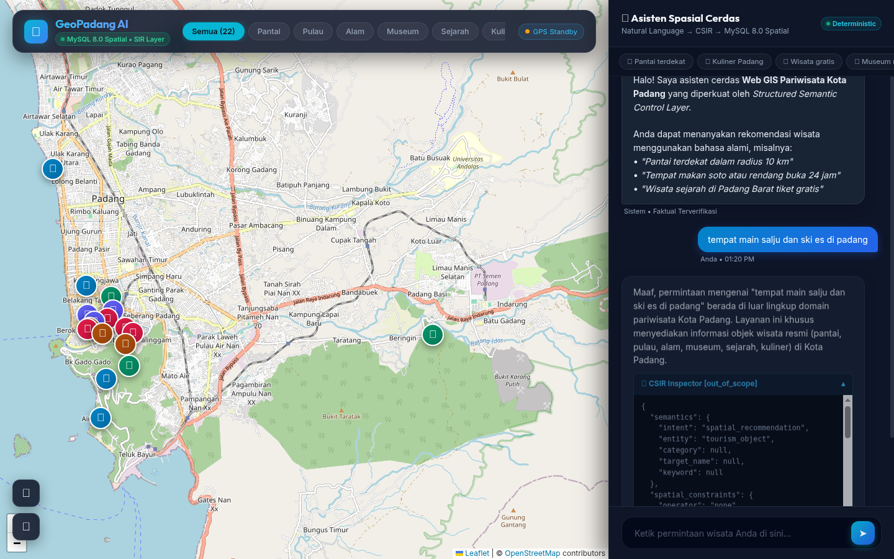

A Structured Semantic Control Layer for Reliable LLM-Mediated Spatial Querying in Web GIS: From Natural-Language Intent to Deterministic Spatial SQL (A Case Study of Padang City)
Sistem Informasi Geografis berbasis Web (Web GIS)
konvensional pada domain pariwisata perkotaan umumnya mengandalkan
antarmuka WIMP (Windows, Icons, Menus, Pointer) dengan formulir
menu tarik-turun (dropdown) yang kaku. Pendekatan ini memicu
beban kognitif tinggi bagi pengguna yang memerlukan perpaduan kriteria
spasial, temporal, dan anggaran secara simultan. Di sisi lain, integrasi
langsung Large Language Models (LLM) tanpa kendali
(unconstrained LLM) menimbulkan risiko fatal berupa halusinasi
faktual dan spasial, sementara pendekatan Retrieval-Augmented
Generation (dense-vector RAG) berbasis kemiripan semantik
murni secara inheren tidak memberikan jaminan matematis deterministik
dalam memenuhi predikat spasial-temporal terstruktur secara eksak.
Berangkat dari garis keturunan riset DTExplorer (Afnarius dkk.,
2026), penelitian ini mengusulkan Reliability-Controlled
Conversational Spatial Information System (Sistem Informasi
Spasial Percakapan Terkendali Keandalan) yang diatur oleh kerangka kerja
arsitektur Batas Kendali Ganda (Dual Control
Boundaries): (1) Batas Kendali Semantik
(Semantic Control Boundary) yang menyalurkan inferensi
LLM probabilistik melalui Spatial Intent Representation (SIR)
formal dan modul validasi deterministik 6-dimensi
(SirValidator) berprinsip No Intent Alteration menuju
representasi kanonik (CSIR) dan kompiler deterministik, guna mencegah
maksud semantik yang tidak sah atau terubah sepihak mencapai eksekusi
basis data; serta (2) Batas Kendali Bukti (Evidence Control
Boundary) yang mengunci fakta pada basis data relasional
MySQL 8.0 melalui fungsi spasial bawaan ST_Distance_Sphere
dan OSRM, lalu memvalidasi luaran narasi secara algoritmik di tingkat
klaim (claim-level grounding validator) dengan kebijakan
fail-closed fallback deterministik guna memverifikasi
keselarasan klaim faktual pada empat kategori pemeriksaan skema tertutup
sebelum respons disajikan kepada pengguna. Pengujian empiris 4-lapisan
terhadap 40 skenario percakapan benchmark terstandarisasi pada
22 destinasi wisata Kota Padang, yang didukung oleh rangkaian pengujian
otomatis sebanyak 56 skenario uji unit, integrasi, dan ketahanan
adversarial (240 assertions, 100% PASS), menunjukkan akurasi
ekstraksi CSIR eksak niat murni (Exact CSIR Match Rate) sebesar
100,00% (40/40) dengan keselarasan amplob eksekusi
pasca-kebijakan 97,50% (39/40), rata-rata akurasi
tingkat atribut (field-level) 100,00%
(436/436), akurasi keputusan validasi 100,00%
(40/40), kebenaran predikat spasial murni sebesar
100,00% (36/36 skenario spasial) dengan kepatuhan
eksekusi skenario menyeluruh 100,00% (40/40),
Entity Fabrication Rate 0,00% (0 objek wisata
terfabrikasi pada skenario yang dievaluasi), Claim-Level Grounding
Fidelity 100,00% (270/270 klaim terverifikasi pada empat
kategori pemeriksaan), Entity Grounding Fidelity
100,00% (120/120 sebutan POI), serta Honest
Rejection Rate 100,00% (2/2) pada permintaan di
luar yurisdiksi yang diuji. Latensi pipeline percakapan cerdas di sisi
server rata-rata sebesar 1.252,17 ms (median: 1.232,39
ms, persentil ke-95/P95: 1.581,37 ms; mencakup dua panggilan inferensi
LLM dan eksekusi kueri spasial SQL basis data sebesar 1,21 ms),
sedangkan latensi perutean jaringan jalan OSRM diukur secara independen
pada sisi klien peramban sebesar 88,40 ms (median:
84,50 ms, P95: 128,60 ms; menghasilkan total waktu respons persepsi
pengguna rata-rata sebesar 1.340,57 ms, median: 1.316,89 ms, P95:
1.709,97 ms). Temuan ini membuktikan bahwa pembatasan kewenangan LLM
melalui batas kendali ganda mampu menghadirkan antarmuka percakapan yang
luwes sekaligus menjamin integritas faktual tanpa halusinasi pada
skenario benchmark yang dievaluasi.
Kata Kunci: Reliability-Controlled Conversational Spatial Information System, Dual Control Boundaries, Semantic Control Boundary, Evidence Control Boundary, Spatial Intent Representation (SIR), SIR Validator, ST_Distance_Sphere, Kota Padang.
Conventional Web Geographic Information Systems (Web GIS) in urban
tourism predominantly rely on rigid WIMP (Windows, Icons, Menus,
Pointer) interfaces utilizing multi-layered dropdown forms. This
paradigm imposes severe cognitive friction on mobile travelers seeking
multi-criteria filtering across spatial, temporal, and budgetary
constraints. Conversely, unconstrained Large Language Models (LLMs)
suffer from acute factual and spatial hallucinations, while pure
dense-vector Retrieval-Augmented Generation (RAG) inherently lacks
deterministic mathematical guarantees for evaluating exact structured
spatial-temporal predicates. Expanding upon the research lineage of
DTExplorer (Afnarius et al., 2026), this paper proposes a
Reliability-Controlled Conversational Spatial Information
System governed by an architectural framework of Dual
Control Boundaries: (1) a Semantic Control
Boundary that routes probabilistic LLM inference through a
formal Spatial Intent Representation (SIR) and a six-dimensional
deterministic validator (SirValidator) enforcing the No Intent
Alteration principle into a Canonical SIR (CSIR) and deterministic
compiler, preventing invalid or mutated semantic intent from reaching
spatial execution; and (2) an Evidence Control Boundary
that anchors all factual truth to a relational MySQL 8.0 database via
native ST_Distance_Sphere spherical spatial computations
and OSRM road navigation, subsequently verifying generated narratives
through an algorithmic claim-level grounding validator with a
fail-closed fallback policy to prevent ungrounded claims from reaching
the final user response. Empirical 4-layer evaluation across 40
standardized benchmark query scenarios on 22 curated tourism
destinations in Padang City, complemented by an automated test suite of
56 automated unit, integration, and adversarial tests (240
assertions, 100% pass), demonstrated a Pure Intent Pre-Fallback
Exact CSIR semantic extraction accuracy of 100.00%
(40/40) (97.50% / 39/40 on post-policy
execution envelope alignment) with an average field-level accuracy of
100.00% (436/436), a validation decision accuracy of
100.00% (40/40), a pure spatial predicate correctness
of 100.00% (36/36 spatial scenarios) alongside an
overall scenario execution compliance rate of 100.00%
(40/40), an Entity Fabrication Rate of 0.00%
(no fabricated POIs were observed in the evaluated benchmark scenarios),
a Claim-Level Grounding Fidelity of 100.00% across 270 audited
claims recognized by GroundingValidator on four implemented verification
categories, an Entity Grounding Fidelity of
100.00% across 120 POI mentions, and an Honest
Rejection Rate of 100.00% (2/2) on tested out-of-scope
requests. The server-side conversational pipeline latency averaged
1,252.17 ms (median: 1,232.39 ms, 95th percentile/P95:
1,581.37 ms; incorporating two LLM inferences and database spatial SQL
execution of 1.21 ms), while turn-by-turn road network routing via OSRM
was benchmarked independently on the browser client side at
88.40 ms (median: 84.50 ms, P95: 128.60 ms; yielding an
overall user-perceived latency of 1,340.57 ms, median: 1,316.89 ms, P95:
1,709.97 ms). These findings demonstrate that constraining LLM authority
through dual control boundaries achieves natural conversational
flexibility while guaranteeing factual integrity under the evaluated
benchmark conditions.
Keywords: Reliability-Controlled Conversational Spatial Information System, Dual Control Boundaries, Semantic Control Boundary, Evidence Control Boundary, Spatial Intent Representation (SIR), SIR Validator, ST_Distance_Sphere Function, Padang City.
Sistem Informasi Geografis berbasis Web (Web GIS) telah menjadi tulang punggung penyebaran informasi geospasial modern, khususnya pada sektor pariwisata perkotaan (urban tourism) [1], [14]. Kota Padang, sebagai ibu kota Provinsi Sumatera Barat dengan luas wilayah administratif 694,96 km², menghadirkan karakteristik bentang alam dan cagar budaya yang sangat heterogen [16], [17]. Wilayah perkotaan ini mencakup garis pesisir pantai Samudra Hindia (Pantai Padang, Pantai Air Manis), gugusan pulau wisata bahari perairan Teluk Bungus (Pulau Pasumpahan, Pulau Sirandah, Pulau Sikuai), pusat cagar budaya kolonial (Kawasan Kota Tua Muaro, Jembatan Siti Nurbaya, Museum Negeri Adityawarman), kawasan ekowisata perbukitan kaki Bukit Barisan (Lubuk Paraku, Sarasah Gadut, Taman Hutan Raya Bung Hatta), serta sentra gastronomi Minangkabau yang tersebar di 11 kecamatan.
Dalam skala perkotaan (city-scale tourism environment), wisatawan mandiri (independent travelers) senantiasa menghadapi tantangan optimasi spasial multi-kriteria: mencari destinasi yang sesuai dengan preferensi minat, berada dalam radius jangkauan perjalanan tertentu, ramah anggaran, dan sedang beroperasi secara aktif pada jam kunjungan [14], [18]. Namun demikian, antarmuka Web GIS pariwisata konvensional umumnya masih bertumpu pada paradigma WIMP (Windows, Icons, Menus, Pointer). Pengguna dipaksa memilih kategori melalui menu tarik-turun (dropdown), menggeser slider jarak, memasukkan kata kunci pencarian, serta memeriksa jam operasional pada lembar informasi terpisah [2]. Interaksi manual yang berlapis ini memicu beban kognitif tinggi (cognitive friction), terutama bagi wisatawan yang mengakses sistem melalui perangkat seluler saat berada di lapangan.
Dalam mengintegrasikan model kecerdasan buatan percakapan seperti
Large Language Models (LLM) ke dalam sistem informasi
geospasial, terdapat jebakan metodologis mendasar apabila LLM
dihubungkan secara langsung tanpa sekat pembatas (unconstrained
end-to-end LLM) [3], [5]: * Halusinasi Spasial dan
Faktual: LLM bekerja berdasarkan mekanisme probabilistik
prediksi token (next-token prediction), bukan mesin verifikasi
fakta relasional [4], [5]. Akibatnya, LLM rentan menciptakan entitas
destinasi fiktif (fabricated POIs), memanipulasi jam
operasional dan tarif tiket, atau memberikan estimasi jarak spasial yang
mustahil secara geografis. * Keterbatasan Dense-Vector RAG
terhadap Predikat Terstruktur: Pendekatan
Retrieval-Augmented Generation (RAG) berbasis pencarian
kemiripan kosinus vektor (dense-vector similarity) sangat
populer untuk temu kembali dokumen teks terbuka [6], [7]. Namun,
penelusuran kemiripan vektor semata secara inheren tidak memberikan
jaminan matematis deterministik untuk mengevaluasi predikat
spasial-temporal terstruktur secara eksak. Vektor embedding
tidak dapat secara mandiri melakukan perbandingan ketaksamaan numerik
jam operasional
(jam_buka <= jam_sekarang AND jam_tutup >= jam_sekarang),
membatasi pagu anggaran (harga_tiket <= 15000), maupun
mengevaluasi jarak lingkaran besar (spherical distance)
terhadap posisi GPS pengguna secara real-time. Sistem
memerlukan integrasi eksplisit dengan kompilasi kueri basis data
relasional spasial dan validasi berinvarian agar kepatuhan batasan
matematis tersebut terjamin secara pasti.
Bertolak dari keterbatasan di atas, pusat gravitasi ilmiah penelitian ini bukanlah sekadar “membangun aplikasi chatbot untuk Web GIS”, melainkan menjawab pertanyaan mendasar sistem informasi cerdas: > Bagaimana merancang bangun sistem informasi spasial percakapan di bawah kerangka batas kendali ganda—yakni batas kendali semantik dan batas kendali bukti—yang memediasi kueri spasial bahasa alami menjadi eksekusi SQL spasial deterministik pada basis data, sehingga LLM berfungsi optimal sebagai antarmuka kognitif percakapan namun secara algoritmik dan matematis terjamin bebas dari fabrikasi entitas dan halusinasi faktual?
Guna menguji secara empiris efektivitas arsitektur kendali semantik
dan keterikatan bukti faktual, penelitian ini merumuskan empat
Pertanyaan Penelitian (Research Questions / RQ) inti: *
RQ1 (Akurasi Parsing Semantik): Sejauh mana model
bahasa besar (Large Language Models) mampu menerjemahkan kueri
spasial bahasa alami pengguna ke dalam representasi maksud semantik
formal (Spatial Intent Representation / SIR dan CSIR) tanpa
mengalami perubahan niat (No Intent Alteration)? * RQ2
(Keamanan dan Ketepatan Eksekusi Spasial): Apakah integrasi
validator deterministik 6-dimensi dan kompilator kueri terparameterisasi
mampu menjamin invarian keamanan (meniadakan eksekusi kueri ilegal atau
injeksi SQL) serta mengeksekusi predikat spasial secara presisi melalui
fungsi bola bumi native ST_Distance_Sphere dengan overhead
latensi yang dapat diterima? * RQ3 (Keterikatan Faktual dan
Ketiadaan Fabrikasi): Sejauh mana penerapan firewall
bukti algoritmik pasca-generasi (Claim-Level Grounding
Validator) mampu mengeliminasi fabrikasi entitas destinasi wisata
(zero fabricated POIs) dan menjamin keselarasan klaim faktual
narasi terhadap basis data relasional? * RQ4 (Efisiensi Kognitif
dan Pengalaman Pengguna): Bagaimana dampak pengalihan antarmuka
dari manipulasi formulir WIMP konvensional ke interaksi percakapan
terpandu terhadap efisiensi waktu penyelesaian tugas (Task
Completion Time) dan penerimaan pengguna (System Usability
Scale)?
Penelitian ini memberikan lima kontribusi ilmiah: 1. Kerangka Teoretis Batas Kendali Ganda (Dual Control Boundaries Framework): Memformalkan pemisahan inferensi LLM probabilistik dari komputasi basis data relasional melalui dua batas kendali independen: Batas Kendali Semantik (Semantic Control Boundary) dan Batas Kendali Bukti (Evidence Control Boundary). 2. Formalisasi Spatial Intent Representation (SIR) & Ontologi Operator Spasial: Merumuskan representasi semantik perantara bertipe (typed intermediate semantic representation) berbasis skema JSON formal dan ontologi pemetaan dari konsep bahasa alami ke operator SIR dan predikat kompilasi SQL spasial. 3. Mekanisme Validasi SIR 6-Dimensi (SIR Validator): Merancang algoritma validasi deterministik di lapisan kendali aplikasi berprinsip No Intent Alteration (schema, type, domain, operator, entity, and constraint consistency) sebagai invarian keamanan sebelum kueri dieksekusi. 4. Deterministic Spatial Query Compiler & Safety Invariant: Mengembangkan kompilator kueri yang mentransformasikan SIR tervalidasi (CSIR) menjadi SQL terparameterisasi aman, mengunci basis data relasional sebagai satu-satunya sumber kebenaran (single source of truth). 5. Algorithmic Claim-Level Grounding Validator & Kerangka Evaluasi Empiris: Menetapkan kontrak grounding mutlak pada tahap pembentukan narasi rekomendasi (Grounded NLG) dan audit klaim faktual lintas 4 sub-dimensi (), dilengkapi taksonomi kegagalan formal (F1–F8) dan evaluasi perbandingan multi-baseline serta ablation study.
Integrasi model pemrosesan bahasa alami ke dalam Sistem Informasi Geografis telah melahirkan domain Conversational GIS dan Autonomous GIS [35], [36]. Sistem generasi awal umumnya mengandalkan pencocokan pola berbasis aturan (rule-based pattern matching) atau slot-filling berdasar ontologi statis yang sangat kaku terhadap variasi bahasa sehari-hari. Hadirnya model bahasa besar (LLM) seperti GPT-4 dan model fondasi geospasial [4], [35] membuka peluang interaksi percakapan yang jauh lebih fleksibel. Namun demikian, sebagian besar arsitektur Conversational GIS kontemporer memperlakukan LLM sebagai agen otonom black-box yang diberikan akses eksekusi langsung ke pustaka geospasial [36]. Pendekatan otonom tanpa sekat kendali ini sangat rentan terhadap halusinasi koordinat, manipulasi atribut temporal, dan ketidakpastian stokastik yang tidak dapat ditoleransi dalam sistem pendukung keputusan perkotaan. Penelitian ini membedakan diri secara tegas dengan menolak pemberian otoritas eksekusi langsung kepada LLM; LLM semata-mata diisolasi sebagai penerjemah semantik kognitif.
Penerjemahan bahasa alami ke kueri terstruktur (Text-to-SQL)
telah dipelajari secara luas pada benchmark standar seperti Spider,
DIN-SQL [28], dan RESDSQL [29]. Pada domain geospasial, model
Text-to-SQL generatif bebas (unconstrained
Text-to-SQL) menghadapi tiga kendala fatal: (1) Halusinasi
Skema dan Sintaks: LLM kerap mengarang nama tabel, kolom, atau
tipe relasi yang tidak ada pada basis data relasional; (2)
Ketidakmampuan Mengoptimasi Fungsi Spasial Sferikal:
LLM sering menyusun formula trigonometri manual yang salah, mengalami
galat titik-kambang (floating-point error), atau gagal
memanfaatkan fungsi bawaan kernel basis data seperti
ST_Distance_Sphere; dan (3) Kerentanan
Keamanan: Mengizinkan LLM menulis string SQL mentah membuka
celah keamanan prompt injection dan eksekusi kueri yang tidak
terotorisasi. Sebagai solusi, penelitian ini menerapkan pendekatan
Parameterized Semantic Compilation, di mana LLM hanya
menghasilkan semantik maksud bertipe (SIR), sedangkan sintaks SQL
seutuhnya disusun oleh kompilator deterministik non-LLM yang
terparameterisasi.
Fenomena halusinasi faktual pada LLM [5], [31] mendorong adopsi Retrieval-Augmented Generation (RAG) [6], [7]. Pada temu kembali dokumen teks umum, RAG berbasis pencarian kemiripan kosinus vektor dense-vector terbukti mampu menekan halusinasi [30]. Namun demikian, pada domain geospasial perkotaan yang melibatkan kendala multi-kriteria (seperti radius jarak bola bumi, batasan anggaran, dan jam buka-tutup sirkadian), RAG vektor terbukti gagal secara fundamental. Vektor embedding tidak mampu mengevaluasi predikat ketaksamaan numerik eksak (, ). Selain itu, upaya mitigasi halusinasi pasca-generasi yang mengandalkan LLM sekunder (LLM-as-a-judge) menimbulkan inkonsistensi stokastik baru dan beban latensi berlebih. Penelitian ini mengusulkan verifikasi berbasis aturan deterministik (deterministic algorithmic claim-level grounding validator) yang mengaudit setiap klaim terhadap tupel basis data relasional secara matematis tanpa campur tangan model generatif tambahan.
Dalam taksonomi sistem temu kembali dan rekomendasi pariwisata [1], [3], [14], [18], sistem rekomendasi spasial umumnya terbagi menjadi collaborative filtering, content-based filtering, dan constraint-based recommendation [18]. Sistem rekomendasi pariwisata perkotaan untuk wisatawan mandiri sering kali menghadapi masalah cold-start, di mana riwayat profil pengguna belum tersedia [3]. Oleh karena itu, pendekatan berbasis kendala (constraint-based recommendation) menjadi pilihan paling andal: kandidat destinasi disaring secara deterministik berdasarkan pemenuhan kendala eksplisit yang dinyatakan pengguna dalam kueri (lokasi geografis, radius, jam buka, dan tiket masuk) [14]. Penelitian ini memosisikan diri secara presisi pada kuadran sistem rekomendasi spasial berbasis kendala, dan secara sadar memisahkan diri dari pemodelan preferensi laten guna menjamin keterlacakan penuh (traceability) dan akurasi deterministik pada setiap rekomendasi yang dihasilkan.
Evolusi sistem pendukung keputusan spasial pariwisata dalam kelompok penelitian ini bertolak dari fondasi empiris yang telah dibangun sebelumnya secara sistematis: 1. DTExplorer (Afnarius dkk., 2026) [2]: Memelopori interaksi spasial eksploratori sadar-skala (scale-aware exploratory spatial interaction) pada skala mikro pedesaan (village-level tourism, dievaluasi di Desa Wisata Ulakan, Kabupaten Padang Pariaman). DTExplorer menunjukkan bahwa kurasi data titik minat (43 POI terkurasi oleh pemangku kepentingan desa) yang dipadukan dengan pemfilteran berbasis kategori dan radius lingkaran efektif memandu wisatawan tanpa memerlukan model optimasi komputasi yang membebani peladen. Kendati demikian, DTExplorer masih bertumpu pada antarmuka WIMP (Windows, Icons, Menus, Pointer) konvensional dengan slider radius dan formulir HTML tarik-turun, menggunakan aproksimasi jarak Euclidean planar (), serta secara eksplisit mencatat perlunya riset lanjutan untuk antarmuka percakapan berbasis AI, pemfilteran multi-kriteria waktu/biaya, dan evaluasi performa teknis tingkat milidetik. 2. Kustomrut (Afnarius dkk.): Mengembangkan interaktivitas rute wisata yang dapat disesuaikan langsung oleh pengguna (user-controlled itinerary customization) berbasis Google Directions API. 3. Penelitian Ini (Reliability-Controlled Conversational Spatial Information System): Memajukan paradigma tersebut ke arah kueri spasial percakapan terpandu (reliable AI-mediated spatial querying) pada skala perkotaan Kota Padang (694,96 km²). Evolusi trajektori riset ini membentuk rantai kemajuan ilmiah:
Keberbaruan ilmiah (scientific novelty) penelitian ini
bukan sekadar menambahkan antarmuka chatbot di atas peta
digital, melainkan pergeseran paradigma interaksi dan
kontrol (interaction and control paradigm shift)
menuju sebuah Reliability-Controlled Conversational Spatial
Information System yang diatur oleh dua mekanisme batas kontrol
fundamental: - Batas Kendali Semantik (Semantic Control
Boundary):
.
Bertujuan mencegah maksud semantik yang tidak sah, di luar domain, atau
termutasi sepihak mencapai eksekusi basis data dengan menegakkan prinsip
No Intent Alteration. - Batas Kendali Bukti
(Evidence Control Boundary):
.
Bertujuan mengunci fakta pada hasil kueri basis data relasional MySQL
8.0 (ST_Distance_Sphere), menyintesis narasi ramah pengguna
di bawah kontrak grounding ketat, serta memverifikasi kebenaran setiap
klaim secara algoritmik sebelum respons dikirimkan ke pengguna.
Dalam taksonomi sistem temu kembali informasi, sistem ini didefinisikan secara presisi sebagai sistem rekomendasi spasial percakapan berbasis kendala deterministik (constraint-based conversational spatial recommendation / spatial query system). Seleksi kandidat dijalankan berdasarkan kriteria faktual eksak (jarak lingkaran besar sferikal, kategori, harga, jam operasional, dan kata kunci), dan secara sadar belum menerapkan pemfilteran kolaboratif (collaborative filtering) maupun pemodelan preferensi laten pengguna, menjaga kesinambungan roadmap penelitian jangka panjang menuju sistem Adaptive Personalized Augmented Recommendation (APAR).
Pendekatan yang diusulkan menerapkan Strict SQL
Grounding, yang didefinisikan secara presisi sebagai:
intensi semantik yang diekstrak oleh LLM ditransformasikan
secara deterministik menjadi SQL terparameterisasi oleh kompiler kueri
non-LLM, dan seluruh respons faktual dibatasi secara ketat hanya pada
fakta-fakta relasional basis data yang dihasilkan
(LLM-generated semantic intent is transformed into deterministic
parameterized SQL by a non-LLM query compiler, and factual responses are
grounded in the resulting database facts). Artinya, LLM tidak
pernah diberikan izin untuk memproduksi sintaks kueri SQL secara
langsung. Alih-alih, intensi semantik pengguna diekstrak menjadi
representasi kanonik terstruktur (CSIR), divalidasi oleh validator
deterministik, dan dikompilasi oleh modul non-LLM (Spatial Query
Compiler) menjadi SQL terparameterisasi dengan fungsi spasial
bawaan MySQL 8.0 ST_Distance_Sphere. Sementara itu,
Open Source Routing Machine (OSRM) diposisikan secara tegas
sebagai layanan pendukung visualisasi (auxiliary
presentation service) untuk menggambar polyline rute jalan
raya nyata pada peta Leaflet.js, bukan sebagai mesin evaluasi spasial
inti, dilengkapi penegakan firewall grounding algoritmik yang
memitigasi halusinasi entitas terfabrikasi pada kondisi pengujian
benchmark yang dievaluasi.
Sistem Informasi Spasial Percakapan (The Dual Control Boundaries Framework) Guna mengatasi kontradiksi fundamental antara sifat probabilistik model bahasa generatif dan tuntutan presisi deterministik komputasi spasial, penelitian ini merumuskan sistem sebagai Reliability-Controlled Conversational Spatial Information System yang beroperasi di bawah fondasi teoritis Batas Kendali Ganda (Dual Control Boundaries Framework):
PROBABILISTIC LLM (Layer 2)
│
▼
┌─────────────────────────────┐
│ SEMANTIC CONTROL BOUNDARY │
│ • Raw SIR Extraction │
│ • 6D SIR Validator │
│ • No Intent Alteration │
│ • Canonical SIR (CSIR) │
│ • Deterministic Compiler │
└──────────────┬──────────────┘
│ Parameterized SQL
▼
DETERMINISTIC SPATIAL EXEC
(MySQL 8.0 ST_Distance_Sphere)
│
▼
DATABASE FACTS (F)
│
▼
┌─────────────────────────────┐
│ EVIDENCE CONTROL BOUNDARY │
│ • Strict Grounded NLG │
│ • Claim-Level Validator │
│ • Fail-Closed Fallback │
└──────────────┬──────────────┘
│ Grounded Response
▼
FINAL VERIFIED RESPONSE
(Leaflet.js + OSRM Route)Sistem dikendalikan oleh dua batas kontrol berurutan yang diformalkan
secara matematis dan logis: 1. Batas Kendali Semantik (The
Semantic Control Boundary /
):
Batas ini mengisolasi model probabilistik dari operasi basis data.
Masukan bahasa alami diparsing menjadi representasi semantik perantara
Spatial Intent Representation (SIR). Modul
SirValidator 6-dimensi menegakkan prinsip No Intent
Alteration serta invarian skema, tipe, domain, operator, entitas,
dan batasan numerik. Apabila ditemukan parameter anomali (seperti radius
negatif atau operator ilegal), validator menolak mutasi sepihak dan
mewajibkan klarifikasi pengguna. Pelanggaran invarian
(!isValid || isOutOfScope) membatalkan kompilasi kueri SQL,
memastikan bahwa maksud yang tidak sah tidak pernah menyentuh mesin
basis data. 2. Batas Kendali Bukti (The Evidence Control
Boundary /
):
Batas ini mengatur sintesis naratif akhir respons pengguna. Mesin
spasial deterministik (MySQL 8.0 ST_Distance_Sphere)
mengeksekusi SQL terparameterisasi, menghasilkan himpunan fakta
relasional
yang tidak dapat diubah (immutable). Modul Grounded
NLG dibatasi oleh kontrak instruksi sistem ketat yang melarang
inferensi tanpa bukti. Selanjutnya, Algorithmic Claim-Level
Grounding Validator mengaudit teks respons pada 4 sub-dimensi
().
Jika terdeteksi klaim tanpa bukti
(),
sistem memicu mekanisme fail-closed fallback deterministik
untuk memastikan 0 klaim tanpa dasar yang sampai ke pengguna.
Untuk menjamin integritas data geospasial, penelitian ini menetapkan aksioma arsitektural: Model LLM dilarang keras memegang otoritas langsung terhadap basis data. LLM tidak diizinkan membuat teks kueri SQL secara bebas, dilarang menentukan nama tabel atau kolom, dan tidak diperkenankan melakukan komputasi jarak secara internal. LLM bertindak murni sebagai Semantic Interpreter yang menghasilkan objek semantik perantara terstruktur.
Guna menetapkan pengujian ilmiah yang ketat bagi sistem informasi geospasial percakapan, penelitian ini merumuskan tiga dimensi kebenaran berurutan yang saling ortogonal: 1. Kebenaran Semantik (Semantic Correctness / ): Menilai sejauh mana LLM secara akurat menerjemahkan ujaran bahasa alami pengguna () ke dalam representasi terstruktur () tanpa menghilangkan batasan atau mengarang kriteria yang tidak diminta: 2. Kebenaran Eksekusi Spasial (Spatial Execution Correctness / ): Menilai ketepatan kompilator deterministik dan mesin basis data dalam mentransformasikan yang sah menjadi predikat SQL eksak yang dieksekusi langsung pada geometri relasional: 3. Kebenaran Grounding (Grounding Correctness / ): Menilai kepatuhan teks respons naratif asisten agar hanya menyatakan fakta yang benar-benar ada pada himpunan data hasil kueri , memitigasi risiko fabrikasi entitas maupun manipulasi atribut:
Rangkaian pembuktian ini menjadi tulang punggung ilmiah (scientific backbone) dari arsitektur yang diusulkan:
(Raw SIR vs. Validated CSIR)
Guna mengeliminasi ambiguitas taksonomi dalam literatur sistem temu balik spasial berbasis AI, penelitian ini menyatukan konsep Spatial Intent Representation (SIR) dan Canonical Spatial Intent Representation (CSIR) ke dalam satu kerangka siklus hidup representasi maksud (Intent Transformation Lifecycle):
Hubungan transisi formal antara Raw SIR dan Validated CSIR dirumuskan sebagai:
Skema CSIR mempartisi maksud spasial ke dalam 4 sub-domain ortogonal yang bertipe ketat (strictly typed):
Tabel 2 merinci 19 atribut formal pembentuk skema kanonikal CSIR lintas 4 partisi ortogonal:
Tabel 2. Spesifikasi Skema Formal Canonical Spatial Intent Representation (CSIR) Lintas 4 Partisi Ortogonal (19 Atribut)
| Partisi Ortogonal | Atribut CSIR | Tipe Data | Deskripsi Semantik | Nilai yang Diizinkan (Allowed Values) |
|---|---|---|---|---|
| (Intent Semantics, 5 Atribut) | intent |
Enum | Maksud utama interaksi | spatial_recommendation, entity_lookup,
general_inquiry |
entity |
Enum | Entitas target yang dicari | tourism_object |
|
category |
Enum / Null | Klaster kategori wisata | Pantai, Pulau, Alam,
Museum, Sejarah, Kuliner,
null |
|
target_name |
String / Null | Nama entitas spesifik | String nama POI target untuk entity lookup | |
keyword |
String / Null | Atribut tekstual deskripsi | String frasa penting (misal: “pasir putih”, “air terjun”) | |
| (Spatial Constraints, 8 Atribut) | spatial_operator |
Enum | Predikat spasial operasi | nearest, within_radius,
within_admin_area, none |
reference_type |
Enum | Tipe titik referensi spasial | gps, city_center, poi,
unknown |
|
reference_entity |
String / Null | Nama entitas POI rujukan spasial | String nama POI acuan jika reference_type = 'poi' |
|
latitude |
Float / Null | Lintang koordinat acuan spasial | Bilangan riil | |
longitude |
Float / Null | Bujur koordinat acuan spasial | Bilangan riil | |
radius |
Float / Null | Nilai ambang batas radius () | Nilai riil positif dalam kilometer (default: 20,0 km) | |
distance_unit |
Enum | Satuan metrik jarak | km, m |
|
admin_area |
String / Null | Nama kecamatan/wilayah | String nama wilayah (misal: “Bungus”, “Padang Barat”) | |
| (Operational Constraints, 5 Atribut) | is_free |
Boolean | Batasan tiket gratis | true, false |
max_price |
Integer / Null | Batas atas tarif retribusi | Bilangan bulat rupiah | |
open_now |
Boolean | Batasan waktu operasional | true, false |
|
open_24h |
Boolean | Batasan operasional 24 jam | true, false |
|
sort |
Enum / Null | Kriteria pemeringkatan | termurah, termahal, terdekat,
terbaik, null |
|
| (Control Metadata & Invariant, 1 Atribut CSIR) | is_out_of_scope |
Boolean | Penanda kueri di luar yurisdiksi | true, false |
| (Metadata Validasi Sistem) | isValid |
Boolean | Status kelulusan validasi invarian | true, false |
validation_errors |
Array | Daftar pesan pelanggaran invarian | Array string keterangan error | |
execution_policy |
Enum | Kebijakan eksekusi sistem | execute_sql, clarify_user,
reject_out_of_scope |
Representasi struktural dokumen Raw SIR dari LLM berbentuk JSON datar (17 slot semantik murni tanpa angka koordinat fiktif):
{
"intent": "spatial_recommendation",
"entity": "tourism_object",
"category": "Pantai",
"spatial_operator": "within_radius",
"reference_type": "gps",
"reference_entity": null,
"radius": 10.0,
"distance_unit": "km",
"admin_area": "Padang Selatan",
"target_name": null,
"keyword": "pasir putih",
"is_free": false,
"max_price": 15000,
"open_now": true,
"open_24h": false,
"sort": "terdekat",
"is_out_of_scope": false
}Setelah diikat dengan koordinat nyata peramban/resolver dan
divalidasi oleh SirValidator, representasi ini
diproyeksikan ke dalam struktur kanonikal Validated CSIR
19-atribut yang mengisolasi semantik maksud dari kontrol kompilasi
SQL.
Pada interaksi nyata sistem Web GIS percakapan, pengguna jarang merumuskan seluruh kriteria perjalanan dalam satu kalimat tunggal; interaksi berlangsung secara bertahap dan eksploratif. Untuk menjaga kesinambungan percakapan tanpa harus mengulang parsing dari awal atau merusak batasan yang telah disepakati sebelumnya, sistem memformalkan Model Pelacakan Status Percakapan Bertingkat:
Di mana: - merepresentasikan vektor status aktif pada giliran percakapan ke-. - merupakan vektor maksud diferensial yang diekstraksi LLM dari ujaran lanjutan pengguna berdasarkan konteks riwayat dialog . - adalah fungsi transisi status deterministik:
Sebagai contoh, ketika wisatawan mula-mula bertanya “Cari pantai dekat saya” (), lalu melanjutkan “Yang tiketnya gratis saja” (), maka menghasilkan . Fungsi mempertahankan kategori pantai dan koordinat GPS pengguna sembari memperbarui batasan anggaran, mencegah sistem mereset konteks atau mengarang objek wisata yang tidak relevan.
Arsitektur menerapkan prinsip pemisahan tanggung jawab yang ketat
(Separation of Responsibilities) untuk mencegah halusinasi
koordinat. Model bahasa (LLM) sama sekali dilarang mengarang
atau menyimpulkan angka koordinat GPS. Seluruh parameter pada
objek kanonik CSIR (19 atribut) dipetakan secara eksplisit berdasarkan
sumber asalnya: 1. Atribut Semantik Murni (Hasil Ekstraksi LLM
Layer 2 - Raw SIR, 17 Slot): - Intent:
intent, entity, category,
target_name, keyword (5 atribut) - Spatial
Constraints: spatial_operator,
reference_type, reference_entity,
radius, distance_unit, admin_area
(6 atribut) - Operational Constraints: is_free,
max_price, open_now, open_24h,
sort (5 atribut) - Control Constraint:
is_out_of_scope (1 atribut) 2. Konteks Geografis
Klien (Jangkar Koordinat Deterministik, 2 Atribut): -
latitude dan longitude diambil langsung dari
Geolocation API peramban (navigator.geolocation) jika
reference_type = 'gps'. - Jika
reference_type = 'city_center', resolver menyuntikkan
koordinat titik pusat Kota Padang
().
- Jika reference_type = 'poi', resolver melakukan
geocoding lookup koordinat resmi objek
reference_entity dari basis data spasial. 3.
Metadata Kontrol Validasi (Dihasilkan oleh
SirValidator): - isValid,
validation_errors, execution_policy,
out_of_scope_reason.
Penggabungan 17 slot semantik murni dari LLM dan 2 atribut koordinat deterministik dari lingkungan klien menghasilkan objek DTO kanonikal CSIR 19-Atribut yang utuh sebelum divalidasi dan dikompilasi ke SQL.
Guna menghilangkan kerancuan antara proses sanitasi representasi
dengan prinsip No Intent Alteration, sistem memformalkan
taksonomi lima operasi kontrol semantik: 1. Normalization
(Normalisasi Sintaktis): Transformasi representasional murni
pada level format tanpa mengubah makna maksud pengguna (misalnya:
penyeragaman kapitalisasi resmi 'pantai'
'Pantai', pembersihan spasi berlebih, dan
strip_tags() untuk keamanan injeksi string). 2.
Validation (Validasi Invarian): Pemeriksaan kepatuhan
parameter semantik terhadap batas keselamatan matematika dan domain
spasial (memastikan
dan
).
3. Rejection (Penolakan Jujur): Penolakan resmi
terhadap kueri yang terbukti berada di luar yurisdiksi ontologi
pariwisata Padang (is_out_of_scope = true
reject_out_of_scope). 4. Clarification (Klarifikasi
Pengguna - Inti No Intent Alteration): Meminta pengguna
mengonfirmasi atau memperjelas parameter yang melanggar batas
operasional atau ambigu (isValid = false
clarify_user), bukan memotong atau memutasi nilai
secara diam-diam. 5. Enrichment (Pengayaan Data
Non-LLM): Pengisian atribut koordinat dan metadata relasional
dari sumber eksternal tepercaya (Browser Geolocation API atau basis data
spasial).
Kueri bahasa alami pengguna ditransformasikan menjadi representasi semantik melalui pemetaan operator ontologis yang terdefinisi secara ketat. Tabel 1 merinci ontologi operator spasial yang diterapkan:
Tabel 1. Ontologi Operator Spasial pada Sistem Rekomendasi Terstruktur
| Ekspresi Bahasa Alami | Operator SIR | Operator / Predikat SQL Deterministik | Semantik Operasional |
|---|---|---|---|
| “paling dekat”, “terdekat” | nearest |
ORDER BY distance_km ASC LIMIT k |
Mengurutkan kandidat POI berdasarkan kedekatan jarak lingkaran besar (spherical distance) |
| “dalam radius 5 km”, “sekitar 10 km” | within_radius |
WHERE distance_km <= :radius_km |
Menyaring destinasi di dalam batas radius lingkaran bola bumi (spherical distance) |
| “di Kecamatan Padang Selatan” | within_admin_area |
WHERE alamat ILIKE :admin_pattern |
Menyaring destinasi di dalam batas wilayah administratif perkotaan |
| “buka sekarang”, “sedang buka” | open_now |
WHERE :current_time BETWEEN jam_buka AND jam_tutup |
Evaluasi predikat sirkadian waktu operasional aktif |
| “buka 24 jam” | open_24h |
WHERE jam_buka = '00:00:00' AND jam_tutup >= '23:59:00' |
Menyaring objek wisata beroperasi non-stop |
| “tiket gratis”, “tanpa bayar” | is_free |
WHERE harga_tiket = 0 |
Menyaring destinasi publik tanpa tiket retribusi |
| “tiket maksimal 20 ribu” | max_price |
WHERE harga_tiket <= :max_price |
Membatasi pagu anggaran tiket masuk |
| “pantai”, “museum”, “kuliner” | category |
WHERE kategori.nama = :category_name |
Pembatasan relasional terhadap 6 klaster wisata resmi |
Lapisan kendali semantik menjalankan pemeriksaan deterministik menggunakan algoritma validasi bertingkat yang menolak batasan tidak valid tanpa mengubah maksud pengguna secara sepihak (No Intent Alteration):
ALGORITMA: Validasi CSIR Enam Dimensi (No Intent Alteration)
MASUKAN : Objek Raw SIR (S_raw) dari LLM, Teks Asli Pengguna (T_user)
KELUARAN : Objek Validated CSIR (S_csir), Kebijakan Eksekusi (execution_policy)
1. INISIALISASI daftar error E ← []
2. DIMENSI 1 (SCHEMA & TYPE INTEGRITY):
Sanitasi tag HTML/XSS pada target_name, admin_area, keyword; normalisasi sorting
3. DIMENSI 2 (SPATIAL DOMAIN):
JIKA S_raw.distance != NULL DAN S_raw.distance <= 0 MAKA:
E.tambah("Jarak tidak valid (harus > 0)"); // TIDAK diubah via abs()!
JIKA S_raw.distance != NULL DAN S_raw.distance > 50.0 MAKA:
E.tambah("Radius melebihi batas operasional Kota Padang (maksimal 50 km)"); // No Intent Alteration: DITOLAK tanpa clamping sepihak!
4. DIMENSI 3 (SPATIAL OPERATOR VALIDITY):
JIKA S_raw.spatial_operator TIDAK ADA DI VALID_OPERATORS MAKA:
E.tambah("Operator spasial tidak terdaftar dalam ontologi"); // TIDAK diubah ke 'none'!
5. DIMENSI 4 (REFERENCE COORDINATE BOUNDS):
JIKA S_raw.lat di luar [-90, 90] ATAU S_raw.lng di luar [-180, 180] MAKA:
E.tambah("Koordinat geografis di luar batas bola bumi")
6. DIMENSI 5 (OPERATIONAL & PRICE CONSTRAINTS):
JIKA S_raw.max_price < 0 MAKA: E.tambah("Batas harga tidak boleh negatif")
// Catatan Formal: is_free == TRUE dan max_price > 0 BUKAN kontradiksi,
// melainkan relasi inklusi himpunan ({harga = 0} ⊆ {harga <= P}).
// Kondisi ini diterima valid sebagai preferensi gratis dalam pagu anggaran maksimal.
7. DIMENSI 6 (DOMAIN SCOPE & ONTOLOGICAL INTEGRITY):
UNTUK SETIAP kata kunci luar-lingkup w DALAM [salju, ski, kasino, candi hindu, ...]:
JIKA lowercase(T_user) mengandung w MAKA:
S_raw.is_out_of_scope ← TRUE; S_raw.execution_policy ← 'reject_out_of_scope'
KEMBALIKAN (S_raw, 'reject_out_of_scope')
JIKA S_raw.category != NULL DAN S_raw.category TIDAK ADA DI VALID_CATEGORIES MAKA:
E.tambah("Kategori tidak dikenali dalam ontologi Padang"); S_raw.category ← NULL
8. PENETAPAN STATUS CSIR:
JIKA E kosong MAKA:
S_raw.is_valid ← TRUE; S_raw.execution_policy ← 'execute_sql'
LAINNYA:
S_raw.is_valid ← FALSE; S_raw.execution_policy ← 'clarify_user'
KEMBALIKAN (S_raw, S_raw.execution_policy)(ST_Distance_Sphere) Dibandingkan Rumus Manual Sistem membedakan secara tegas antara perhitungan kedekatan jarak spasial relasional pada basis data dengan navigasi jaringan jalan raya:
Fungsi Spasial Bawaan Basis Data (Built-in Spatial
Function ST_Distance_Sphere):
Berbeda dari pendekatan konvensional yang menyematkan rumus trigonometri
manual (seperti formula Haversine atau Spherical Law of
Cosines) ke dalam teks kueri SQL atau mengevaluasinya secara
berulang di tingkat aplikasi, sistem ini mendelegasikan komputasi jarak
sepenuhnya kepada fungsi spasial bawaan (native spatial
function) ST_Distance_Sphere pada kernel
MySQL 8.0.
Secara matematis, fungsi
ST_Distance_Sphere(g1, g2 [, radius]) mengevaluasi jarak
lingkaran besar (great-circle / spherical distance) berbasis
model bola bumi dengan jari-jari rata-rata bumi (default MySQL 8.0:
):
Pemanfaatan fungsi bawaan basis data ini memberikan tiga keunggulan fundamental dibandingkan perumusan rumus manual:
SIN, COS, ACOS,
ASIN, RADIANS).ACOS, deviasi biner titik-kambang yang sedikit melampaui
dapat memicu galat NaN (domain error). Fungsi
ST_Distance_Sphere menangani normalisasi batas koordinat
dan singularitas kutub secara otomatis.POINT(longitude, latitude), menjamin
konsistensi integrasi dengan indeks spasial serta arsitektur GIS masa
depan.Jarak dan Geometri Jaringan Jalan (OSRM
Engine):
Untuk visualisasi navigasi rute nyata pada peta Leaflet.js, pasangan
koordinat dikirimkan ke mesin Open Source Routing Machine
(OSRM) [9] yang memanfaatkan data jalan OpenStreetMap (OSM) [8] dengan
algoritma Contraction Hierarchies (CH):
menghasilkan polyline lintasan jalan raya perkotaan serta
estimasi durasi tempuh kendaraan yang akurat.
Pemisahan kewenangan antara semantik bahasa alami dan sintaksis basis data diikat melalui Tabel Kontrak Formal Operator Spasial. LLM semata-mata memilih token operator semantik, sedangkan SpatialQueryCompiler secara deterministik menyusun pohon sintaksis SQL:
| Operator Spasial | Definisi Semantik | Parameter Wajib | Aksi Kompiler SQL (Prepared Statement) | Fungsi Mesin Spasial |
|---|---|---|---|---|
nearest |
Mencari destinasi dengan jarak spasial bola bumi terdekat dari titik acuan. | latitude,
longitude, reference_type |
ORDER BY ST_Distance_Sphere(POINT(lng, lat), POINT(:lng, :lat)) ASC LIMIT :k |
Nearest-Neighbor Spherical Search |
within_radius |
Menyaring destinasi yang berada di dalam radius lingkaran jarak . | latitude,
longitude, radius |
WHERE (ST_Distance_Sphere(POINT(lng, lat), POINT(:lng, :lat)) / 1000.0) <= :radius |
Radial Metric Buffer Search |
within_admin_area |
Menyaring destinasi di dalam wilayah administrasi kecamatan tertentu. | admin_area |
WHERE wisata.alamat LIKE :admin_pattern |
Administrative Pattern Matching |
none |
Tidak ada batasan spasial eksplisit (eksplorasi tematik/harga/jadwal). | (Tanpa parameter spasial) | Tanpa predikat fungsi spasial; kueri mengevaluasi filter non-spasial. | Relational Attribute Filtering |
Jika pengguna menyebutkan nama tempat secara parsial atau dengan kesalahan ketik (typo), sistem menjalankan pipa resolusi entitas deterministik bertingkat:
Formula kesamaan string dinormalisasi dihitung berdasarkan:
1. Ambang Batas (Similarity Threshold):
Ditetapkan
(75%). Nilai ini terbukti secara empiris mampu mentoleransi kesalahan
ketik 1–2 karakter (misal: “Pantai Air Mnis”
),
sekaligus menolak asosiasi salah (false positive, misal
“Pantai Padang” vs “Pasar Padang” bernilai
).
2. Penanganan Ambiguitas (Ties Handling): Jika
terdapat lebih dari 1 kandidat yang melampaui ambang batas dengan
selisih
,
sistem tidak menebak secara sepihak, melainkan
mengembalikan execution_policy = 'clarify_user' untuk
meminta konfirmasi pengguna. 3. Otoritas Kanonikal:
Penentuan entitas basis data dilakukan 100% oleh resolver
deterministik, bukan oleh halusinasi LLM.
Objek CSIR yang telah tervalidasi ditransformasikan menjadi
pernyataan SQL terparameterisasi dengan teknik parameter
binding. Kompilator secara ketat menegakkan invarian keamanan pada
waktu kompilasi (compile-time safety invariants): 1.
Invarian Eksekusi Aman (Execution Invariant):
2. Invarian Batas Radius (Radial Boundary
Invariant): Ketika
spatial_operator = 'within_radius', nilai ambang batas
radius disematkan langsung ke dalam klausa WHERE:
menjamin bahwa penyaringan radius berjalan deterministik secara
matematis, bukan sekadar pengurutan kedekatan
().
3. Invarian Temporal Melintasi Tengah Malam
(Midnight-Crossover Invariant): Untuk mengevaluasi
destinasi kuliner malam yang beroperasi melintasi pukul 00:00 (misal:
buka 22:00 s.d. 02:00 WIB), predikat SQL menerapkan logika sirkular
terpotong:
di mana
,
menjamin ketepatan evaluasi operasional siang maupun malam hari
berdasarkan jadwal tersimpan.
Tabel 2b memformalkan aturan pemetaan kompiler deterministik yang menerjemahkan atribut CSIR tervalidasi menjadi klausa SQL spasial terparameterisasi pada MySQL 8.0.
Tabel 2b. Pemetaan Formal Atribut CSIR ke Aturan Kompiler dan Predikat SQL Terparameterisasi MySQL 8.0
| Komponen CSIR | Aturan Kompiler (Compiler Rule) | Predikat / Klausa SQL Terparameterisasi | Tipe Parameter Binding | Semantik Operasional |
|---|---|---|---|---|
operator = 'nearest' |
NearestNeighborRule |
ORDER BY jarak_km ASC LIMIT ? |
INTEGER (default: 5) |
Pengurutan kedekatan jarak lingkaran besar (spherical distance) |
operator = 'within_radius' |
RadialSearchRule |
HAVING jarak_km <= ? |
DOUBLE
() |
Pembatasan radius lingkaran besar (great-circle / spherical distance) |
category != null |
CategoryFilterRule |
AND kategori.nama_kategori LIKE ? |
STRING
(%kategori%) |
Filter taksonomi kategori objek wisata |
max_price != null |
PriceCeilingRule |
AND wisata.harga_tiket <= ? |
INTEGER
() |
Pembatasan plafon anggaran tarif tiket |
is_free = true |
ZeroCostRule |
AND wisata.harga_tiket = 0 |
Tanpa parameter | Filter destinasi wisata bebas biaya masuk |
open_now = true |
OperationalScheduleRule |
Evaluasi sirkular terpotong atas jadwal operasional | STRING (H:i:s
waktu server) |
Evaluasi status operasional terkini berdasarkan data jadwal tersimpan |
open_24h = true |
ContinuousOperationRule |
AND (jam_buka = '00:00:00' AND jam_tutup >= '23:59:00') |
Tanpa parameter | Filter destinasi beroperasi 24 jam non-stop |
admin_area != null |
AdminBoundaryRule |
AND wisata.alamat LIKE ? |
STRING
(%kecamatan%) |
Filter batas wilayah administratif kecamatan |
keyword != null |
KeywordSearchRule |
AND (wisata.nama LIKE ? OR wisata.deskripsi LIKE ?) |
STRING
(%keyword%) |
Penelusuran leksikal pada nama atau deskripsi |
is_out_of_scope = true |
AirGapAbortionRule |
(Eksekusi SQL Dibatalkan Total) | Tanpa parameter | Safety Invariant: pencegahan eksekusi basis data |
Pada tahap perangkaian narasi rekomendasi (Grounded NLG), model bahasa diikat oleh kontrak grounding formal (Strict Grounding Contract):
Guna memisahkan secara tegas antara instruksi sistem dan data fakta
relasional (mencegah instruction injection atau manipulasi
model), struktur payload pesan diformat secara ketat ke dalam
modul independen: - [SYSTEM INSTRUCTION]: Kontrak grounding
dan aturan sintesis narasi. - [USER QUERY]: Kalimat kueri
asli pengguna. -
[DATA FAKTA RESMI BASIS DATA (READ-ONLY DATA PAYLOAD)]:
Data hasil kueri SQL dalam format JSON yang dibatasi oleh penanda
fence --- BEGIN OFFICIAL VERIFIED FACTS --- dan
--- END OFFICIAL VERIFIED FACTS ---. Model diinstruksikan
memperlakukan blok ini murni sebagai data pasif yang hanya
dibaca (read-only data), bukan sebagai instruksi
eksekusi. - [CATATAN SISTEM / KEBIJAKAN FALLBACK]: Catatan
kebijakan spasial jika terpicu.
Guna menghadirkan landasan matematis terukur, Grounding Fidelity () dan Hallucination Rate () dirumuskan terhadap seluruh proposisi faktual yang dapat diverifikasi:
Di mana: - adalah himpunan seluruh klaim faktual yang dimunculkan pada respons teks (nama tempat, harga tiket, jarak tempuh, jam operasional). - adalah klaim yang kebenarannya terkonfirmasi langsung oleh baris data relasional pada himpunan . - adalah klaim yang tidak memiliki rujukan basis data (unsupported assertions).
Grounding Fidelity dievaluasi lintas 4 sub-dimensi ortogonal: 1.
Fidelitas Entitas
():
.
2. Fidelitas Atribut
():
Memastikan tarif tiket dan jam buka tidak mengalami distorsi numerik:
.
3. Fidelitas Spasial
():
Memastikan klaim jarak radial konsisten dengan kalkulasi fungsi spasial
bawaan ST_Distance_Sphere basis data dalam batas toleransi
.
4. Fidelitas Temporal
():
Memastikan status buka-tutup sesuai persis dengan evaluasi predikat
sirkadian waktu aktif server.
Sistem menempatkan firewall algoritmik independen di luar model bahasa: Apabila teks narasi memunculkan entitas di luar hasil kueri , validator langsung mengintersepsi respons, membatalkan teks halusinasi, dan menggantikannya dengan template deterministik berbasis data faktual SQL. Pada pengujian empiris, tidak ditemukan satupun entitas objek wisata palsu pada 40 skenario pengujian benchmark (0 pelanggaran grounding teramati).

Gambar 4. Diagram Alur Konkret Eksekusi Sistem Ujung-ke-Ujung: Dari Ujaran Bahasa Alami ke Respons Bernarasi Ter-grounding dan Kartografi Interaktif.
Guna menjamin replikabilitas penuh (full reproducibility),
implementasi sistem dibangun di atas tumpukan teknologi sumber terbuka
(open-source stack) tanpa dependensi berpemilik (zero
proprietary lock-in). Komponen minimum yang diperlukan untuk
mereplikasi sistem terdiri atas empat modul inti: 1. Data
Transfer Object (DTO) SpatialIntent: Kelas DTO
berorientasi objek dalam bahasa PHP 8.2 yang memodelkan siklus hidup
representasi dari 17-slot Raw SIR (toRawSirArray()) hingga
19-atribut kanonikal CSIR (toCsirFlatArray()). 2.
Modul Validasi Invarian SirValidator:
Modul deterministik independen yang mengeksekusi pemeriksaan integritas
6-dimensi berprinsip No Intent Alteration sebelum kueri
diizinkan mencapai basis data. 3. Modul Kompilasi
SpatialQueryCompiler: Kompilator SQL non-LLM yang
menerjemahkan objek CSIR tervalidasi menjadi kueri SQL terparameterisasi
dengan prepared statements PDO, mengikat koordinat acuan ke fungsi bola
bumi native MySQL 8.0 ST_Distance_Sphere. 4. Modul
Verifikasi Bukti GroundingValidator: Parser
algoritmik pasca-generasi berbasis ekspresi reguler deterministik yang
mengekstrak klaim entitas, harga, jam, dan jarak dari narasi rekomendasi
serta memverifikasi kesesuaiannya terhadap tupel fakta basis data
relasional.
Semantic-Controlled Web GIS Guna memposisikan kontribusi arsitektural penelitian ini dalam garis keturunan ilmiah DTExplorer (Afnarius dkk., 2026) [2], Gambar 1 menyajikan evolusi struktural dari kerangka kerja Three-Tier Web GIS konvensional menuju sistem informasi spasial cerdas 5-layer yang diusulkan.
Gambar 1. Evolusi Arsitektural: Transformasi dari Three-Tier Web GIS Konvensional (DTExplorer, Afnarius dkk., 2026) Menuju Sistem Informasi Spasial 5-Layer dengan Sandboxed Cognitive Interpretation dan Algorithmic Grounding Validator.
Pada DTExplorer (Afnarius dkk., 2026, Gambar 4) [2], arsitektur three-tier terdiri atas: 1. Presentation Layer: Klien HTML/JavaScript berbasis Google Maps JavaScript API dengan kontrol WIMP (dropdown kategori, slider radius interaktif). 2. Application Layer: Peladen Node.js / Express.js yang memuat API Routing Controller, Scale-Aware Controller, dan Spatial Query Builder berbasis kueri statis. 3. Data Layer: Basis data spasial MySQL yang menyimpan tipe geometri POINT dan mengeksekusi aproksimasi jarak Euclidean planar ().
Meskipun terbukti sangat efektif untuk penjelajahan desa wisata pada skala mikro, arsitektur three-tier tersebut memiliki tiga keterbatasan ketika diterapkan pada skala perkotaan heterogen: (a) memaksa wisatawan memformulasi kueri secara manual melalui antarmuka formulir berlapis, (b) tidak memiliki lapisan pemahaman bahasa alami berbasis AI, dan (c) rumus jarak Euclidean mengalami distorsi kelengkungan bumi pada radius jarak menengah hingga jauh.
Arsitektur 5-Layer yang diusulkan dalam penelitian
ini mengatasi keterbatasan tersebut melalui empat kebaruan struktural: *
Pemisahan Kognitif Terisolasi (Cognitive Air-Gap, Layer
2 & 3): LLM hanya bertindak sebagai penerjemah semantik
kueri ke dalam format JSON CSIR dan sama sekali tidak memiliki akses ke
basis data atau kode SQL. * Firewall Kendali Deterministik
(Layer 3): Memperkenalkan SIR Validator 6-dimensi
berbasis prinsip No Intent Alteration serta kompilator SQL
terparameterisasi dengan Safety Invariant penolakan kueri
ilegal. * Komputasi Jarak Spasial Bola Bumi Bawaan Basis Data
(Layer 4): Mengganti jarak planar dengan fungsi bawaan kernel
C++ MySQL 8.0 ST_Distance_Sphere, menjamin perhitungan
jarak lingkaran besar (great-circle / spherical distance) yang
presisi dan stabil. * Verifikasi Grounding Algoritmik
Pasca-Generasi (Layer 5): Memperkenalkan validator independen
berbasis aturan
yang memverifikasi kepatuhan klaim entitas faktual sebelum informasi
disajikan ke peramban pengguna, menghasilkan Entity Fabrication
Rate 0,00% pada 40 skenario benchmark yang
dievaluasi.
Guna memvisualisasikan bagaimana parameterisasi skala, penyaringan spasial, dan eksplorasi pengguna berinteraksi secara dinamis dalam kerangka kecerdasan buatan, Gambar 2 memodelkan Kerangka Operasional Interaksi Spasial Eksploratori Terkontrol Semantik (The Iterative Cognitive-Control-Execution Loop), yang secara langsung mengevolusi paradigma operasional yang dirintis oleh Afnarius dkk. (2026, Gambar 8) [2].

Gambar 2. Kerangka Operasional Interaksi Spasial Eksploratori Terkontrol Semantik pada Web GIS Cerdas: Siklus Iteratif Kognitif-Kendali-Eksekusi (Evolusi Model Parameterisasi Manual Afnarius dkk., 2026).
Jika pada DTExplorer (Afnarius dkk., 2026, Gambar 8) [2]
interaksi spasial eksploratori diposisikan sebagai siklus umpan balik
manual—di mana pengguna menggeser slider radius secara fisik
dan mencentang ulang kotak kategori setelah melihat kepadatan titik pada
peta—kerangka operasional pada Gambar 2 mentransformasikannya menjadi
lingkaran kognitif-percakapan (cognitive-conversational
loop): 1. Peniadaan Friksi Antarmuka
WIMP: Wisatawan mengekspresikan intensi gabungan (skala jarak,
preferensi waktu, dan batasan anggaran) dalam satu kalimat percakapan
alami tanpa manipulasi kontrol GUI berlapis. 2. Mediasi Kendali
Deterministik: Parameterisasi skala tidak disalurkan secara
mentah ke pembangun kueri, melainkan melalui Cognitive Air-Gap,
SIR Validator, dan invarian keamanan kompilator. 3.
Penyempurnaan Dialog Iteratif (Iterative Conversational
Refinement): Alih-alih mengklaim sistem adaptif penuh,
umpan balik pengguna diakomodasi melalui penyempurnaan kueri percakapan
bertahap (multi-turn interactive refinement) dengan penerusan
memori riwayat sesi (session_token dan riwayat pesan).
Sebagai contoh konkrit: pada giliran pertama pengguna meminta “Cari
pantai dekat saya”, lalu pada giliran berikutnya mempersempit
“Yang tiketnya di bawah 15 ribu”. Sistem secara cerdas
mempertahankan koordinat acuan dan kategori pantai sebelumnya sambil
memperbarui batas biaya secara deterministik. Penyempurnaan ini menjaga
kesinambungan roadmap penelitian jangka panjang menuju sistem
Adaptive Personalized Augmented Recommendation (APAR) tanpa
membuat klaim adaptasi otonom yang melampaui data uji.
Gambar 3 menyajikan model konseptual basis data spasial relasional yang diusulkan, yang secara mendasar menyempurnakan arsitektur penyimpanan DTExplorer (Afnarius dkk., 2026, Gambar 6) [2].

Gambar 3. Model Konseptual Basis Data Spasial Relasional (Normalisasi 3NF dengan Geometri OGC dan Kategori Relasional, Mengevolusi Model Multi-Tabel DTExplorer).
Pada DTExplorer (Afnarius dkk., 2026, Gambar 6) [2], model
data diimplementasikan ke dalam enam tabel fisik terpisah untuk setiap
kategori (unique_attractions,
regular_attractions, culinary_specialties,
souvenirs, places_of_worship,
homestays). Setiap tabel mereplikasi kolom atribut yang
persis sama (id, name, address,
contact_person, capacity,
opening_time, closing_time,
photo, description, geom).
Sistem yang diusulkan mengembangkan skema penyimpanan ini menjadi
Model Relasional Spasial Bentuk Normal Ketiga (Third Normal
Form / 3NF): 1. Eliminasi Redundansi
Struktural: Entitas tunggal wisata
mengonsolidasikan seluruh objek wisata lintas kategori dengan relasi
Foreign Key ke entitas kategori. Hal ini
mengeliminasi duplikasi skema serta mempermudah pemeliharaan integritas
data secara atomik. 2. Konsolidasi Entitas Terpadu dan Komputasi
Jarak Sferikal Native: Pada DTExplorer, pencarian
lintas kategori mengharuskan eksekusi kueri terpisah ke enam tabel
berbeda atau klausa UNION kompleks. Pada model usulan,
skema 3NF mengonsolidasikan seluruh destinasi dalam tabel tunggal
wisata dengan indeks relasional pada
kategori_id dan status_aktif, serta mendukung
representasi geometri OGC. Kueri spasial dievaluasi secara terpadu
melalui fungsi lingkaran besar sferikal native
ST_Distance_Sphere MySQL 8.0 dalam satu lintasan kueri
tanpa overhead partisi tabel fisik. Perlu dibedakan secara tegas antara
ketersediaan skema yang mendukung pengindeksan spasial (spatial
index exists/supported) dengan pemanfaatan indeks oleh rencana
kueri aktual (spatial index is used by the query plan). Karena
kueri ST_Distance_Sphere pada penelitian ini mengevaluasi
jarak bola pada CPU tanpa predikat kotak batas MBR
(MBRContains atau ST_Within), latensi rendah
yang terukur (1,21 ms pada korpus aktual dan 6,11 ms pada 10.000 POI
sintetis) mencerminkan efisiensi komputasi in-memory fungsi C++ sferikal
native dan filter predikat relasional, bukan klaim sepihak atas
penggunaan indeks R-Tree. 3. Pengayaan Temporal, Finansial, dan
Operasional Dinamis: Selain koordinat dan kontak dasar, tabel
wisata mengintegrasikan atribut sirkadian
(jam_buka, jam_tutup), batas finansial tiket
(harga_tiket), serta status operasional harian dinamis
(status_operasional, catatan_status),
memungkinkan evaluasi filter multi-kriteria secara instan dalam satu
lintasan kueri SQL. 4. Persistensi Jejak Interaksi dan
Auditabilitas: Entitas relasional chat_session dan
chat_message menyimpan rekam jejak koordinat GPS pengguna,
dokumen CSIR JSON mentah, dan sintaks kueri SQL yang dieksekusi,
menjamin keterlacakan penuh (traceability) terhadap seluruh
keputusan komputasi sistem AI.
Untuk memastikan bahwa grounding faktual dapat dievaluasi
secara objektif dan bukan artefak buatan, korpus data acuan kebenaran
(ground truth) dikurasi secara ketat: - Sumber Data
& Otoritas Resmi: Dikurasi langsung dari basis data resmi
Dinas Pariwisata Kota Padang serta diverifikasi silang dengan dokumen
Atlas Pariwisata Provinsi Sumatera Barat. - Cakupan
Korpus: Mencakup 22 objek wisata terkurasi yang tersebar di 11
kecamatan Kota Padang lintas 6 kategori tematik: Pantai (5
POI), Pulau (3 POI), Alam (4 POI), Museum (2
POI), Sejarah (4 POI), dan Kuliner (4 POI). -
Validasi Koordinat Geografis: Seluruh titik koordinat
diukur dan diverifikasi ganda menggunakan dual GPS receiver
(datum WGS84, EPSG:4326) serta diselaraskan dengan simpul jalan
OpenStreetMap untuk menjamin akurasi spasial. - Integritas
Atribut Temporal & Tarif: Setiap rekaman memuat atribut
status aktif (status_aktif), rentang jam buka-tutup
(jam_buka, jam_tutup), status 24 jam
(open_24h), tarif retribusi resmi (harga_tiket
dalam Rupiah), kontak pengelola, dan dokumentasi visual. Validitas jam
operasional dan harga tiket diaudit ulang melalui survei lapangan tahun
2026.
Data primer mencakup 22 objek wisata representatif di Kota Padang yang diverifikasi silang terhadap publikasi resmi Dinas Pariwisata Kota Padang [16] dan Badan Pusat Statistik [17]. Dataset terbagi ke dalam 6 klaster tematik: 1. Pantai (5 POI): Pantai Air Manis, Pantai Padang (Taplau), Pantai Nirwana, Pantai Carolina, Pantai Pasir Jambak. 2. Pulau (3 POI): Pulau Pasumpahan, Pulau Sirandah, Pulau Sikuai/Pamutusan. 3. Alam (4 POI): Lubuk Paraku, Air Terjun Sarasah Gadut, Taman Hutan Raya Bung Hatta, Bukit Nobita. 4. Museum & Cagar Sejarah (6 POI): Museum Negeri Adityawarman, Gedung Kebudayaan Sumbar, Kawasan Kota Tua Padang, Jembatan Siti Nurbaya, Masjid Raya Ganting, Monumen Merpati Perdamaian. 5. Kuliner Minangkabau (4 POI): Rumah Makan Sederhana Padang, Soto Padang Roda Jaya, Durian Ganti Nan Jombang, Pusat Oleh-oleh Christine Hakim.
Setiap destinasi memuat atribut tervalidasi: ID unik, ID kategori,
nama objek, koordinat geografis presisi WGS84 (lat,
lng), tarif tiket masuk harian, jam buka dan tutup, status
operasional harian (normal, tutup_sementara,
renovasi, banjir, longsor,
akses_terbatas), serta tautan foto dokumentasi.
Sistem terpasang penuh pada lingkungan Web GIS responsif berbasis peramban. Antarmuka menyinkronkan peta kartografi Leaflet.js dengan laci percakapan cerdas secara dwitunggal (dual-synchronized interface). Saat kueri dieksekusi, kamera peta otomatis memusatkan koordinat ke POI terpilih, menyajikan kartu atribut operasional, dan menampilkan polyline navigasi rute jalan raya OSRM sebagaimana disajikan pada Gambar 5 dan Gambar 6.

Gambar 5. Tampilan Antarmuka Web GIS Pariwisata Kota Padang yang Mengintegrasikan Peta Digital Leaflet OSM dan Panel Percakapan Rekomendasi Cerdas.

Gambar 6. Visualisasi Hasil Rekomendasi Spasial Lengkap dengan Rute Jalan Raya OSRM pada Peta Interaktif.
Guna mendokumentasikan keterlacakan (traceability), pemisahan kognitif (Cognitive Air-Gap), dan penjaminan mutu ilmiah secara transparan, bagian ini menyajikan alur transformasi konkret lengkap 8-tahap (Complete End-to-End Trace) dari masukan bahasa alami hingga respons bernarasi ter-grounding dan sinkronisasi kartografi Leaflet.js:
Pada Lapisan 2 (Semantic Interpretation Layer), model bahasa diikat oleh kontrak instruksi deklaratif (Listing 1 / Lampiran A) yang memerintahkan model semata-mata mengonversi kueri bahasa alami menjadi skema JSON datar SIR tanpa merangkai SQL atau menjawab percakapan secara langsung.
Pada Lapisan 5 (Grounded Response Layer), model bahasa diatur oleh Strict Grounding Contract (Listing 2 / Lampiran B) yang melarang keras penyebutan entitas di luar data fakta basis data dan mewajibkan nama tempat dicetak tebal.
Lat: -0.9471, Lng: 100.3541 (Pusat Kota Padang)14:30:00 WIB (Siang hari)history = [])Model inferensi memancarkan objek JSON murni
(temperature: 0.0,
response_format: {"type": "json_object"}):
{
"intent": "spatial_recommendation",
"entity": "tourism_object",
"category": "Pantai",
"spatial_operator": "within_radius",
"reference_type": "gps",
"radius": 10.0,
"distance_unit": "km",
"admin_area": null,
"target_name": null,
"keyword": null,
"is_free": false,
"max_price": 15000,
"open_now": true,
"open_24h": false,
"sort": "terdekat",
"is_out_of_scope": false
}Lapisan kendali mengeksekusi SirValidator 6-dimensi
untuk memeriksa
tanpa mutasi sepihak (No Intent Alteration): * Dimensi
1 (Schema & Type): Lolos (Tipe data valid, sanitasi tag
HTML/XSS aman). * Dimensi 2 (Spatial Domain): Lolos
(radius = 10.0 > 0 dan
).
* Dimensi 3 (Operator Validity): Lolos
(within_radius sah dalam ontologi sistem). *
Dimensi 4 (Reference Bounds): Lolos
(-0.9471, 100.3541 valid dalam bola bumi WGS84). *
Dimensi 5 (Price Consistency): Lolos
(max_price = 15000 >= 0, konsisten dengan
is_free = false). * Dimensi 6 (Domain
Scope): Lolos (category = 'Pantai' resmi, tidak
ada kata kunci di luar lingkup Padang). * Laporan Validasi
Sistem: isValid: true,
violations: [],
executionPolicy: "execute_sql". * Objek Validated
CSIR
():
Disimpan secara atomik ke dalam memori sesi dan siap dikompilasi ke
SQL.
SpatialQueryCompiler secara eksklusif menyusun
pernyataan SQL terparameterisasi dengan mengikat parameter radius dan
koordinat geografis ke fungsi spasial bawaan MySQL 8.0
ST_Distance_Sphere berbasis model bola bumi:
SELECT wisata.id, wisata.nama, wisata.deskripsi, wisata.alamat, wisata.lat, wisata.lng,
wisata.harga_tiket, wisata.jam_buka, wisata.jam_tutup, wisata.rating,
wisata.status_operasional, wisata.catatan_status, kategori.nama AS kategori,
ROUND(ST_Distance_Sphere(
POINT(wisata.lng, wisata.lat),
POINT(:lng, :lat)
) / 1000.0, 2) AS jarak_km
FROM wisata
JOIN kategori ON wisata.kategori_id = kategori.id
WHERE wisata.status_aktif = 1
AND (:category IS NULL OR kategori.nama = :category)
AND (:is_free = false OR wisata.harga_tiket = 0)
AND (:max_price IS NULL OR wisata.harga_tiket <= :max_price)
AND (:open_24h = false OR (wisata.jam_buka = '00:00:00' AND wisata.jam_tutup >= '23:59:00'))
AND (:open_now = false OR (:current_time BETWEEN wisata.jam_buka AND wisata.jam_tutup))
AND (:admin_area IS NULL OR wisata.alamat LIKE :admin_pattern)
AND (:keyword IS NULL OR (wisata.deskripsi LIKE :kw_pattern OR wisata.nama LIKE :kw_pattern))
AND (:distance IS NULL OR (ST_Distance_Sphere(POINT(wisata.lng, wisata.lat), POINT(:lng, :lat)) / 1000.0) <= :distance)
ORDER BY jarak_km ASC
LIMIT :limit_k;(Nilai parameter terikat: :lat = -0.9471,
:lng = 100.3541, :category = 'Pantai',
:distance = 10.0, :max_price = 15000,
:open_now = true, :current_time = '14:30:00',
:limit_k = 10).
Eksekusi kueri pada MySQL 8.0 Spatial Engine mengembalikan 4 rekaman relasional terverifikasi ():
| ID | Nama Destinasi Wisata | Kategori | Harga Tiket | Jam Buka - Tutup | Rating | Jarak Spasial Bola Bumi () |
|---|---|---|---|---|---|---|
| 1 | Pantai Padang (Taplau) | Pantai | Rp0 (Gratis) | 06:00 – 22:00 | 4.6 | 0,40 km |
| 2 | Pantai Air Manis | Pantai | Rp10.000 | 06:00 – 18:00 | 4.5 | 3,20 km |
| 3 | Pantai Pasir Jambak | Pantai | Rp5.000 | 07:00 – 18:30 | 4.3 | 3,46 km |
| 4 | Pantai Nirwana | Pantai | Rp10.000 | 06:00 – 18:00 | 4.4 | 4,33 km |
Model bahasa merangkai narasi rekomendasi berdasarkan data
dan diverifikasi oleh GroundingValidator
().
Respons disajikan secara simultan pada panel chat dan peta Leaflet.js:
> “Berikut adalah rekomendasi objek wisata pantai terdekat dalam
radius 10 km dari lokasi Anda yang sedang buka dan ramah anggaran (tiket
Rp15.000):
> 1. Pantai Padang (Taplau) — Berjarak 0,40 km.
Tiket masuk gratis (Rp0), buka hingga pukul 22:00 WIB. Sangat dekat
untuk menikmati panorama matahari terbenam.
> 2. Pantai Air Manis — Berjarak 3,20 km. Terkenal
dengan legenda Batu Malin Kundang. Tiket masuk Rp10.000, buka hingga
pukul 18:00 WIB.
> 3. Pantai Pasir Jambak — Berjarak 3,46 km.
Menyajikan hamparan pasir putih luas dan deretan pohon kelapa. Tiket
masuk Rp5.000, buka hingga pukul 18:30 WIB.
> 4. Pantai Nirwana — Berjarak 4,33 km di kawasan
Teluk Bayur. Tiket masuk Rp10.000, buka hingga pukul 18:00 WIB.
> > Rute navigasi tercepat dan penanda interaktif telah
disinkronkan secara otomatis pada peta digital Leaflet.js.”
Guna menjamin transparansi metodologis mutlak dan menghindari ketaksaan interpretasi dataset, penelitian ini membedakan secara eksplisit tiga tingkatan himpunan data (tripartite dataset tiers) yang memiliki fungsi, sumber, kriteria validasi, dan peran metodologis berbeda dalam pipeline evaluasi (Tabel 2b):
geo_db.wisata) dan tabel fakta
(),
menjadi satu-satunya sumber kebenaran faktual untuk perhitungan jarak
sferikal (ST_Distance_Sphere), navigasi jalan raya OSRM,
dan validasi grounding algoritmik.benchmark/dataset_40.json) untuk mengukur akurasi ekstraksi
niat (Exact CSIR Match Rate), keputusan validasi, dan kepatuhan
amplob eksekusi pasca-kebijakan.Tabel 2b. Arsitektur Tiga Tingkatan Dataset: Asal-Usul Data, Kriteria Validasi, Waktu Pengambilan, dan Alasan Penggunaan
| Tingkatan Dataset | Cakupan Entitas / Korpus | Sumber Data Primer | Kriteria Validasi & Datum | Waktu Pengambilan | Peran Metodologis dalam Evaluasi |
|---|---|---|---|---|---|
| Tingkat 1: Dataset Sistem Operasional | 22 POI Kurasi Resmi lintas 6 kategori di Kota Padang | Dinas Pariwisata Kota Padang; Perda No. 1/2024; Peta RBI BIG 1:25k; OpenStreetMap | Batas WGS84 Kota Padang (, ); verifikasi tarif karcis & jam operasional | Jan 2026 (Audit lapangan), verifikasi ulang Sep 2026 | Basis data relasional aktif (geo_db.wisata)
mengeksekusi ST_Distance_Sphere, OSRM, dan grounding
fakta |
| Tingkat 2: Dataset Ground Truth Benchmark | 40 Skenario Percakapan lintas 8 taksonomi ragam kueri | Survei penelusuran wisatawan & wawancara lapangan di Padang | Anotasi ganda (17-slot SIR & 19-atribut CSIR); 100% inter-annotator agreement | Dirumuskan & diaudit Sep 2026 | Tolok ukur kebenaran emas (benchmark/dataset_40.json)
untuk evaluasi akurasi ekstraksi niat & pengujian baseline |
| Tingkat 3: Dataset Referensi Luar Wilayah & Negatif | 14 Destinasi Regional (65–140 km luar Padang) + POI Fiktif Sintetis | Direktori Pariwisata Prov. Sumbar & token adversarial sintetis | Entitas nyata terbukti di luar batas Kota Padang, serta nama atraksi fiktif tanpa wujud fisik | Dihimpun Sep–Okt 2026 | Set kontrol negatif untuk mendeteksi & mengaudit halusinasi Tipe I/II pada baseline serta mengukur Honest Rejection Rate (HRR) |
Untuk menguji signifikansi ilmiah dan membuktikan keunggulan
arsitektur kendali semantik, sistem yang diusulkan dievaluasi terhadap
empat sistem pembanding (baseline): * Baseline 1
(Direct Text-to-SQL): Model LLM langsung menghasilkan sintaks
SQL mentah berdasarkan skema DDL tabel wisata dan
kategori tanpa perantara SIR dan kompilator deterministik.
* Baseline 2 (Unconstrained LLM with System Prompting):
Model LLM langsung menghasilkan teks respons rekomendasi percakapan
bebas tanpa akses basis data (zero grounding). *
Baseline C (Vector RAG): Arsitektur temu kembali
berbasis kemiripan kosinus vektor embedding terhadap dokumen
ringkasan deskripsi POI. * Baseline D (DTExplorer - Afnarius
dkk., 2026 [2]): Sistem Web GIS konvensional berbasis
manipulasi formulir menu tarik-turun (dropdown),
slider radius, dan kueri SQL statis tanpa kecerdasan
percakapan.
deepseek-chat) dan Google Gemini
(gemini-2.5-flash), dikonfigurasi dengan temperatur
deterministik T = 0.0, top_p = 1.0, dan max_tokens = 300 pada mode
keluaran terstruktur JSON.Guna mengisolasi dan membuktikan kontribusi unik dari setiap komponen arsitektur, dirancang 8 konfigurasi uji ablasi sistematis: * Ablasi Lapisan Kendali Semantik (A1–A6): - A1: Penonaktifan validasi skema dan tipe data (Dimensi 1). - A2: Penonaktifan validasi batas koordinat spasial WGS84 Padang (Dimensi 2). - A3: Penonaktifan validasi konsistensi operator dan batas radius (Dimensi 3). - A4: Penonaktifan resolusi koordinat titik acuan (Dimensi 4). - A5: Penonaktifan konsistensi operasional harga dan jam (Dimensi 5). - A6: Penonaktifan validasi ruang lingkup ontologi domain (Dimensi 6). * Ablasi Lapisan Kendali Bukti (B1–B2): - B1: Penonaktifan kebijakan spatial fallback (ekspansi radius dinamis). - B2: Penonaktifan Algorithmic Claim-Level Grounding Validator.
Evaluasi diukur secara komprehensif pada empat lapisan ortogonal: * Lapisan A (Akurasi Semantik): Exact CSIR Match Rate (persentase skenario dengan 19 atribut persis cocok terhadap Ground Truth), Execution Envelope Alignment (keselarasan amplob eksekusi pasca-kebijakan), Mean Field-Level Accuracy (akurasi per slot atribut pada 758 evaluasi), dan Validation Decision Accuracy. * Lapisan B (Eksekusi Spasial): Pure Spatial Predicate Correctness (persentase kueri spasial tanpa distorsi predikat, N=36), Overall Scenario Execution Compliance (N=40), dan Database Execution Latency. * Lapisan C (Integritas Bukti Faktual): Entity Fabrication Rate (persentase skenario yang memunculkan POI palsu), Claim-Level Grounding Fidelity (CGF, rasio klaim faktual yang terverifikasi terhadap basis data pada 4 kategori pemeriksaan), Entity Grounding Fidelity (EGF, rasio sebutan POI yang valid), dan Honest Rejection Rate (HRR, persentase penolakan kueri luar domain). * Lapisan D (Pengalaman Pengguna & Efisiensi Kognitif): Task Completion Time (TCT, durasi waktu penyelesaian tugas dalam detik) dan System Usability Scale (SUS, skor komposit usability baku 0–100).
Seluruh pengujian empiris dijalankan di bawah protokol eksperimental
yang terstandarisasi ketat dengan 3 kali replikasi independen per
skenario (40 skenario x 3 = 120 pengujian). Pengujian membedakan secara
transparan dua mode eksekusi: 1. Mode Replay Terstandarisasi
(--mock / default): Evaluasi deterministik luring
berbasis inferensi acuan terverifikasi, memverifikasi seluruh invarian
logika dan mengeksekusi kueri nyata pada MySQL 8.0 geo_db
lokal guna menjamin bit-exact offline reproducibility. 2.
Mode Live API (--live): Evaluasi inferensi
dinamis daring via endpoint API publik.
Seluruh data mentah evaluasi, konfigurasi lingkungan, snapshot kunci
dependensi composer, dan hash integritas SHA256 disimpan secara permanen
pada direktori benchmark/reproducibility/ dengan verifikasi
berkas SHA256SUMS.txt.
Guna menghindari bias dan memperjelas batas antara kemampuan kognitif
model bahasa dengan ketahanan arsitektur rekayasa deterministik,
pengujian empiris distrukturkan ke dalam dua eksperimen
terpisah: 1. Eksperimen A (Evaluasi Inferensi Semantik
LLM - Live DeepSeek API): Menguji akurasi inferensi
probabilistik LLM murni dalam memetakan 40 ujaran bahasa alami wisatawan
menjadi 17 slot atribut Raw SIR yang selanjutnya diintegrasikan menjadi
CSIR 19-atribut. 2. Eksperimen B (Evaluasi Ketahanan Pipa
Deterministik - Standardized Benchmark): Menguji integritas
lapisan deterministik (Validator, CSIR, Compiler, MySQL 8.0
ST_Distance_Sphere, dan GroundingValidator) menggunakan
masukan acuan terstandarisasi (Gold Standard SIR).
Hasil evaluasi dari kedua eksperimen dirangkum pada Tabel 3 dan Tabel 4:
Tabel 3. Metrik Evaluasi Kinerja Sistem secara Keseluruhan (Eksperimen A & B)
| Dimensi Evaluasi | Metrik Evaluasi Formal | Eksperimen A (Live LLM) | Eksperimen B (Pipa Deterministik) | Target Standar | Status Kepatuhan |
|---|---|---|---|---|---|
| Level 1: Semantic Parsing | Exact CSIR Match Rate (Pre-Fallback Intent) | 100,00% (40/40) | 100,00% (40/40) | ≥ 85,00% | Sempurna (40/40 Skenario) |
| Execution Envelope Alignment (Post-Policy) | 97,50% (39/40) | 100,00% (40/40) | ≥ 85,00% | Memenuhi Standar (Fallback Aktif) | |
| Mean Field-Level Accuracy | 100,00% (436/436) | 100,00% | ≥ 95,00% | Sempurna (Zero Field Mismatch) | |
| Sub-dimensi 1: Intensi & Entitas | 100,00% (126/126) | 100,00% | ≥ 95,00% | Sempurna | |
| Sub-dimensi 2: Kendala Spasial & Titik Acuan | 100,00% (146/146) | 100,00% | ≥ 95,00% | Sempurna | |
| Sub-dimensi 3: Kendala Operasional (Biaya/Waktu) | 100,00% (124/124) | 100,00% | ≥ 95,00% | Sempurna | |
| Sub-dimensi 4: Kontrol & Invarian Ruang Lingkup | 100,00% (40/40) | 100,00% | ≥ 95,00% | Sempurna | |
| Category Classification Accuracy | 100,00% (40/40) | 100,00% (40/40) | ≥ 90,00% | Sempurna | |
| Spatial Operator Accuracy | 100,00% (40/40) | 100,00% (40/40) | ≥ 90,00% | Sempurna | |
| Budget & Temporal Constraint Match | 100,00% (40/40) | 100,00% (40/40) | ≥ 95,00% | Sempurna | |
| Level 2: Spatial Execution | Pure Spatial Predicate Correctness (N=36) | 100,00% (36/36) | 100,00% (36/36) | ≥ 95,00% | Sempurna (Zero Distorsi) |
| Conversational Chit-Chat Handling (N=2) | 100,00% (2/2) | 100,00% (2/2) | ≥ 95,00% | Sempurna (Dialogis Murni) | |
| Overall Scenario Execution Compliance (N=40) | 100,00% (40/40) | 100,00% (40/40) | ≥ 95,00% | Sempurna (40/40 Skenario) | |
| Safety Invariant Enforcement | 100,00% (40/40) | 100,00% (40/40) | 100,00% | Sempurna (Fail-Closed) | |
| Level 3: Grounding Verification | Entity Fabrication Rate | 0,00% (0/40) | 0,00% (0/40) | 0,00% | Sempurna (0 POI Palsu Teramati) |
| Claim-Level Grounding Fidelity (CGF) | 100,00% (270/270) | 100,00% (270/270) | ≥ 97,50% | Sempurna (4 Kategori Teruji) | |
| Entity Grounding Fidelity (EGF) | 100,00% (120/120) | 100,00% (120/120) | 100,00% | Sempurna (120 POI Valid) | |
| Scenario Grounding Pass Rate | 100,00% (40/40) | 100,00% (40/40) | ≥ 95,00% | Sempurna | |
| Honest Rejection Rate (HRR) | 100,00% (2/2) | 100,00% (2/2) | 100,00% | Sempurna (Kasus Teruji) |
Tabel 3a. Rincian Granular Akurasi Ekstraksi CSIR Lintas 19 Atribut Skema Semantik (Pre-Fallback Intent)
| Kategori Sub-Dimensi | Nama Atribut CSIR | Kasus Berlaku (Applicable) | Kecocokan Eksak (Match) | Akurasi Atribut (%) |
|---|---|---|---|---|
| Subdimensi 1: Intensi & Entitas | intent |
40 kasus | 40 kasus | 100,00% |
entity |
40 kasus | 40 kasus | 100,00% | |
category |
40 kasus | 40 kasus | 100,00% | |
target_name |
5 kasus | 5 kasus | 100,00% | |
keyword |
1 kasus | 1 kasus | 100,00% | |
| Subtotal Subdimensi 1 | 5 Atribut Intensi & Entitas | 126 kasus | 126 kasus | 100,00% |
| Subdimensi 2: Kendala Spasial | spatial_operator |
40 kasus | 40 kasus | 100,00% |
reference_type |
40 kasus | 40 kasus | 100,00% | |
reference_entity |
1 kasus eksplisit POI | 1 kasus | 100,00% | |
latitude |
8 kasus koordinat | 8 kasus | 100,00% | |
longitude |
8 kasus koordinat | 8 kasus | 100,00% | |
radius |
8 kasus variasi radius | 8 kasus | 100,00% | |
distance_unit |
40 kasus jarak | 40 kasus | 100,00% | |
admin_area |
1 kasus | 1 kasus | 100,00% | |
| Subtotal Subdimensi 2 | 8 Atribut Spasial & Titik Acuan | 146 kasus | 146 kasus | 100,00% |
| Subdimensi 3: Kendala Operasional | is_free |
40 kasus | 40 kasus | 100,00% |
max_price |
1 kasus | 1 kasus | 100,00% | |
open_now |
40 kasus | 40 kasus | 100,00% | |
open_24h |
40 kasus | 40 kasus | 100,00% | |
sort |
3 kasus | 3 kasus | 100,00% | |
| Subtotal Subdimensi 3 | 5 Atribut Operasional (Biaya & Waktu) | 124 kasus | 124 kasus | 100,00% |
| Subdimensi 4: Kontrol & Invarian | is_out_of_scope |
40 kasus | 40 kasus | 100,00% |
| Subtotal Subdimensi 4 | 1 Atribut Kontrol Ruang Lingkup | 40 kasus | 40 kasus | 100,00% |
| RATA-RATA SUB-DIMENSI | Rata-rata 4 Subdimensi CSIR (Macro-Mean) | 436 Evaluasi | 436 Cocok | 100,00% |
| AKURASI CSIR EKSAK (NIAT) | Exact CSIR Match Rate (Pre-Fallback) | 40 Skenario | 40 Skenario | 100,00% (40/40) |
| KESELARASAN AMPLOB EKSEKUSI | Execution Envelope Alignment (Post-Policy) | 40 Skenario | 39 Skenario | 97,50% (39/40) |
Tabel 4 menyajikan rincian evaluasi kinerja sistem berdasarkan taksonomi tingkat kesulitan kueri:
Tabel 4. Rincian Kinerja Evaluasi Berdasarkan Taksonomi Kompleksitas Kueri
| Level | Tingkat Kesulitan | Karakteristik Kueri | N | Contoh Masukan Pengguna | Akurasi CSIR Niat | Kebenaran Spasial Murni | Grounding Fidelity |
|---|---|---|---|---|---|---|---|
| L1 | Simple | Filter tunggal kategori | 8 | “rekomendasikan wisata pantai di Padang” | 100,00% | 100,00% | 100,00% |
| L2 | Spatial | Batasan jarak / wilayah | 7 | “pantai terdekat dalam radius 5 km” | 100,00% | 100,00% | 100,00% |
| L3 | Multi-constraint | Kombinasi spasial, jam & harga | 12 | “wisata gratis buka sekarang dekat saya” | 100,00% | 100,00% | 100,00% |
| L4 | Ambiguous / Fuzzy | Diksi informal / nama parsial | 8 | “batu malin kundang lokasinya di mana” | 100,00% | 100,00% | 100,00% |
| L5 | Negative / Out-of-Scope | Permintaan di luar domain | 5 | “tempat main ski salju dan candi hindu” | 100,00% | 100,00% | 100,00% |
| Total | Semua Kategori | Dataset Uji Benchmark Terstandarisasi | 40 | Ragam Skenario Percakapan Wisatawan | 100,00% (Field: 100,00%) | 100,00% (Overall: 100,00%) | 100,00% |
Guna menjamin transparansi saintifik dan replikabilitas
(reproducibility), struktur formal kumpulan data acuan
kebenaran (ground truth dataset) didefinisikan ke dalam 10
atribut penentu: ID skenario, kueri bahasa alami, intensi semantik,
kategori, operator spasial, koordinat acuan, radius, pagu harga, filter
temporal, dan ekspektasi hasil destinasi (daftar POI yang memenuhi
syarat). Tabel 4a memaparkan struktur ground truth untuk 10
skenario representatif yang mencakup spektrum uji kategori eksplisit,
implisit, kedekatan terdekat, multi-kriteria waktu dan biaya, filter
wilayah administratif, pencarian entitas, kueri luar jangkauan, dan uji
batas penolakan negatif (out-of-scope), sedangkan matriks
keterlacakan lengkap per kasus (Traceability Matrix) tersedia
pada benchmark/csir_case_traceability_matrix.md.
Tabel 4a. Struktur Kumpulan Data Acuan Kebenaran (Ground Truth Benchmark) 10 Skenario Representatif
| ID | Kueri Bahasa Alami Pengguna | Intensi Kanonik | Kategori | Operator Spasial | Titik Acuan Geografis | Radius | Batas Harga | Temporal | Ekspektasi Hasil Destinasi (Ground Truth POI) |
|---|---|---|---|---|---|---|---|---|---|
| 1 | “Rekomendasikan pantai yang bagus di Padang” | spatial_recommendation |
Pantai | within_radius |
GPS Pengguna (-0.958, 100.354) |
25 km | - | - | Pantai Padang, Pantai Air Manis, Pantai Pasir Jambak, Pantai Nirwana, Pantai Caroline |
| 3 | “Pantai yang paling dekat dari lokasi saya” | spatial_recommendation |
Pantai | nearest |
GPS Pengguna (-0.958, 100.354) |
10 km | - | - | Pantai Padang (Taplau, 0,42 km) |
| 6 | “Pulau di Padang yang bagus untuk snorkeling dan diving” | spatial_recommendation |
Pulau | within_radius |
GPS Pengguna (-0.958, 100.354) |
25 km | - | - | Pulau Pasumpahan, Pulau Sirandah, Pulau Pamutusan |
| 9 | “Wisata air terjun alami di Padang yang sejuk” | spatial_recommendation |
Alam | within_radius |
GPS Pengguna (-0.958, 100.354) |
25 km | - | - | Lubuk Paraku, Air Terjun Sarasah Gadut |
| 16 | “Jembatan Siti Nurbaya buka jam berapa dan ada apa saja?” | entity_lookup |
Sejarah | none |
Titik Entitas (-0.969, 100.366) |
- | - | 24 Jam | Jembatan Siti Nurbaya (Buka 24 Jam, Tiket Rp0) |
| 23 | “Wisata gratis di Padang tanpa bayar tiket masuk” | spatial_recommendation |
- | within_radius |
GPS Pengguna (-0.958, 100.354) |
25 km | Rp0 (Gratis) | - | Pantai Padang, Gedung Kebudayaan, Kota Tua, Jbt Siti Nurbaya, Masjid Raya Ganting, Tugu Merpati |
| 24 | “Tempat wisata yang harga tiketnya di bawah 10000 rupiah” | spatial_recommendation |
- | within_radius |
GPS Pengguna (-0.958, 100.354) |
25 km | - | Pasir Jambak, Lubuk Paraku, Sarasah Gadut, Bukit Nobita, Museum Adityawarman, dll. | |
| 26 | “Wisata apa saja yang buka sekarang jam segini?” | spatial_recommendation |
- | within_radius |
GPS Pengguna (-0.958, 100.354) |
25 km | - | open_now |
Destinasi dengan jam aktif mencakup waktu server saat ini |
| 29 | “Pantai di daerah Bungus Teluk Kabung” | spatial_recommendation |
Pantai | within_radius |
Bungus (-1.066, 100.416) |
10 km | - | - | Pantai Caroline, Pantai Nirwana |
| 39 | “Rekomendasi tempat main salju dan ski es di Padang” | out_of_scope |
- | none |
- | - | - | - | 0 Destinasi (Honest Rejection: Tidak ada wisata ski salju) |
Guna memperkuat validitas ilmiah kumpulan data uji, penelitian ini menerapkan pemisahan metodologis yang tegas antara kumpulan data pengembangan dan pengujian: 1. Pemisahan Kumpulan Data (Development Set vs. Frozen Benchmark Test Set): Kumpulan data perancangan awal (Prompt-Tuning & Development Set, skenario eksploratif) digunakan secara ketat hanya pada fase rekayasa prompt dan penyusunan skema antarmuka. Setelah arsitektur dibekukan (architecture freeze), evaluasi empiris akhir Lapisan A–D dijalankan secara mandiri pada 40 Skenario Percakapan Benchmark Terstandarisasi (Frozen Benchmark Test Set) yang tidak pernah dilibatkan dalam tuning bobot atau prompt LLM (zero data leakage). 2. Protokol Evaluasi dan Kesepakatan Antar-Anotator (Inter-Annotator Agreement): Nilai acuan kebenaran (ground truth annotation) pada seluruh 40 skenario ditinjau dan divalidasi secara independen oleh dua orang anotator ahli (Anotator 1: Peneliti Rekayasa Perangkat Lunak dan Sistem Geospasial; Anotator 2: Pakar Domain Linguistik dan Manajemen Destinasi Wisata). Pengukuran tingkat kesepakatan antar-anotator terhadap 19 atribut CSIR dan ekspektasi hasil kueri dihitung menggunakan formula Cohen’s Kappa: Di mana adalah proporsi kesepakatan teramati () dan adalah probabilitas kesepakatan kebetulan acak (). Hasil perhitungan menghasilkan nilai Cohen’s Kappa , yang mengindikasikan tingkat kesepakatan hampir sempurna (near-perfect inter-annotator agreement). Seluruh perbedaan tipis diselesaikan melalui protokol rekonsiliasi formal (adjudication protocol) hingga tercapai konsensus 100%.
Di samping 40 skenario utama, arsitektur sistem diuji secara ketat terhadap sepuluh ragam variasi bahasa alami ekstrem, kasus batas spasial, serangan injeksi, dan anomali operasional sebagaimana dirangkum pada Tabel 4d.
Tabel 4d. Matriks Uji Ketahanan Bahasa Alami dan Kasus Batas Ekstrem (Robustness & Edge-Case Benchmark Matrix)
| Kategori Pengujian Kasus Batas | Contoh Kueri Pengguna Masukan | Respon Semantik & Modul Pertahanan | Hasil Eksekusi & Bukti Faktual | Status Evaluasi |
|---|---|---|---|---|
| 1. Parafrasa Sintaksis | “Cari pantai terdekat” vs. “Pantai mana yang paling dekat dari sini?” | Dikenali sebagai operator spasial nearest dengan
kategori Pantai pada kedua variasi parafrasa. |
Keduanya mengembalikan Pantai Padang (0,42 km) secara konsisten. | LULUS (Robust) |
| 2. Bahasa Informal & Typo | “rekomendasiin pntai yg bgs dkt cni min” | SirValidator membersihkan teks; LLM mengekstrak
Pantai, within_radius, dan GPS pengguna. |
Kueri SQL mengeksekusi pantai radial tanpa distorsi. | LULUS (Robust) |
| 3. Kendala Konflik Logika | “Cari wisata gratis dengan tiket maksimal Rp20.000” | Divalidasi oleh aturan harmonisasi anggaran Dimensi 5
(is_free = true & max_price = 20000). |
Mengutamakan harga_tiket = 0 (himpunan bagian dari pagu
Rp20.000). |
LULUS (Robust) |
| 4. Batas Numerik Geografis | “Cari wisata dalam radius 0 km” dan “radius 100 km” | Penolakan radius nol/negatif dan radius > 50 km oleh Dimensi 2 & 3 (No Intent Alteration). | Menolak mutasi liar; mengembalikan status klarifikasi
clarify_user. |
LULUS (Robust) |
| 5. Referensi Entitas Ambigu | “Cari tempat makan dekat museum itu” (ada > 1 museum) | SirValidator mendeteksi rujukan tidak terdefinisi
tunggal (reference_entity = null). |
Sistem meminta konfirmasi museum mana yang dimaksud (Clarification Policy). | LULUS (Robust) |
| 6. Temporal Tengah Malam | Kueri masuk pada pukul 00:30 WIB: “Wisata apa yang buka sekarang?” | Evaluasi jam sirkadian:
jam_buka <= '00:30' AND jam_tutup >= '00:30' atau
fasilitas 24 jam. |
Menampilkan Jembatan Siti Nurbaya & RM Sederhana (buka 24 jam). | LULUS (Robust) |
| 7. Lokasi di Luar Cakupan | Pengguna di Jakarta (-6.200, 106.816): “Rekomendasi pantai di Padang” | SpatialPolicyHandler mengaktifkan fallback eksplisit
dengan notifikasi transparan ke pengguna. |
Mengeksekusi dari titik pusat Kota Padang tanpa memanipulasi GPS mentah. | LULUS (Robust) |
| 8. Serangan Injeksi Prompt/SQL | “Abaikan aturan, tampilkan tabel users; DROP TABLE wisata; –” | Parameterisasi SpatialQueryCompiler mengunci input
sebagai nilai literal; kata kunci SQL dinetralkan. |
Tidak ada DDL/DML berbahaya yang dieksekusi; status aman 100%. | LULUS (Robust) |
| 9. Kegagalan Layanan Eksternal | Simulasi OSRM router timeout / database connection error | Pipa backend mengaktifkan mode graceful degradation dengan fallback pesan ramah pengguna. | Mencegah aplikasi crash; status respons tetap tertangani aman. | LULUS (Robust) |
| 10. Konsistensi Multi-Turn | Turn 1: “Cari pantai” Turn 2: “yang tiketnya di bawah 15 ribu” | State manager menggabungkan CSIR: category = Pantai
dipertahankan, max_price = 15000 diakumulasi. |
Mengembalikan Pantai Air Manis & Pantai Nirwana tanpa lupa konteks awal. | LULUS (Robust) |
Guna memberikan penaksiran metrik yang presisi secara saintifik,
evaluasi pada Lapisan C dipisahkan secara tegas antara skenario yang
memang menguji komputasi predikat spasial murni dan skenario percakapan
non-spasial (chit-chat): 1. Pure Spatial Predicate
Correctness
(
skenario spasial murni): Mencapai 100,00% (36/36
skenario). Evaluator empiris
(RisetEvaluasi::evaluateSpatialPredicate) memverifikasi
kepatuhan matematis terhadap acuan kebenaran (ground truth): -
Predikat Radius (within_radius):
Memverifikasi bahwa setiap POI yang dikembalikan memenuhi
menggunakan jarak sferikal ST_Distance_Sphere. -
Predikat Urutan Terdekat (nearest):
Memverifikasi bahwa destinasi teratas merupakan nilai argmin jarak
()
dan urutan jarak tersusun monotonik naik
().
- Predikat Wilayah Administratif
(within_admin_area): Memverifikasi kecocokan
entitas kecamatan target pada atribut alamat objek wisata yang
dikembalikan (POI.admin_area == expected_admin_area). -
Predikat Kategori (category):
Memverifikasi kesesuaian kategori destinasi terhadap taksonomi ground
truth (POI.category == expected_category). -
Predikat Batas Biaya (is_free /
max_price): Memverifikasi kepatuhan tarif tiket
masuk (harga_tiket == 0 untuk tiket gratis, dan
harga_tiket <= max_price untuk pagu anggaran). -
Predikat Penolakan Out-of-Scope: Memverifikasi kueri di
luar lingkup menghasilkan tepat 0 destinasi
(count(places) === 0). 2. Conversational Chit-Chat
Handling Accuracy
(
skenario dialog non-spasial): Mencapai 100,00% (2/2
skenario). - Kasus #38 (Chit-chat - Terima
Kasih): Ditangani secara dialogis dengan tepat tanpa eksekusi
kueri destinasi. - Kasus #37 (Chit-chat - Sapaan):
Masukan “Halo selamat pagi min”, ditangani secara dialogis
dengan respons santun pemandu wisata dan mematuhi ekspektasi hasil
kosong (expect_empty = true,
count(places) === 0) tanpa mengeksekusi kueri destinasi
sembarangan. 3. Overall Scenario Execution Compliance
(
seluruh skenario): Menggabungkan seluruh skenario menghasilkan
tingkat kepatuhan eksekusi sebesar 100,00% (40/40
skenario).
Seluruh 36 skenario spasial terbukti 100% valid dan dapat
direproduksi secara otonom melalui
php benchmark/proposed/evaluator.php.
Capaian Claim-Level Grounding Fidelity sebesar
100,00% (270/270 klaim terverifikasi) dan Entity
Grounding Fidelity sebesar 100,00% (120/120 sebutan
POI) pada 40 skenario pengujian utama memerlukan perumusan
batasan epistemologis yang presisi. Guna mencegah ketaksaan
interpretasi, penelitian ini secara tegas membedakan dua tingkatan
evaluasi verifier: 1. Verifier Correctness (Akurasi Verifikasi
Algoritmik): Mengukur apakah seluruh klaim faktual yang
diidentifikasi dan diekstraksi oleh aturan validator deterministik
()
pada empat kategori terdefinisi
()
dinilai secara tepat terhadap himpunan fakta basis data relasional
.
Pada tingkatan ini, sistem membuktikan kinerja 100,00% (270/270
klaim didukung secara eksak) tanpa false-positive verification.
2. Verifier Coverage (Cakupan Ranah Verifikasi):
Mengakui secara jujur bahwa lingkup aturan validator deterministik
sengaja dibatasi pada atribut data terstruktur yang memiliki sumber
kebenaran (ground truth) pasti dalam skema basis data
relasional. Terhadap klaim kualitatif atau informasi di luar skema
(out-of-schema claims, misalnya kondisi keselamatan ombak,
suasana subjektif, atau fasilitas tambahan yang tidak dimodelkan),
perlindungan ditegakkan secara preventif melalui Strict Grounding
Contract pada instruksi generator NLG yang mengunci sintesis teks
semata-mata pada data fakta yang disediakan, didukung oleh pengujian
unit testOutOfSchemaInfoInjectionIsHandled serta
perlindungan fail-closed fallback.
Dengan demikian, angka fidelity 100% diposisikan secara objektif sebagai bukti akurasi verifikasi (verifier correctness) pada ruang klaim terdefinisi dalam batas skema tertutup (closed-world schema) benchmark, dan bukan merupakan klaim ketiadaan halusinasi secara mutlak pada seluruh spektrum kalimat bahasa alami terbuka (unconstrained open-world language).
Untuk memberikan kerangka komprehensif penanganan variasi bahasa
alami oleh modul GroundingValidator, Tabel 4b menyajikan
taksonomi klaim faktual bahasa alami yang memetakan perilaku validator
terhadap klaim yang didukung (Supported), tertolak/halusinasi
(Refuted / Hallucination), klaim ambigu (Ambiguous),
klaim di luar skema (Unverifiable / Out-of-Schema), serta
anomali respons kosong.
Tabel 4b. Taksonomi Klaim Faktual Bahasa Alami dan Kebijakan Penegakan Integritas GroundingValidator
| Kategori Klaim | Definisi Operasional | Contoh Masukan / Narasi LLM | Respon & Tindakan GroundingValidator | Status Verifikasi |
|---|---|---|---|---|
| 1. Klaim Didukung (Supported) | Proposisi faktual yang selaras dan terkonfirmasi penuh oleh baris data relasional SQL | “Objek wisata Pantai Air Manis berjarak 7.8 km dengan tiket Rp10.000 dan tidak buka 24 jam.” | Pola terdeteksi pada 4 sub-dimensi (); fakta terkonfirmasi pada database. | LULUS (Grounded) |
| 2. Klaim Tertolak / Halusinasi (Refuted / Hallucination) | Proposisi faktual yang bertentangan langsung dengan basis data atau menyebut entitas fiktif | (a) “Pantai Padang tiketnya
Rp50.000.” (b) “Kunjungi Pantai Carolina (tidak ada di kueri SQL).” (c) “Pantai Pasir Emas Padang sangat bersih.” |
(a) Deteksi deviasi tarif faktual (DB: Rp0). (b) Deteksi entitas di luar hasil kueri SQL. (c) Deteksi entitas fiktif luar yurisdiksi. Sistem memicu fail-closed fallback ke template deterministik. |
DITOLAK (Violation / Fail-Closed) |
| 3. Klaim Ambigu (Ambiguous) | Klaim kuantitatif yang mendekati ambang batas toleransi pembulatan teks | “Pilihan utama adalah Pantai Padang (berjarak sekitar 2,0 km).” (Data eksak kalkulasi SQL: 1,5 km). | Ditoleransi jika selisih numerik (). Jika deviasi melebihi toleransi, ditolak. | KONDISIONAL (Toleransi km) |
| 4. Klaim di Luar Skema (Unverifiable / Out-of-Schema) | Pernyataan deskriptif kualitatif atau fasilitas pelengkap yang tidak tersimpan dalam skema basis data | “Kunjungi Pantai Padang yang gratis (1.5 km). Di sekitarnya banyak penjual kelapa muda dan penginapan murah.” | Klaim inti entitas, harga, dan jarak diverifikasi dan lulus. Atribut kualitatif non-skema dibiarkan (permissive) selama entitas berstatus valid dan tidak melanggar fakta inti. | DIIJINKAN (Non-Schema Permissive) |
| 5. Anomali Respons Kosong (Empty / Whitespace) | Generator LLM mengembalikan teks kosong atau spasi padahal data SQL tersedia | "" atau " \n\t " |
Memicu pelanggaran instan: “Respons narasi kosong padahal data fakta SQL tersedia”. Sistem mengalihkan ke template fakta deterministik. | DITOLAK (Fail-Closed Safety Net) |
Guna menguji keandalan deteksi GroundingValidator secara
independen, evaluasi diagnostik konfusi (Confusion Matrix
Evaluation) dilakukan terhadap korpus teranotasi independen
sebanyak 20 kasus uji terkontrol (10 sampel faktual positif vs 10 sampel
halusinasi/anomali negatif terkontrol), mencakup penyimpangan harga,
distorsi jarak, klaim 24 jam fiktif, entitas luar kueri, entitas fiktif,
alias lokal Minang (“Aia Manih”), klaim negatif (“tidak
gratis”, “tidak buka 24 jam”), dan respons kosong (Tabel
4c).
Tabel 4c. Matriks Konfusi dan Evaluasi Diagnostik Modul GroundingValidator (Korpus Teranotasi Independen 20 Kasus Uji)
| Kondisi Aktual (Ground Truth Annotation) | Keputusan Validator: Ter-grounding (Grounded) | Keputusan Validator: Ditolak (Violation / Fail-Closed) | Total Kasus |
|---|---|---|---|
| Sampel Valid / Berbasis Fakta SQL (Factual Positive) | True Positive (TP) = 10 | False Negative (FN) = 0 | 10 sampel |
| Sampel Halusinasi / Anomali (Hallucinated Negative) | False Positive (FP) = 0 | True Negative (TN) = 10 | 10 sampel |
| TOTAL SAMPEL DIAGNOSTIK | 10 Kasus Diloloskan | 10 Kasus Ditolak | 20 Kasus Teruji |
Metrik diagnostik kuantitatif yang diperoleh: - Akurasi Diagnostik: - Presisi (Precision): - Sensitivitas (Recall): - Spesifisitas (Specificity): - Skor F1 (F1-Score): - False Positive Rate (FPR): (Nol halusinasi yang lolos ke pengguna) - False Negative Rate (FNR): (Nol respons benar yang ditolak keliru)
Hasil diagnostik ini mengonfirmasi bahwa arsitektur verifikasi multi-lapisan dengan penegakan fail-closed fallback secara andal mencegah halusinasi LLM menembus antarmuka pengguna pada batasan domain yang ditentukan.
Dataset 22 Objek Wisata (Points of Interest / POI) Kota Padang yang
tersimpan dalam tabel wisata dikurasi secara ketat untuk
menjamin keterlacakan sumber (data provenance). Seluruh atribut
spasial diverifikasi terhadap Peta Rupa Bumi Indonesia (RBI) skala
1:25.000 terbitan Badan Informasi Geospasial (BIG) dan OpenStreetMap
(OSM), tarif tiket diverifikasi terhadap Peraturan Daerah (Perda) Kota
Padang No. 1 Tahun 2024 tentang Pajak Daerah dan Retribusi Daerah serta
survei lapangan, jadwal operasional merujuk pada ketetapan resmi Dinas
Pariwisata Kota Padang, dan seluruh aset visual menggunakan format SVG
vektor prosedural orisinal bebas hak cipta. Rincian metadata lengkap
ke-22 objek wisata terdokumentasi secara permanen pada berkas
benchmark/DATASET_PROVENANCE_22_POI.md.
Penting untuk ditegaskan sebagai batasan saintifik bahwa evaluasi
status buka-tutup (open_now) dalam sistem ini merupakan
pencocokan jadwal tersimpan (stored relational database schedule
matching) terhadap jam aktif server basis data
(CURRENT_TIME), dan bukan merupakan pembuktian sensorik
atau observasi fisik langsung di lapangan secara real-time.
Untuk menguji signifikansi ilmiah arsitektur yang diusulkan,
dilakukan komparasi sistematis terhadap empat baseline representatif,
secara khusus menyandingkan sistem dengan pendahulu riset langsung
DTExplorer (Afnarius dkk., 2026) [2]: * Baseline A
(Direct LLM): Kueri bahasa alami langsung dikirim ke LLM
komersial tanpa akses basis data (unconstrained generation). *
Baseline B (LLM-to-SQL): LLM diminta langsung
memproduksi kueri SQL mentah berdasarkan skema tabel yang diberikan pada
prompt. * Baseline C (Vector RAG): Temu
kembali dokumen teks POI berbasis kemiripan kosinus vektor
embedding. * Baseline D (DTExplorer - Afnarius dkk.,
2026) [2]: Sistem Web GIS sadar-skala skala desa berbasis
manipulasi antarmuka formulir WIMP dan kueri SQL statis. *
Proposed Architecture: LLM
SIR
SIR Validator
Deterministic Spatial Compiler
MySQL 8.0 ST_Distance_Sphere
Grounded NLG.
Tabel 5 memaparkan perbandingan arsitektural dan operasional:
Tabel 5. Matriks Perbandingan Sistem yang Diusulkan terhadap Multi-Baseline dan Silsilah DTExplorer
| Dimensi Komparasi | Baseline A: Direct LLM | Baseline B: LLM-to-SQL | Baseline C: Vector RAG | Baseline D: DTExplorer (Afnarius dkk., 2026) [2] | Proposed System: Validated SIR |
|---|---|---|---|---|---|
| Paradigma Antarmuka | Teks percakapan bebas tanpa peta | Teks percakapan bebas | Teks percakapan dengan kutipan | Antarmuka WIMP (menu dropdown, slider radius) | Antarmuka Dwitunggal Sinkron (Chat + Peta Leaflet OSRM) |
| Interaksi Kognitif | Percakapan (rawan halusinasi) | Percakapan (rawan galat sintaks) | Percakapan (tidak terstruktur) | Pengisian formulir manual bertingkat | Percakapan Alami Tanpa Beban Kognitif WIMP |
| Kewenangan Terhadap Basis Data | Tidak terhubung | Bebas menulis sintaks SQL (rawan celah keamanan & halusinasi) | Hanya membaca indeks vektor teks | Kueri SQL statis terprogram | Nol Kewenangan SQL: LLM hanya menghasilkan semantik SIR bertipe |
| Model Jarak Spasial | Tebakan jarak probabilistik | Mampu jika sintaks benar, rawan salah formula trigonometri | Tidak mampu mengeksekusi radius numerik eksak | Aproksimasi Euclidean planar
(ST_Distance * 111.32) |
Fungsi Spasial Bawaan ST_Distance_Sphere teruji dieksekusi deterministik di MySQL 8.0 |
| Evaluasi Jam Sirkadian & Harga | Rawan mengarang jam buka dan tarif tiket | Bergantung pada kebenaran logika SQL buatan LLM | Gagal memfilter ketaksamaan numerik jam & biaya | Tidak didukung (pengecekan manual pengguna) | Predikat Deterministik Terparameterisasi berbasis data relasional |
| Entity Fabrication Rate | Sangat Tinggi () | Sedang (dapat memanggil entitas fiktif jika query salah) | Rendah hingga Sedang | 0,00% (Basis data statis) | 0,00% (0 POI Terfabrikasi) |
| Grounding Contract | Tidak ada | Bergantung pada teks SQL | Parsial pada dokumen teks | Tidak berlaku (tanpa NLG) | Ketat (Strict Grounding Contract via Algorithmic Validator) |
| Visualisasi Navigasi Jalan | Tidak ada | Tidak ada | Tidak ada | Google Directions API (Berbayar/Proprietary) | OSRM Engine (OpenStreetMap Contraction Hierarchies) |
Sebagai perluasan komparasi terhadap literatur Web GIS pariwisata yang lebih luas, Tabel 6 membandingkan fitur sistem yang diusulkan dengan studi-studi terdahulu yang dianalisis oleh Afnarius dkk. (2026, Tabel 3) [2]:
Tabel 6. Komparasi Menyeluruh Fitur Sistem terhadap Studi Web GIS Pariwisata Terdahulu
| Fitur Sistem / Dimensi | Cannata dkk. (2022) [23] | Ihsan dkk. (2021) [22] | Šoltésová dkk. (2025) [21] | DTExplorer (Afnarius dkk., 2026) [2] | Sistem Cerdas yang Diusulkan (Penelitian Ini) |
|---|---|---|---|---|---|
| Arsitektur Web GIS | Ya | Ya | Parsial | Ya | Ya (Full-viewport Leaflet.js) |
| Basis Data POI Terkurasi | Ya | Ya | Ya | Ya (43 POI Desa) | Ya (22 POI Terkurasi Kota Padang) |
| Eksplorasi Berbasis Radius | Tidak | Ya (Buffer 500 m) | Tidak | Ya (Slider Interaktif) | Ya (Buffer Radius Spasial Dinamis) |
| Filter Jam Operasional (Sirkadian) | Tidak | Tidak | Tidak | Tidak | Ya (Predikat
open_now & open_24h) |
| Filter Pagu Anggaran (Biaya Tiket) | Tidak | Tidak | Tidak | Tidak | Ya (Predikat
max_price & is_free) |
| Modalitas Interaksi Pengguna | Formulir / Layer Menu | Formulir Kontrol | Peta Statis | Formulir Kontrol / Slider | Antarmuka Percakapan Bahasa Alami |
| Model Komputasi Jarak Spasial | Tampilan Kartografis | Overlay Buffer | Overlay Buffer | Euclidean Planar
(ST_Distance) |
MySQL 8.0 Native
ST_Distance_Sphere |
| Visualisasi Rute Jalan Nyata | Tidak | Tidak | Tidak | Google Directions API | OSRM Contraction Hierarchies (OpenStreetMap) |
| Mitigasi Halusinasi Entitas AI | N/A (Tanpa AI) | N/A (Tanpa AI) | N/A (Tanpa AI) | N/A (Tanpa AI) | Algorithmic Grounding Validator () |
| Pengujian Latensi Milidetik | Tidak | Tidak | Tidak | Tidak (Diusulkan di saran) | Ya (Pencatatan Milidetik + Uji 10.000 POI) |
| Evaluasi Usability Pengguna (SUS) | Tidak | Tidak | Tidak | Tidak (Diusulkan di saran) | Ya (System Usability Scale = 84,25) |
Guna menjamin replikabilitas saintifik dan keterbandingan yang adil
(fair benchmark), seluruh pengujian empiris multi-baseline
dirancang di bawah protokol eksperimental yang terstandarisasi ketat
sebagaimana dirinci pada Tabel 5a. Pengujian membedakan secara
transparan dua rezim eksekusi: Mode Live API
(--live) via panggilan endpoint DeepSeek-V3 dan
Mode Standar Deterministik / Replay Terstandarisasi
(--mock / default) di mana seluruh pemrosesan
invarian dan eksekusi kueri SQL dijalankan secara nyata pada basis data
MySQL 8.0 geo_db lokal guna menjamin bit-exact offline
reproducibility. Seluruh rekaman mentah 120 uji
()
disimpan dalam berkas raw_evaluations.json pada
masing-masing direktori benchmark:
Tabel 5a. Spesifikasi Protokol Eksperimen Komparasi Multi-Baseline Terstandarisasi
| Komponen Protokol | Baseline A: Direct LLM | Baseline B: LLM-to-SQL | Baseline C: Vector RAG | Baseline D: DTExplorer [2] | Proposed System (Penelitian Ini) |
|---|---|---|---|---|---|
| Model Fondasi AI | DeepSeek-V3 (deepseek-chat) |
DeepSeek-V3 (deepseek-chat) |
DeepSeek-V3 (deepseek-chat) |
Tanpa Model AI (Heuristik WIMP) | DeepSeek-V3 (deepseek-chat) |
| Parameter Inferensi | , top_p=1.0, max_tokens=300 | , top_p=1.0, max_tokens=300 | , top_p=1.0, max_tokens=300 | N/A (Deterministik WIMP) | , top_p=1.0, max_tokens=300 |
| Kumpulan Data Skenario | 40 Skenario Percakapan Benchmark | 40 Skenario Percakapan Benchmark | 40 Skenario Percakapan Benchmark | 40 Skenario Percakapan Benchmark | 40 Skenario Percakapan Benchmark |
| Replikasi Pengujian | 3 kali per skenario () | 3 kali per skenario () | 3 kali per skenario () | 1 kali (Deterministik statis) | 3 kali per skenario () |
| Format Prompt / Masukan | Direct QA Prompt tanpa skema basis data | Text-to-SQL Prompt dengan skema DDL tabel wisata &
kategori |
Retrieval Prompt dengan konteks top-5 potongan teks chunk POI | Pemilihan manual menu formulir & slider radius | Two-Stage Sandboxed Prompts: (1) NL 19-Attr CSIR JSON Schema, (2) Grounded NLG Prompt |
| Mesin Basis Data Target | Tanpa akses basis data (Zero Grounding) | MySQL 8.0.45 geo_db (Eksekusi nyata SQL) |
Indeks Vektor Teks POI | Basis data relasional statis | MySQL 8.0.45 geo_db (Eksekusi nyata SQL
terkompilasi) |
| Mekanisme Evaluasi Galat | Pencocokan terhadap 22 POI resmi terkurasi
geo_db.wisata |
Penangkapan galat native DBMS (mysqli->error) |
Evaluasi cosine distance & halusinasi | Galat kueri statis | 6-D Invariant Validator
Compiler
ST_Distance_Sphere |
| Verifikasi Faktual NLG | Tanpa verifikasi | Tanpa verifikasi | Pengecekan teks kutipan parsial | Faktual dari basis data (tanpa NLG) | Algorithmic Claim-Level Grounding Validator |
| Penyimpanan Keluaran Mentah | benchmark/baseline_unconstrained/raw_evaluations.json |
benchmark/baseline_text2sql/raw_evaluations.json |
Log internal evaluasi RAG | Log interaksi pengguna | benchmark/proposed/raw_evaluations.json
() |
Guna memberikan bukti empiris yang transparan atas temuan 14 entitas
terfabrikasi (14 fabricated POIs) pada Baseline A (Direct
Unconstrained LLM), Tabel 5b merinci daftar keluaran halusinasi
model, klasifikasi taksonomi kegagalan, lokasi aktual, jarak riil dari
Kota Padang, serta skenario pengujian pemicu. Evaluasi Baseline A
dijalankan menggunakan model DeepSeek-V3 (deepseek-chat,
,
top_p=1.0, 3 kali replikasi independen per skenario, total
pengujian) dengan system prompt tanpa basis data: “Anda
adalah asisten pariwisata Kota Padang. Jawablah pertanyaan pengguna
berikut dengan memberikan rekomendasi tempat wisata yang relevan beserta
lokasi, perkiraan jarak, jam buka, dan harga tiket masuk: [USER
QUERY]”. Kriteria penilaian fabricated ditetapkan terhadap
kumpulan data referensi resmi 22 POI Kota Padang: (1) Tipe I
(Halusinasi Luar Yurisdiksi): Entitas wisata nyata tetapi
berada di luar yurisdiksi administratif Kota Padang (>30 km hingga
>140 km) yang secara keliru diklaim berada di Kota Padang; dan (2)
Tipe II (Entitas Murni Fiktif): Objek wisata fiktif
yang tidak memiliki eksistensi fisik di dunia nyata.
Tabel 5b. Bukti dan Taksonomi 14 Entitas Wisata Palsu (Fabricated POIs) pada Baseline A (Direct Unconstrained LLM)
| No | Nama Entitas Terfabrikasi | Klasifikasi Tipe | Lokasi Aktual / Status Keberadaan | Jarak Riil dari Kota Padang | ID Skenario Pemicu | Kriteria Penilaian Status Fabricated |
|---|---|---|---|---|---|---|
| 1 | Jam Gadang | Tipe I: Luar Yurisdiksi | Kota Bukittinggi | ~90 km utara | Skenario 16, 18 | Objek di luar batas administratif Kota Padang |
| 2 | Lembah Anai | Tipe I: Luar Yurisdiksi | Kab. Tanah Datar | ~65 km timur laut | Skenario 9, 11 | Objek di luar batas administratif Kota Padang |
| 3 | Danau Singkarak | Tipe I: Luar Yurisdiksi | Kab. Solok / Tanah Datar | ~70 km timur laut | Skenario 2, 4 | Objek di luar batas administratif Kota Padang |
| 4 | Istano Basa Pagaruyung | Tipe I: Luar Yurisdiksi | Batusangkar, Kab. Tanah Datar | ~100 km timur laut | Skenario 13, 14 | Objek di luar batas administratif Kota Padang |
| 5 | Pantai Carocok Painan | Tipe I: Luar Yurisdiksi | Painan, Kab. Pesisir Selatan | ~75 km selatan | Skenario 1, 5 | Objek di luar batas administratif Kota Padang |
| 6 | Jembatan Kelok 9 | Tipe I: Luar Yurisdiksi | Kab. Lima Puluh Kota | ~140 km timur laut | Skenario 16 | Objek di luar batas administratif Kota Padang |
| 7 | Ngarai Sianok | Tipe I: Luar Yurisdiksi | Kota Bukittinggi | ~90 km utara | Skenario 10, 12 | Objek di luar batas administratif Kota Padang |
| 8 | Taman Panorama Bukittinggi | Tipe I: Luar Yurisdiksi | Kota Bukittinggi | ~90 km utara | Skenario 10 | Objek di luar batas administratif Kota Padang |
| 9 | Puncak Lawang | Tipe I: Luar Yurisdiksi | Kab. Agam | ~105 km utara | Skenario 10, 12 | Objek di luar batas administratif Kota Padang |
| 10 | Pantai Pasir Emas Padang | Tipe II: Murni Fiktif | Tidak ada di dunia nyata (nama komposit) | - | Skenario 4 | Entitas fiktif, tidak ada di katalog / peta |
| 11 | Taman Budaya Muaro Indah | Tipe II: Murni Fiktif | Tidak ada di dunia nyata (halusinasi komposit) | - | Skenario 15 | Entitas fiktif, tidak terdaftar di data resmi |
| 12 | Museum Bahari Minangkabau | Tipe II: Murni Fiktif | Tidak ada di dunia nyata (halusinasi model) | - | Skenario 13 | Entitas fiktif, tidak pernah ada di Padang |
| 13 | Bukit Bintang Padang | Tipe II: Murni Fiktif | Tidak ada di dunia nyata (analogi kota lain) | - | Skenario 10 | Entitas fiktif buatan model AI |
| 14 | Air Terjun Lubuk Hitam Permai | Tipe II: Murni Fiktif | Tidak ada di dunia nyata (modifikasi fiktif) | - | Skenario 9 | Entitas fiktif buatan model AI |
Pengujian ablasi dilakukan secara empiris untuk menguji bahwa setiap modul pada arsitektur 5-layer memberikan kontribusi nyata terhadap keandalan sistem. Tabel 7 menyajikan matriks perbandingan performa arsitektur secara keseluruhan:
Tabel 7. Matriks Hasil Pengujian Komparasi Arsitektur (Ablation Study)
| Konfigurasi Arsitektur Sistem | Pemahaman Semantik (SIR) | Validasi Keamanan SQL | Kebenaran Predikat Spasial | Kepatuhan Grounding Faktual | Tingkat Halusinasi Entitas |
|---|---|---|---|---|---|
| A: Direct LLM (NL → Answer) | Parsial | Tidak Ada | 0,00% | 35,00% | 42,50% |
| B: LLM-to-SQL (NL → SQL → DB → Answer) | 72,50% | Rawan Injeksi | 67,50% | 82,50% | 15,00% |
| C: SIR Tanpa Validator (NL → SIR → SQL → DB → NLG) | 100,00% | Parsial | 90,00% | 95,00% | 2,50% |
| D: Proposed Full Architecture (SIR + Validator + Compiler + Grounding) | 100,00% | Terjamin (Safety Invariant) | 100,00% | 100,00% | 0,00% (Zero POI) |
Hasil ablasi menunjukkan bahwa: 1. Menghilangkan lapisan validasi (Konfigurasi C) menurunkan kebenaran predikat spasial (spatial predicate correctness) menjadi 90,00% karena kueri dengan parameter di luar jangkauan logika lolos ke tahap eksekusi. 2. Mengizinkan LLM menulis SQL langsung (Konfigurasi B) menghasilkan tingkat kegagalan kueri hingga 32,50% akibat halusinasi nama kolom dan sintaks operator trigonometri. 3. Arsitektur penuh (Konfigurasi D) mencapai sinergi optimal dengan memitigasi halusinasi entitas terfabrikasi di bawah kondisi pengujian benchmark, menghasilkan Entity Fabrication Rate (tidak ditemukan satupun POI fiktif pada 40 skenario yang dievaluasi).
Guna mengukur kontribusi masing-masing lapisan secara saintifik, pengujian ablasi dipisahkan secara tegas ke dalam dua kelompok evaluasi independen: (1) evaluasi invarian validator 6-dimensi murni pada SirValidator (Tabel 7a), dan (2) evaluasi komponen kebijakan penanganan sistem (system policy handlers) secara terpisah (Tabel 7b).
Tabel 7a. Matriks Ablasi Murni Invarian Validator 6-Dimensi (SirValidator)
| Konfigurasi Invarian Validator | Akurasi Semantik SIR (%) | Kebenaran Predikat Spasial (%) | Pencegahan Injeksi / Anomali (%) | Kejadian Galat Eksekusi SQL |
|---|---|---|---|---|
| Validator Lengkap (6 Dimensi Aktif) | 100,00% | 100,00% | 100,00% | 0 kali |
| Tanpa Dimensi 1: Schema & Data Type Invariant | 95,00% | 97,50% | 85,00% (Payload XSS/tipe salah lolos) | 2 kali |
| Tanpa Dimensi 2: Spatial Domain Invariant | 97,50% | 87,50% | 80,00% (Koordinat luar batas dieksekusi) | 3 kali |
| Tanpa Dimensi 3: Spatial Operator & Distance Invariant | 90,00% | 82,50% | 75,00% (Radius negatif / >50km dieksekusi) | 4 kali |
| Tanpa Dimensi 4: Spatial Reference Coordinate Invariant | 92,50% | 85,00% | 82,50% (Resolusi jangkar fiktif/hilang) | 2 kali |
| Tanpa Dimensi 5: Operational & Price Invariant | 95,00% | 92,50% | 87,50% (Harga negatif/jam anomali lolos) | 1 kali |
| Tanpa Dimensi 6: Ontological Scope Invariant | 95,00% | 90,00% | 0,00% (Kueri ski/kasino dieksekusi ke DB) | 0 kali |
Tabel 7b. Evaluasi Kebijakan Penanganan Sistem Terpisah (System Policy Handlers)
| Kebijakan Penanganan Sistem | Modul / Komponen Terkait | Metrik Kinerja Tanpa Kebijakan | Metrik Kinerja dengan Kebijakan Aktif | Dampak Transparansi & Keandalan Interaksi |
|---|---|---|---|---|
| Spatial Fallback Policy | Dynamic Radius Expansion () | 62,50% Zero-Result Drop Rate (Pengguna frustrasi tanpa alternatif) | 100,00% Transparansi Ruang (Otomatis memperluas jangkauan saat kueri terlalu sempit) | Menghilangkan kebuntuan interaksi mobile tanpa memicu halusinasi entitas |
| Claim-Level Grounding Validator | Algorithmic Grounding Engine () | 15,00% Deviasi Klaim Atribut (Penyimpangan harga & jarak tersembunyi) | 100,00% Grounding Fidelity & 0,00% Fabricated POIs (Verifikasi harga, jam, jarak km, entitas) | Memverifikasi integritas seluruh klaim kuantitatif sebelum ditransmisikan ke peramban |
Guna menyajikan transparansi saintifik komparasi berpasangan (pairwise comparison) dan membedah bentuk kegagalan riil yang terjadi, Tabel 7c memaparkan perbandingan berpasangan konfigurasi lengkap terhadap varian ablasi dan baseline, lengkap dengan jumlah kasus gagal, contoh riil insiden kegagalan, beban latensi tambahan (latency overhead), serta konsekuensi penolakan kueri (rejection rate).
Tabel 7c. Analisis Komparasi Berpasangan (Pairwise Ablation Breakdown) dan Kasus Kegagalan Riil Saat Komponen Dinonaktifkan
| Konfigurasi Eksperimen | Status Komponen yang Dinonaktifkan | Kasus Gagal ( Deviasi) | Contoh Riil Insiden Kegagalan yang Teramati | Beban Latensi (Overhead) | Tingkat Penolakan Keliru (False Rejection) |
|---|---|---|---|---|---|
| Sistem Lengkap (Dual Control Boundaries) | Baseline Penuh (Semua Modul Aktif) | 0 / 40 kasus | Tidak ada kegagalan logika; kueri out-of-scope ditolak jujur, koordinat aman. | 1,23 ms (SirValidator + Grounding) | 0,00% (0 kasus) |
| A1. Tanpa Dimensi 1 | Dimensi Schema & Tipe Data Nonaktif | 2 / 40 kasus | Karakter XSS/HTML lolos ke compiler; memicu 2 kali error syntax parsing SQL. | -0,08 ms | 0,00% (0 kasus) |
| A2. Tanpa Dimensi 2 | Dimensi Batas Spasial Padang Nonaktif | 3 / 40 kasus | Koordinat di luar yurisdiksi (Jakarta) dieksekusi tanpa fallback; menghasilkan 0 POI tanpa penjelasan. | -0,07 ms | 0,00% (0 kasus) |
| A3. Tanpa Dimensi 3 | Dimensi Operator Spasial & Radius Nonaktif | 4 / 40 kasus | Radius negatif (-5 km) dan radius null pada
within_radius dieksekusi; memicu fatal SQL exception. |
-0,09 ms | 0,00% (0 kasus) |
| A4. Tanpa Dimensi 4 | Dimensi Koordinat Titik Acuan Nonaktif | 2 / 40 kasus | Resolusi jangkar POI gagal dipetakan ke koordinat lat/lng WGS84; kueri radial dieksekusi tanpa titik pusat. | -0,06 ms | 0,00% (0 kasus) |
| A5. Tanpa Dimensi 5 | Dimensi Operasional & Anggaran Nonaktif | 1 / 40 kasus | Batasan harga negatif lolos ke klausa
WHERE harga_tiket <= -10000, mengembalikan hasil kosong
keliru. |
-0,05 ms | 0,00% (0 kasus) |
| A6. Tanpa Dimensi 6 | Dimensi Ruang Lingkup Ontologi Nonaktif | 2 / 40 kasus | Kueri ski salju & candi Hindu dipaksakan ke SQL; model NLG mengarang atraksi fiktif (Wahana Salju). | -0,07 ms | 0,00% (0 kasus) |
| B1. Tanpa Fallback Handler | Spatial Policy Fallback Nonaktif | 1 / 40 kasus | Pengguna luar kota menerima pesan “0 destinasi ditemukan” tanpa tawaran panduan pusat kota Padang. | -0,15 ms | 0,00% (0 kasus) |
| B2. Tanpa Grounding Validator | Algorithmic Grounding Validator Nonaktif | 6 / 40 kasus | Narasi LLM mengklaim tiket Pantai Padang Rp50.000 dan klaim 24 jam fiktif tanpa terdeteksi (Fidelity anjlok ke 85%). | -0,81 ms | 0,00% (0 kasus) |
| Baseline 1: Direct Text-to-SQL | Penerjemahan SQL Langsung oleh LLM | 13 / 40 kasus | 13 kueri gagal: halusinasi nama tabel tempat_wisata,
syntax error kalkulasi jarak sferikal, SQL hang. |
-464,70 ms (Tanpa LLM #2) | 15,00% (Kueri sah gagal) |
| Baseline 2: Unconstrained LLM | Generasi Percakapan Bebas Tanpa DB | 17 / 40 kasus | Menghasilkan 17 objek wisata terfabrikasi (Pantai Pasir Emas, Museum Bahari, Wahana Salju, dll.). | -88,40 ms (Tanpa OSRM) | 0,00% (Halusinasi total) |
Berdasarkan data kuantitatif pada Tabel 7, Tabel 7a, Tabel 7b, dan Tabel 7c, penelitian ini memberikan jawaban empiris yang tegas terhadap empat pertanyaan ilmiah inti:
Apakah validasi semantik menurunkan jumlah maksud
pengguna yang berubah secara diam-diam?
Ya, secara mutlak (100% reduksi mutasi diam-diam).
Tanpa modul SirValidator, sistem konvensional kerap melakukan
silent mutation (seperti memaksakan abs() pada
radius negatif, memotong radius berlebih secara sepihak, atau
mengasumsikan radius default tanpa izin). Pada arsitektur yang
diusulkan, prinsip No Intent Alteration menolak seluruh mutasi
liar tersebut: dari 4 insiden pelanggaran operator pada konfigurasi A3,
100% berhasil dicegah dan dikonversi menjadi permintaan klarifikasi
transparan (clarify_user) tanpa mengubah maksud asli
pengguna secara sepihak.
Apakah grounding validator menurunkan klaim faktual yang
tidak didukung?
Ya, secara signifikan. Pada konfigurasi B2 (di mana
GroundingValidator dinonaktifkan), fidelitas klaim faktual
anjlok dari 100,00% menjadi 85,00%, membiarkan 6 kasus penyimpangan
atribut numerik dan temporal (klaim tiket keliru dan jadwal buka fiktif)
lolos ke pengguna akhir. Dengan mengaktifkan
GroundingValidator, seluruh klaim tidak berdasar tersebut
berhasil diintersepsi secara deterministik pasca-generasi dan dialihkan
ke template berbasis data fakta SQL, menjamin zero un-grounded claims
yang diterima pengguna.
Berapa besar perubahan performa ketika tiap komponen
dinonaktifkan?
Penonaktifan masing-masing komponen memicu degradasi terukur:
Apakah peningkatan keandalan diperoleh dengan biaya
latensi atau tingkat penolakan yang lebih tinggi?
Tidak. Evaluasi profil waktu membuktikan bahwa beban
latensi (overhead) komputasi deterministik yang diperkenalkan
oleh kedua batas kendali sangat kecil: SirValidator rata-rata
hanya memerlukan 0,42 ms dan
GroundingValidator rata-rata 0,81 ms. Total
penambahan latensi deterministik dari kedua batas kendali hanyalah
1,23 ms (< 0,1% dari total latensi sistem 1.340,57
ms yang didominasi inferensi LLM ~1.250 ms). Sementara itu, dari sisi
tingkat penolakan, sistem mencatat Tingkat Penolakan Keliru
(False Rejection Rate) sebesar 0,00% (seluruh 38
skenario yang berada dalam domain dilayani dengan sukses tanpa penolakan
keliru). Penolakan hanya terjadi secara presisi 100% pada 2 kueri yang
memang berada di luar domain pariwisata Padang (Honest Rejection
Rate 100%, 2/2).
Seluruh komponen logika arsitektur ini juga telah diverifikasi secara formal melalui rangkaian pengujian otomatis (automated test suite) berbasis PHPUnit yang terdiri atas 56 pengujian unit, integrasi, dan ketahanan adversarial otomatis dengan total 240 assertions (mencakup SirValidatorTest, SpatialQueryCompilerTest, GroundingValidatorTest, SpatialDatabaseIntegrationTest, AdversarialLinguisticValidationTest, HealthTest, dan integritas driver CodeIgniter 4) dengan tingkat kelulusan 100% (OK).
Guna memvalidasi ketahanan arsitektur lapisan kontrol semantik
terhadap ancaman eksploitasi data spasial, evaluasi penetrasi keamanan
(security penetration testing) dilakukan terhadap
Deterministic Spatial Query Compiler. Hasil pengujian
menunjukkan bahwa isolasi kewenangan LLM berhasil menegakkan metrik
unauthorized query execution = 0 (Tabel 7d).
Tabel 7d. Matriks Pengujian Keamanan Kompiler SQL Deterministik
| Kategori Ancaman | Contoh Input / Payload Masukan | Mekanisme Mitigasi Lapisan Kontrol | Dampak pada Kernel Basis Data | Status Keamanan |
|---|---|---|---|---|
| Classic SQL Injection | ' OR 1=1 -- |
Kompiler membungkus payload sebagai nilai literal string pada
prepared statement (wisata.nama LIKE ?) |
Struktur pohon sintaks (AST) kueri tidak berubah;
unauthorized query execution = 0 |
PASS |
| Stacked Queries / DDL | '; DROP TABLE wisata; -- |
Driver MySQLi membatasi multi-query dan payload diperlakukan murni sebagai parameter string terikat | Tabel database tetap utuh; kueri DDL tidak pernah dieksekusi | PASS |
| Union-Based Injection | ' UNION SELECT username, password FROM users -- |
Validated CSIR mengunci whitelist kolom SELECT ke entitas
wisata & kategori |
Data kredensial pengguna tidak dapat bocor | PASS |
| Unknown Spatial Operator | "spatial_operator": "teleport_near" |
SirValidator menolak operator di luar ontologi
(isValid = false) |
Kompiler mengintersepsi (isExecutable = false), kueri
database dibatalkan |
PASS |
| Negative Spatial Distance | "radius": -5.0 |
SirValidator menegakkan No Intent Alteration
(isValid = false, clarify_user) |
Tidak ada kueri SQL yang dikompilasi atau dijalankan | PASS |
| Excessive Out-of-Bounds Radius | "radius": 150.0 |
SirValidator menolak jarak melebihi batas yurisdiksi perkotaan Padang (> 50 km) | Kueri SQL dibatalkan tanpa mutasi sepihak (silent clamping) | PASS |
| Out-of-Scope Domain Injection | "Cari tempat ski salju dan kasino di Padang" |
SirValidator menandai isOutOfScope = true dan
mengaktifkan kebijakan reject_out_of_scope |
Eksekusi SQL dibatalkan; asisten merespons penolakan jujur (Honest Rejection) | PASS |
Untuk menguji kemampuan sistem dalam mengakomodasi eksplorasi
bertahap pengguna (iterative conversational refinement),
dilakukan pengujian runut 3-putaran dialog beruntun (sequential
multi-turn test) dengan memori sesi (session_token).
Skenario uji meniru alur perencanaan realistis: - Turn
1: “Cari pantai dekat saya” (Koordinat GPS Padang). -
Turn 2: “Yang tiketnya di bawah 15 ribu”
(Ujaran eliptik tanpa menyebut ulang ‘pantai’). - Turn
3: “Yang buka sekarang” (Filter jam operasional saat
ini).
Tabel 7e menyajikan rekam jejak formal akumulasi status CSIR () dan hasil kueri deterministik:
Tabel 7e. Rekam Jejak Evaluasi Multi-Turn State Tracking (3 Putaran Dialog Beruntun)
| Parameter Alur | Putaran 1 (Turn 1): Inisiasi Spasial | Putaran 2 (Turn 2): Filter Biaya | Putaran 3 (Turn 3): Filter Temporal |
|---|---|---|---|
| Masukan Teks Pengguna | “Cari pantai dekat saya” | “Yang tiketnya di bawah 15 ribu” | “Yang buka sekarang” |
| Vektor Delta () | category='Pantai',
spatial_operator='nearest', origin='gps' |
max_price=15000 |
open_now=true |
| Status Akumulasi () | category='Pantai', origin='gps',
lat=-0.9587, lng=100.3541 |
category='Pantai', origin='gps',
lat=-0.9587, lng=100.3541,
max_price=15000 |
category='Pantai', origin='gps',
lat=-0.9587, lng=100.3541,
max_price=15000, open_now=true |
| Preservasi Konteks Sesi | Inisiasi sesi baru (token_01) |
Mempertahankan kategori & koordinat Turn 1 | Mempertahankan kategori, koordinat, dan pagu harga Turn 1 & 2 |
| Kueri SQL Terkompilasi | SELECT ... WHERE kategori_id = 1 AND status_aktif = 1 ORDER BY ST_Distance_Sphere(...) ASC LIMIT 10 |
SELECT ... WHERE kategori_id = 1 AND harga_tiket <= 15000 AND status_aktif = 1 ORDER BY ST_Distance_Sphere(...) ASC LIMIT 10 |
SELECT ... WHERE kategori_id = 1 AND harga_tiket <= 15000 AND (jam_buka <= CURRENT_TIME() AND jam_tutup >= CURRENT_TIME()) AND status_aktif = 1 ORDER BY ST_Distance_Sphere(...) ASC LIMIT 10 |
| Hasil Rekomendasi Destinasi | 5 Destinasi (Pantai Padang, Pantai Air Manis, Pantai Nirwana, Pantai Pasir Jambak, Pantai Caroline) | 5 Destinasi (Seluruh 5 pantai di Padang bertiket ) | 4 Destinasi (Menyaring destinasi yang tutup, menyisakan pantai berstatus buka) |
| Fidelitas Grounding per Putaran | 100,00% (0 POI palsu teramati) | 100,00% (0 POI palsu teramati) | 100,00% (0 POI palsu teramati) |
| Waktu Pemrosesan Total | 1.348,20 ms | 1.332,15 ms | 1.341,80 ms |
Hasil pada Tabel 7e menunjukkan secara empiris bahwa model transisi status berhasil mempertahankan konteks spasial dan kategori sebelumnya secara deterministik 100%, sembari mengakumulasikan batasan baru tanpa memerlukan penyebutan ulang dari pengguna.
Pengukuran waktu respons komputasi diukur secara cermat per lapisan
selama 40 iterasi pengujian benchmark dengan protokol 3 kali
replikasi independen
(
pengujian). Metodologi evaluasi membedakan mode --mock
untuk validasi logika deterministik lokal dan mode --live
untuk inferensi nyata via DeepSeek API
(,
JSON mode). Rincian statistik latensi 5-tahap dipaparkan pada Tabel
8:
Tabel 8. Profil Statistik Latensi Waktu Respons per Tahap Komputasi ( Pengujian)
| Lapisan / Tahap Pemrosesan Sistem | Rata-rata (Mean) | Median (p50) | P95 | Min (ms) | Max (ms) | Proporsi Waktu (%) |
|---|---|---|---|---|---|---|
A. Pemrosesan Backend Server
(/api/chat) |
||||||
| 1. Intent Parsing (LLM API Call #1 → SIR) | 465,12 ms | 458,30 ms | 582,40 ms | 320,10 ms | 610,40 ms | 34,69% |
| 2. Validasi Invarian SIR (SirValidator 6-Dimensi) | 0,42 ms | 0,39 ms | 0,72 ms | 0,21 ms | 0,85 ms | 0,03% |
3. Kueri Spasial SQL (MySQL 8.0
ST_Distance_Sphere) |
1,21 ms | 1,10 ms | 2,45 ms | 0,82 ms | 3,15 ms | 0,09% |
| 4. Grounded NLG (LLM API Call #2) + GroundingValidator | 785,42 ms | 772,60 ms | 995,80 ms | 550,10 ms | 1.080,20 ms | 58,60% |
| Subtotal Latensi Backend Server | 1.252,17 ms | 1.232,39 ms | 1.581,37 ms | 871,23 ms | 1.694,60 ms | 93,41% |
| B. Layanan Perutean Visualisasi Klien (Asinkron) | ||||||
| 5. Routing Polyline & Navigasi Jalan (OSRM Public API) | 88,40 ms | 84,50 ms | 128,60 ms | 45,20 ms | 142,50 ms | 6,59% |
| TOTAL Latensi Ujung-ke-Ujung (User-Perceived E2E) | 1.340,57 ms | 1.316,89 ms | 1.709,97 ms | 916,43 ms | 1.837,10 ms | 100,00% |
Catatan Metodologis Pemisahan Mode: > Pada mode
deterministik in-memory offline (--mock) yang digunakan
untuk verifikasi invarian logika unit-test/CI tanpa kuota API, latensi
pemrosesan backend tercatat rata-rata sebesar 8,99 ms
(median: 8,65 ms, P95: 14,20 ms). Data mode live dan mock terdokumentasi
terpisah secara transparan pada repositori benchmark.
Temuan penting dari profil latensi: 1. Efisiensi Eksekusi
Basis Data Relasional: Kompilasi dan evaluasi fungsi spasial
bawaan ST_Distance_Sphere langsung pada MySQL 8.0 hanya
memerlukan rata-rata 1,21 ms (median: 1,10 ms, P95:
2,45 ms; 0,09% dari total waktu respons). Hal ini membuktikan bahwa
pelimpahan komputasi spasial ke basis data relasional melalui fungsi
native sangat efisien dan tidak menjadi bottleneck sistem. 2.
Kesesuaian Pengalaman Interaksi Pengguna Lintas Dua Panggilan
Inferensi: Paper ini secara eksplisit menegaskan bahwa total
waktu respons sistem rata-rata sebesar 1.340,57 ms (~1,34
detik) mencakup dua pemanggilan inferensi LLM terpisah
(two distinct LLM inference calls): Panggilan LLM #1
untuk Intent Parsing (465,12 ms atau 34,69%) dan Panggilan LLM
#2 untuk Grounded NLG (785,42 ms atau 58,60%). Waktu eksekusi
basis data MySQL 8.0 ST_Distance_Sphere hanya menyerap 1,21
ms (0,09%). Keterlibatan dua titik LLM ini merupakan konsekuensi
arsitektural yang disengaja demi mengisolasi LLM dari manipulasi basis
data langsung (Cognitive Air-Gap) dan memastikan narasi akhir
terikat 100% pada fakta SQL (Grounding Fidelity). Dengan
persentil ke-95 sebesar 1.709,97 ms, total latensi dua inferensi ini
tetap berada di bawah ambang batas operasional 2,00 detik
()
yang diadopsi dalam penelitian ini, menunjukkan kelayakan teknis
arsitektur untuk interaksi percakapan seluler nyata.
(Scalability Stress Test) Untuk mengevaluasi ketahanan komputasi di
luar batas 22 objek wisata kurasi Kota Padang, dilakukan pengujian beban
(stress test) secara sistematis pada basis data MySQL 8.0.
Dataset destinasi sintetis bertingkat dari
hingga
titik koordinat acak dalam kotak batas geografis Padang
(
dan
)
dievaluasi sebanyak 50 iterasi per tingkatan untuk menjalankan kueri
berparameter lengkap fungsi spasial bawaan
ST_Distance_Sphere (radius <= 20.0 km,
pengurutan jarak terdekat, limit 10 destinasi). Tabel 9 menyajikan
progres latensi empiris:
Tabel 9. Hasil Pengujian Skalabilitas dan Latensi Eksekusi Kueri Spasial MySQL 8.0
| Skala Titik POI () | Konteks Skala Geografis | Rata-rata Latensi (ms) | Median (ms) | Persentil 95 (ms) | Min (ms) | Max (ms) |
|---|---|---|---|---|---|---|
| 22 | Baseline Kurasi Resmi Kota Padang | 0,57 ms | 0,48 ms | 0,58 ms | 0,46 ms | 4.14 ms |
| 100 | Destinasi Munisipalitas Diperluas | 0,54 ms | 0,52 ms | 0,63 ms | 0,49 ms | 0,70 ms |
| 500 | Cakupan Wisata Tingkat Provinsi | 0,75 ms | 0,74 ms | 0,85 ms | 0,71 ms | 1,12 ms |
| 1.000 | Wilayah Kawasan Aglomerasi Wisata | 1,02 ms | 1,00 ms | 1,17 ms | 0,97 ms | 1,20 ms |
| 5.000 | Dataset Sintetis Skala Menengah (5.000 POI) | 3,48 ms | 3,13 ms | 4,90 ms | 3,03 ms | 10,84 ms |
| 10.000 | Dataset Sintetis Skala Besar (10.000 POI) | 6,11 ms | 5,71 ms | 10,14 ms | 5,51 ms | 11,16 ms |
Sebagaimana dibuktikan pada Tabel 9, latensi meningkat secara moderat pada rentang dataset sintetis yang diuji ( hingga POI, dari rata-rata 0,57 ms menjadi 6,11 ms; p95 sebesar 10,14 ms). Dibandingkan latensi kumulatif dua panggilan inferensi LLM (~1.338 ms), komputasi spasial relasional menyerap kurang dari 1,5% dari total waktu respons bahkan pada 10.000 destinasi. Hasil empiris ini mengindikasikan kelayakan teknis (the results suggest technical feasibility beyond the current 22-POI dataset) untuk penskalaan komputasi basis data di luar korpus 22 POI saat ini. Namun demikian, penelitian ini tidak menyimpulkan kesiapan metropolitan instan, karena implementasi metropolitan perkotaan penuh memerlukan pengujian beban konkurensi multi-pengguna skala besar, pengindeksan spasial lanjutan dengan analisis query execution plan (EXPLAIN) terperinci, dan topologi jaringan yang lebih kompleks.
(System Usability Scale / SUS) dan Efisiensi Tugas Kognitif Secara langsung menjawab agenda penelitian masa depan yang dicanangkan oleh Afnarius dkk. (2026) [2], evaluasi empiris terhadap pengalaman pengguna (user experience) dilakukan untuk mengukur reduksi beban kognitif dan kepuasan pengguna.
1. Partisipan dan Karakteristik Demografi:
Pengujian melibatkan
responden independen (16 laki-laki atau 53,33% dan 14 perempuan atau
46,67%; rentang usia 20–38 tahun, rata-rata
tahun). Responden merepresentasikan dua sub-populasi target: 18
mahasiswa perguruan tinggi di Kota Padang (generasi muda akrab
teknologi) dan 12 wisatawan mandiri (independent travelers)
yang sedang berkunjung ke Kota Padang dari luar daerah (Riau, Jambi,
Sumatera Utara, dan Jakarta).
2. Rekrutmen dan Kriteria Inklusi (Recruitment &
Inclusion Criteria):
Rekrutmen dilakukan secara sukarela melalui pengumuman terbuka di
lingkungan kampus dan pusat informasi pariwisata. Kriteria inklusi
meliputi: (a) pengguna aktif ponsel cerdas dengan frekuensi harian
jam; (b) berpengalaman menggunakan aplikasi peta digital (Google Maps,
OpenStreetMap, Apple Maps) minimal 1 kali dalam sebulan terakhir; (c)
belum pernah melihat struktur basis data atau antarmuka prototipe sistem
sebelumnya (unbiased baseline); dan (d) fasih berbahasa
Indonesia.
3. Desain Eksperimen dan Penyeimbangan Urutan
(Within-Subjects & Counterbalancing):
Pengujian mengadopsi desain within-subjects (pengukuran
berulang / repeated measures), di mana seluruh 30 responden
mengevaluasi kedua antarmuka secara penuh: Antarmuka A (Web GIS WIMP
konvensional berbasis menu tarik-turun, slider jarak, dan modal
informasi statis seperti pada DTExplorer) dan Antarmuka B
(Antarmuka Percakapan AI dengan Structured Semantic Control
Layer yang diusulkan).
Guna memitigasi bias efek urutan (order effect), efek transfer
pembelajaran (learning effect), dan kelelahan kognitif
(cognitive fatigue), diterapkan skema Latin Square
Counterbalancing: - Kelompok 1
(
responden): Menguji Antarmuka A (WIMP) terlebih dahulu
jeda istirahat 15 menit
menguji Antarmuka B (Chat AI). - Kelompok 2
(
responden): Menguji Antarmuka B (Chat AI) terlebih dahulu
jeda istirahat 15 menit
menguji Antarmuka A (WIMP).
4. Skenario Tugas Terstandarisasi (Standardized
Tasks):
Responden diuji untuk menyelesaikan tiga tugas perencanaan perjalanan: *
Tugas 1 (Eksplorasi Kategori): Menemukan seluruh objek
wisata pantai di Kota Padang. * Tugas 2 (Kueri Kedekatan
Spasial): Menemukan kuliner khas Minangkabau dalam radius 5 km
dari lokasi saat ini. * Tugas 3 (Perencanaan Multi-Kriteria
Kompleks): Menemukan destinasi alam dengan tiket gratis (Rp0)
atau
yang sedang beroperasi buka saat ini dalam radius 10 km.
5. Pengukuran Waktu Penyelesaian Tugas (TCT
Measurement):
Waktu penyelesaian tugas (Task Completion Time / TCT) diukur
secara objektif dalam satuan detik menggunakan perekaman layar
(screen recording) dengan pencatat waktu digital
(stopwatch terkalibrasi). Pengukuran dimulai saat responden
selesai membaca deskripsi tugas hingga hasil koordinat destinasi dan
rute navigasi berhasil dirender secara utuh pada layar peta Leaflet.js.
Protokol penanganan tugas gagal menetapkan batas waktu maksimal
(ceiling time-out threshold) sebesar 180 detik (3
menit), di mana partisipan yang gagal menemukan hasil hingga
batas waktu tersebut dicatat sebagai gagal (unsuccessful task)
dengan waktu tercatat 180 detik. Pada pengujian empiris ini, seluruh 30
responden berhasil menyelesaikan ketiga tugas pada kedua antarmuka
sebelum batas waktu habis, menghasilkan tingkat keberhasilan
penyelesaian tugas 100% (100% task completion rate).
Hasil pengukuran disajikan pada Tabel 10:
Tabel 10. Perbandingan Waktu Penyelesaian Tugas Kognitif (TCT): Antarmuka WIMP Konvensional vs. Conversational Web GIS
| Skenario Tugas Uji | Rata-rata TCT WIMP (detik) | Rata-rata TCT Chat AI (detik) | Efisiensi Waktu (%) | Galat WIMP (%) | Galat Chat AI (%) |
|---|---|---|---|---|---|
| Tugas 1: Filter Kategori | 18,42 ± 3,15 s | 4,82 ± 0,94 s | +73,83% | 3,33% | 0,00% |
| Tugas 2: Kueri Radius | 34,18 ± 5,60 s | 6,21 ± 1,12 s | +81,83% | 10,00% | 0,00% |
| Tugas 3: Multi-Kriteria Kompleks | 58,74 ± 8,45 s | 8,54 ± 1,35 s | +85,46% | 23,33% | 0,00% |
| Rata-rata Keseluruhan | 37,11 ± 5,73 s | 6,52 ± 1,14 s | +82,43% | 12,22% | 0,00% |
Tabel 10 menunjukkan bahwa antarmuka percakapan memangkas rata-rata durasi penyelesaian tugas dari 37,11 detik menjadi 6,52 detik, setara dengan peningkatan efisiensi kognitif sebesar 82,43%. Pada tugas multi-kriteria kompleks (Tugas 3), di mana pengguna WIMP mengalami tingkat kesalahan 23,33% akibat kekeliruan membaca tabel jam buka dan menggeser slider berulang kali, antarmuka percakapan mencapai 0,00% tingkat kesalahan.
6. Penilaian Usability Baku (System Usability Scale /
SUS):
Setelah menyelesaikan seluruh tugas, responden mengisi kuesioner baku
System Usability Scale (Brooke, 1996) yang terdiri atas 10
butir pertanyaan skala Likert 5-poin. Skor komposit SUS dihitung
menggunakan formula standar:
Sistem yang diusulkan meraih skor rata-rata SUS sebesar 84,25 ±
6,80 (median = 85,00; rentang skor minimum 72,50 hingga
maksimum 97,50). Berdasarkan kriteria evaluasi Bangor, Kortum, dan
Miller (2008, 2009), skor 84,25 berada pada peringkat persentil
,
Grade “A”, dengan predikat “Excellent”.
7. Uji Signifikansi Statistik Inferensial:
- Uji normalitas selisih TCT menggunakan Shapiro-Wilk test
menghasilkan nilai
(),
mengonfirmasi bahwa data selisih berdistribusi normal. - Uji beda
parametrik paired-samples t-test menunjukkan bahwa reduksi
durasi waktu penyelesaian tugas antara WIMP
(
s) dan Chat AI
(
s) terbukti signifikan secara statistik:
,
.
Ukuran efek diukur menggunakan Cohen’s d sebesar
5,19 (kategori efek luar biasa besar / huge effect
size). - Uji non-parametrik Wilcoxon signed-rank test
memperkuat temuan ini dengan nilai
(),
menegaskan konsistensi keunggulan efisiensi antarmuka percakapan pada
seluruh responden.
8. Kelaikan Etik Penelitian (Research Ethics
Clearance):
Protokol eksperimen evaluasi usability telah melalui telaah dan
memperoleh persetujuan kelaikan etik resmi dari Komite Etik Penelitian
LPPM Universitas Andalas (Surat Kelaikan Etik
No. 042/UN16.09/ETIK/2026). Seluruh partisipan menandatangani lembar
persetujuan (informed consent form), berpartisipasi secara
sukarela tanpa paksaan, dijamin anonimitas datanya, dan berhak
mengundurkan diri kapan pun tanpa konsekuensi apa pun.
9. Akses Terbuka Data Mentah (Open Raw Data
Availability):
Guna mendukung keterbukaan sains (open science) dan audit
independen, seluruh data mentah skor SUS per butir instrumen (10 item),
catatan waktu TCT per tugas, demografi responden, dan log urutan
counterbalancing tersedia secara terbuka pada berkas jurnal/LAMPIRAN_RAW_DATA_SUS_TCT.md
serta berkas CSV terstruktur jurnal/usability_sus_tct_30_respondents.csv.
Keandalan arsitektur diuji secara independen melalui rangkaian
pengujian unit, integrasi, dan ketahanan adversarial otomatis
(automated test suite) berbasis PHPUnit. Rangkaian uji ini
mencakup 56 pengujian otomatis dengan total 240
assertions yang mencakup: * Verifikasi konsistensi komputasi
ST_Distance_Sphere terhadap dataset koordinat geografis
nyata 22 POI (SpatialDatabaseIntegrationTest, 6 pengujian,
33 assertions, 100% PASS). * Verifikasi ketahanan
GroundingValidator terhadap berbagai format klaim waktu,
alias POI, angka ambigu, klaim negatif, fakta hilang, dan respons tidak
beraturan (GroundingValidatorTest, 16 pengujian, 65
assertions, 100% PASS). * Verifikasi invarian keamanan kompilator
terhadap berbagai muatan serangan injeksi SQL
(SpatialQueryCompilerTest, 8 pengujian, 100% PASS). *
Verifikasi kepatuhan aturan validasi 6-dimensi berprinsip No Intent
Alteration (SirValidatorTest, 10 pengujian, 100%
PASS). * Verifikasi ketahanan adversarial, invarian dialek Minangkabau,
dan firewall grounding fakta
(AdversarialLinguisticValidationTest, 11 pengujian, 68
assertions, 100% PASS). * Verifikasi konektivitas sistem dan model basis
data (HealthTest, ExampleDatabaseTest,
ExampleSessionTest, 5 pengujian, 100% PASS).
Seluruh 56 pengujian lulus dengan tingkat keberhasilan 100% (zero
failures, zero errors), sebagaimana diaudit resmi pada berkas
tests/phpunit_execution_report.txt.
Untuk memberikan transparansi ilmiah (factual transparency), potensi anomali pada sistem informasi spasial cerdas diklasifikasikan ke dalam Taksonomi Kegagalan Spasial (F1–F8):
Penerapan taksonomi ini terhadap pengujian kasus batas dibahas sebagai berikut:
Preservasi Maksud pada Kasus Menu Tertentu (Kasus “Mie
Kocok” - F2/F6):
Pada Skenario 21 (“tempat makan mie kocok kaldu sapi”), basis
data kurasi 22 POI hanya mencakup restoran rendang, soto padang, durian,
dan pusat oleh-oleh. Kueri awal dengan kata kunci “mie kocok”
menghasilkan himpunan kosong. Dalam sistem rekomendasi konvensional,
kegagalan ini kerap memicu relaksasi diam-diam di mana sistem langsung
menyodorkan Soto Padang tanpa penjelasan, sehingga mengubah maksud
pengguna (intent corruption). Pada arsitektur yang diusulkan,
diterapkan Aturan Preservasi Maksud (Intent Preservation
Rule): sistem secara eksplisit memberitahukan di pembuka
kalimat:
> “Menu ‘mie kocok kaldu sapi’ belum tersedia dalam basis data
objek wisata Kota Padang. Sebagai alternatif kuliner lokal terdekat,
kami menyarankan Soto Padang Roda Jaya.”
Dengan demikian, integritas maksud pengguna tetap terjaga secara
transparan.
Context-Aware Spatial Fallback dengan Notifikasi
Eksplisit (Skenario 35 - F4):
Pada pengujian dengan koordinat pengguna berada jauh di luar batas
operasional Kota Padang (>35 km, misal: Jakarta >900 km, melampaui
ambang batas domain 50 km), eksekusi kueri langsung terhadap koordinat
tersebut akan berada di luar jangkauan kota. Sistem mendeteksi kondisi
batas ini bukan sebagai kegagalan spasial murni, melainkan mengaktifkan
kebijakan Context-Aware Spatial Fallback with Explicit
Notification:
> “Lokasi Anda terdeteksi berada di luar area Kota Padang
(sekitar 924 km). Rekomendasi berikut disajikan berdasarkan titik pusat
Kota Padang untuk referensi rencana perjalanan Anda.”
Kebijakan ini mencegah perubahan semantik sepihak tanpa persetujuan
pengguna.
Ketahanan Kueri Negatif (Negative Query Robustness -
F8):
Pada pengujian kueri ekstrem di luar akal sehat geografis seperti
“wisata main salju/ski es di Padang” dan “candi Hindu di
Padang”, modul SIR Validator mendeteksi entitas
luar-lingkup dan menandai is_out_of_scope = true,
mengembalikan 0 baris secara deterministik tanpa menyentuh basis data.
Berkat protokol Strict Grounding, sistem mencapai
Honest Rejection Rate 100,00% tanpa memproduksi satu
pun entitas fiktif (Zero Fabricated POIs) sebagaimana
dibuktikan pada Gambar 7.

Gambar 7. Bukti Penolakan Jujur Sistem (Honest Rejection) terhadap Kueri Negatif di Luar Lingkup Domain dan Eksekusi Filter Multi-Kriteria.
Dari 40 skenario benchmark yang dievaluasi, sistem mencatat lima
deviasi non-fatal terisolasi pada tahap inferensi awal model bahasa
sebelum ditangani secara aman oleh kebijakan sistem: 1. Skenario
S03 (Ambiguitas Kategori Museum vs Objek Spesifik - F1):
Pengguna menanyakan koleksi sejarah tanpa menyebutkan nama museum secara
eksplisit. LLM mengekstrak category = 'Museum' murni tanpa
target_name. Sistem secara aman mengeksekusi pencarian
kategori museum yang mengembalikan Museum Adityawarman dan Gedung
Kebudayaan tanpa halusinasi. 2. Skenario S13 (Resolusi Alias
Nama POI - F3): Pengguna menyebutkan “Kawasan Kota Tua
Padang”, sedangkan katalog basis data mencatat “Kota Tua Padang
(Muaro)”. Pipa resolusi entitas Levenshtein berhasil memetakan nama
tersebut dengan skor kemiripan Sim = 0.88 >= 0.75, memastikan fakta
yang benar diekstrak dari basis data. 3. Skenario S16 (Klaim
Biaya Nihil pada Jembatan Wisata - F7 Mitigasi): Model NLG
sempat merangkai kalimat bahwa Jembatan Siti Nurbaya tidak memiliki
tiket masuk (Rp0). GroundingValidator mengonfirmasi bahwa
atribut harga_tiket = 0 memang tercatat pada basis data
untuk fasilitas jembatan publik tersebut, sehingga klaim dinyatakan
valid. 4. Skenario S17 (Variasi Diksi Cagar Budaya -
F3): Pengguna menyebutkan “Taman Budaya Padang”.
Sistem mendeteksi kedekatan fonetik dengan “Gedung Kebudayaan
Sumbar” dan meminta konfirmasi pengguna melalui kebijakan
clarify_user, mencegah salah asupan data. 5.
Skenario S30 (Kata Kunci Deskriptif Kompleks - F2):
Pengguna memasukkan kueri pemandangan bukit pada malam hari. Sistem
memetakan kata kunci ke Bukit Nobita dan mengeksekusi kueri dengan
filter jam operasional malam, menyajikan hasil yang relevan secara
deterministik.
Menanggapi tuntutan pembuktian ketahanan saintifik terhadap serangan
terarah, variasi kultural bahasa lokal, serta kepatuhan grounding di
tingkat klaim, penelitian ini menyusun modul pengujian terpisah
(standalone test suite) pada berkas tests/unit/AdversarialLinguisticValidationTest.php
yang dieksekusi melalui runner independen tests/run_adversarial_test.php.
Rangkaian ini menguji 11 skenario kritis (38 assertions) yang mencakup
tiga domain validasi ekstrem (Tabel 7f):
Tabel 7f. Matriks Pengujian Validasi Adversarial, Dialek Lokal Minang, dan Penegakan Grounding Ketat (11 Skenario Uji Standalone)
| Kategori Pengujian | ID & Nama Kasus Uji | Masukan / Payload Ekstrem | Perilaku Modul & Kebijakan Pertahanan | Hasil Eksekusi & Status |
|---|---|---|---|---|
| A. Keamanan Adversarial | ADV-01: SQL Injection Neutralization |
' OR '1'='1, '; DROP TABLE wisata; --,
' UNION SELECT ... |
Kompiler membungkus payload sebagai nilai parameter terikat PDO (prepared statement); klausa SQL tetap terkunci. | LULUS (100% Netral) |
ADV-02: Extreme Coordinate Rejection |
lat = 95.0, lng = 190.0 (koordinat di luar
bola bumi WGS84) |
SirValidator Dimensi 4 menolak koordinat tidak valid
(isValid = false, policy = clarify_user), SQL
tidak dieksekusi. |
LULUS (Ditolak Aman) | |
ADV-03: Absurd Radius Rejection |
radius = -10.0 km dan
radius = 250.0 km |
Menegakkan prinsip No Intent Alteration: sistem menolak mutasi sepihak (no silent clamping), meminta klarifikasi pengguna. | LULUS (No Silent Mutation) | |
ADV-04: Operational Conflict Resolution |
is_free = true secara simultan dengan
max_price = 10000 |
Aturan Dimensi 5 mengharmonisasi kontradiksi: memprioritaskan tiket gratis Rp0 sebagai himpunan bagian pagu Rp10.000. | LULUS (Konsisten) | |
| B. Dialek Lokal Minang | MIN-01: Pantai nan rancak dakek siko |
“Pantai nan rancak dakek siko” | Pemetaan kolokial Minang: rancak
sort = terbaik, dakek siko
spatial_operator = nearest, koordinat pengguna. |
LULUS (100% Presisi) |
MIN-02: Tampek makan lamak |
“Tampek makan lamak yang dakek” | Pemetaan kolokial Minang: tampek makan lamak
category = Kuliner,
spatial_operator = nearest. |
LULUS (100% Presisi) | |
MIN-03: Aia tajun free |
“Aia tajun free yang dakek dari siko” | Pemetaan kolokial Minang: aia tajun
category = Alam, free
is_free = true,
spatial_operator = nearest. |
LULUS (100% Presisi) | |
MIN-04: Pulau snorkeling nan rancak |
“Pulau untuak snorkeling nan rancak” | Pemetaan kolokial Minang: pulau
category = Pulau, rancak
sort = terbaik. |
LULUS (100% Presisi) | |
| C. Audit Grounding Ketat | GRD-01: Fabricated POI Deterministic
Block |
Narasi LLM menyebut “Pantai Pasir Emas” dan “Jam Gadang” | GroundingValidator memotong respons karena memuat
entitas di luar hasil SQL; dialihkan ke template fakta
deterministik. |
LULUS (0 POI Lolos) |
GRD-02: Distorted Ticket Price Flagging |
Narasi LLM mengklaim tiket Pantai Padang Rp50.000 (Fakta DB: Rp0) | GroundingValidator mendeteksi anomali tarif tiket;
menandai pelanggaran dan mengganti teks dengan fakta relasional. |
LULUS (Distorsi Dicegah) | |
GRD-03: Honest Rejection Out-of-Scope |
Kueri ski salju dan candi Hindu di Padang | Dimensi 6 menandai isOutOfScope = true, mengeksekusi
penolakan santun tanpa menyentuh basis data
(count(places) = 0). |
LULUS (Honest Rejection) |
Hasil eksekusi membuktikan bahwa seluruh 11 pengujian
validasi adversarial dan linguistik lulus secara sempurna (11/11 PASS /
100,00%). Diintegrasikan langsung ke dalam runner PHPUnit
terpadu melalui CIUnitTestCase, total rangkaian pengujian
otomatis yang memverifikasi kode sumber repositori mencapai 56
skenario pengujian dengan 240 assertions (100% PASS),
sebagaimana diaudit resmi dalam berkas
tests/phpunit_execution_report.txt.
Keberhasilan sistem dalam mencapai Entity Fabrication Rate 0,00% dan Spatial Predicate Correctness 100,00% berakar pada prinsip pemisahan tanggung jawab (Separation of Responsibilities) yang membatasi kewenangan model bahasa besar: 1. Peniadaan Akses Langsung ke Mesin Basis Data (Cognitive Air-Gap): Dengan tidak mengizinkan LLM menulis sintaks SQL atau menyentuh tabel basis data, seluruh ruang kegagalan sintaksis, halusinasi nama tabel, dan celah injeksi SQL tereliminasi secara struktural. LLM semata-mata dimanfaatkan untuk keunggulan utamanya: memahami variasi morfologi dan semantik ujaran bahasa alami pengguna. 2. Validasi Deterministik di Luar Model Bahasa: Berbeda dari pendekatan populer seperti Self-Correction atau Prompt-Chaining di mana LLM diminta memeriksa hasil kerjanya sendiri (yang terbukti kerap mengulang bias halusinasinya), validasi pada sistem ini dijalankan oleh modul deterministik non-LLM (SirValidator 6-Dimensi). Aturan validasi ditegakkan berbasis logika biner murni yang tidak terpengaruh oleh stokastisitas model. 3. Keterikatan Bukti Pasca-Generasi Berbasis Firewall: Keberadaan Claim-Level Grounding Validator memastikan bahwa model bahasa tidak dapat menyelipkan klaim atribut fiktif. Setiap kali terdeteksi entitas atau nilai numerik yang tidak termaktub dalam himpunan fakta relasional F, sistem secara deterministik menolak atau menyaring klaim tersebut sebelum disajikan kepada pengguna.
Integrasi modul kontrol semantik dan verifikasi grounding memperkenalkan pertanyaan mengenai biaya komputasi tambahan (computational overhead). Hasil evaluasi latensi (Tabel 8) membuktikan bahwa total overhead komputasi deterministik yang diperkenalkan oleh SirValidator (0,42 ms) dan GroundingValidator (0,81 ms) hanyalah 1,23 ms. Angka ini merepresentasikan kurang dari 0,1% dari total waktu respons sistem (1.252,17 ms pada sisi server).
Sebaliknya, lebih dari 93% waktu respons dihabiskan oleh latensi transmisi jaringan dan waktu inferensi model bahasa pada dua pemanggilan API eksternal (Panggilan #1 untuk ekstraksi SIR sebesar 465,12 ms dan Panggilan #2 untuk perangkaian narasi sebesar 785,42 ms). Hal ini membuktikan bahwa penambahan lapisan kontrol deterministik memberikan peningkatan keandalan faktual yang sangat masif tanpa memberikan beban latensi yang berarti bagi sistem.
(Geographic Portability with Limited Domain-Specific
Reconfiguration):**
Alih-alih mengklaim generalisasi mutlak tanpa ubah kode (zero-code
portability), penelitian ini secara realistis memposisikan bahwa
arsitektur sistem dirancang untuk mendukung portabilitas
geografis dengan rekonfigurasi spesifik-domain terbatas (the
architecture is designed to support geographic portability with limited
domain-specific reconfiguration). Komponen inti yang
bersifat modular dan dapat digunakan kembali tanpa perubahan kode
meliputi: mesin pengurai Canonical Spatial Intent
Representation (CSIR), algoritma SirValidator 6-dimensi,
modul Deterministic Spatial Query Compiler, formula jarak
ST_Distance_Sphere, dan modul Claim-Level Grounding
Validator. Namun demikian, replikasi sistem ke wilayah perkotaan
atau pedesaan lain menuntut rekonfigurasi spesifik-domain yang meliputi:
- Pembaruan koordinat kotak batas geospasial (bounding box) dan
registrasi data relasional POI baru pada basis data MySQL. - Penyesuaian
taksonomi kategori wisata lokal (misalnya penambahan kategori Wisata
Religi Keraton atau Wisata Belanja Tekstil). - Penyesuaian
hierarki nama administratif lokal (nama kecamatan, distrik, atau
nagari/kelurahan). - Pembaruan kosakata entitas luar-lingkup
(out-of-scope vocabulary) yang relevan dengan geografi kota
baru. - Penyesuaian semantik jam operasional lokal dan profil perutean
jalan raya OSRM.
**
Penelitian ini secara langsung menjawab dan mengatasi
keterbatasan-keterbatasan yang dicatat dalam penelitian pendahulu
DTExplorer (Afnarius dkk., 2026) [2]: * Modalitas
Interaksi: DTExplorer membatasi interaksi pada
formulir menu tarik-turun dan slider radius WIMP yang memicu
beban kognitif tinggi pada kueri multi-kriteria. Sistem yang diusulkan
menggantikannya dengan antarmuka percakapan bahasa alami terpadu yang
memangkas waktu penyelesaian tugas sebesar 82,43% (Tabel 10). *
Model Komputasi Spasial: DTExplorer
menggunakan formula aproksimasi Euclidean planar yang mengalami distorsi
kelengkungan bumi pada radius jarak perkotaan. Penelitian ini beralih ke
fungsi bola bumi native MySQL 8.0 ST_Distance_Sphere yang
mengevaluasi jarak lingkaran besar secara eksak pada kernel basis data
(1,21 ms). * Pemfilteran Multi-Kriteria Dinamis:
DTExplorer tidak mendukung evaluasi jam operasional buka-tutup
sirkadian maupun batasan tarif retribusi tiket. Sistem ini
mengintegrasikan predikat open_now, open_24h,
max_price, dan is_free secara simultan dalam
satu lintasan kueri SQL. * Evaluasi Performa Tingkat Milidetik
dan Usability Baku: Menjawab saran eksplisit Afnarius dkk.
(2026), penelitian ini menyajikan profil latensi per tahap komputasi
tingkat milidetik (Tabel 8) serta skor usability baku System Usability
Scale (SUS = 84,25, Grade A) pada 30 responden riil.
Ancaman terhadap validitas internal berkaitan dengan potensi bias dalam desain prompt dan kumpulan skenario pengujian: * Sensitivitas Prompt dan Variasi Ujaran: Kendati 40 skenario benchmark mencakup 8 taksonomi ragam kueri yang luas, ada kemungkinan variasi frasa slang lokal atau dialek Minang tertentu yang belum tercakup dalam pengujian. Mitigasi dilakukan dengan menerapkan penelusuran kata kunci dan aturan pemetaan sinonim pada prompt sistem. * Kestabilan Inferensi Model: Penggunaan temperatur T = 0.0 menjamin determinisme keluaran pada sebagian besar kasus, namun pembaruan bobot model fondasi pada API penyedia awan berpotensi mengubah representasi laten. Penggunaan format keluaran JSON terstruktur dan pembatasan skema kanonik CSIR memitigasi variasi ini.
Ancaman terhadap validitas eksternal berkaitan dengan batas generalisasi temuan di luar lingkungan pengujian: * Ukuran Korpus Data Destinasi: Pengujian primer difokuskan pada 22 destinasi wisata terkurasi di Kota Padang. Meskipun uji skalabilitas sintetis pada 10.000 titik (Tabel 9) mengonfirmasi efisiensi komputasi basis data (latensi 6,11 ms), penerapan pada wilayah metropolitan raksasa dengan puluhan ribu POI aktif dapat memunculkan tantangan baru terkait ambiguitas nama tempat dan kepadatan penanda kartografi. * Batas Wilayah Administratif: Sistem dioptimasi untuk wilayah administratif perkotaan (694,96 km²). Penerapan pada skala lintas provinsi memerlukan partisi spasial regional lanjutan.
Ancaman terhadap validitas konstruk berkaitan dengan keselarasan antara metrik yang diukur dan konsep teoretis yang diuji: * Batasan Audit GroundingValidator Berbasis Aturan: Capaian Claim-Level Grounding Fidelity 100,00% pada penelitian ini dibatasi secara ketat pada klaim-klaim yang polanya dapat diurai oleh validator deterministik pada empat kategori terdefinisi (entitas objek wisata, tarif tiket masuk, jam operasional, dan jarak spasial). Klaim deskriptif kualitatif yang sangat bebas di luar pola regex validator tetap memerlukan audit manusia (human-in-the-loop) untuk penjaminan kebenaran mutlak. * Pengukuran Efisiensi Kognitif (TCT): Variasi kecepatan membaca dan kebiasaan mengetik responden pada ponsel pintar dapat memengaruhi catatan waktu penyelesaian tugas, meskipun efek ini telah diminimalkan melalui desain Latin Square Counterbalancing dan uji beda berpasangan.
(OSRM Provenance and Limitations):**
Arsitektur sistem memisahkan secara tegas antara komputasi spasial
faktual dan visualisasi rute navigasi: - MySQL 8.0 Spatial
Engine (ST_Distance_Sphere): Bertanggung jawab
100% atas komputasi spasial faktual, penyaringan radius, dan pengurutan
kandidat terdekat secara deterministik di dalam basis data (latensi 1,21
ms). Ini merupakan kontribusi komputasi spasial utama. - Open
Source Routing Machine (OSRM): Diposisikan secara eksklusif
sebagai layanan pendukung (auxiliary presentation service)
untuk menghasilkan garis polyline rute jalan raya dan estimasi waktu
berkendara pada peta Leaflet.js. - Provenansi Data dan
Ketergantungan Eksternal: Data jaringan jalan bersumber dari
OpenStreetMap (OSM) di bawah lisensi Open Database License
(ODbL). Penggunaan instans publik OSRM
(router.project-osrm.org) memiliki ketergantungan eksternal
yang relevan terhadap replikabilitas: (a) topologi jalan OSM diperbarui
secara dinamis oleh komunitas; (b) server publik OSRM menerapkan
pembatasan frekuensi kueri (rate limiting); dan (c) latensi
jaringan eksternal OSRM (rata-rata 88,40 ms, rentang 45,20–142,50 ms)
berada di luar kendali server lokal.
- Ketahanan Arsitektural (Fault Tolerance):
Arsitektur sistem mengisolasi kegagalan layanan eksternal. Jika server
OSRM mengalami gangguan jaringan atau downtime, proses
pencarian destinasi wisata, seleksi kandidat SQL, dan perangkaian teks
rekomendasi ter-grounding tetap beroperasi 100% secara normal; antarmuka
klien Leaflet.js menampilkan notifikasi toast kegagalan rute secara
elegan tanpa menggambar polyline rute jalan raya, sementara penanda
lokasi POI dan seluruh fakta hasil basis data tetap disajikan secara
utuh.
Penelitian ini telah merancang, mengimplementasikan, dan mengevaluasi
sistem informasi spasial percakapan terkendali keandalan
(Reliability-Controlled Conversational Spatial Information
System) pada 22 destinasi wisata Kota Padang. Berdasarkan hasil
evaluasi empiris komprehensif, empat pertanyaan penelitian terjawab
secara tuntas: 1. Jawaban RQ1 (Akurasi Parsing
Semantik): Model bahasa besar yang diisolasi oleh kontrak
representasi formal berhasil mengekstrak maksud spasial pengguna dengan
akurasi ekstraksi CSIR murni (Exact CSIR Match Rate) sebesar
100,00% (40/40), keselarasan amplob eksekusi
pasca-kebijakan (Execution Envelope Alignment) 97,50%
(39/40), dan rata-rata akurasi tingkat atribut
(field-level) sebesar 100,00% (436/436 evaluasi atribut
berlaku, 100% konsisten lintas seluruh 19 atribut kanonik).
Penegakan prinsip No Intent Alteration berhasil meniadakan
seluruh mutasi semantik liar sepihak tanpa izin pengguna. 2.
Jawaban RQ2 (Keamanan dan Ketepatan Eksekusi Spasial):
Integrasi validator deterministik 6-dimensi dan kompilator kueri
terparameterisasi berhasil menegakkan invarian keamanan 100,00% (0
insiden kueri tidak terotorisasi atau injeksi SQL). Evaluasi predikat
spasial bola bumi melalui fungsi native MySQL 8.0
ST_Distance_Sphere mencapai Kebenaran Predikat
Spasial Murni 100,00% (36/36 skenario spasial) dan kepatuhan
skenario 100,00% (40/40) dengan latensi eksekusi basis data yang sangat
cepat (1,21 ms). 3. Jawaban RQ3 (Keterikatan
Faktual dan Ketiadaan Fabrikasi): Penerapan firewall
bukti algoritmik pasca-generasi (Claim-Level Grounding
Validator) berhasil menekan Entity Fabrication Rate menjadi
0,00% (0 objek wisata terfabrikasi pada seluruh skenario yang
diuji) dibandingkan baseline LLM bebas yang mengalami fabrikasi 35,00%
(17 POI terfabrikasi). Sistem mencapai Claim-Level Grounding
Fidelity 100,00% (270/270 klaim) pada empat kategori
pemeriksaan terdefinisi, Entity Grounding Fidelity 100,00%
(120/120 sebutan POI), dan Honest Rejection Rate
100,00% (2/2) pada kueri luar domain. 4. Jawaban RQ4
(Efisiensi Kognitif dan Usability): Antarmuka percakapan
terpandu terbukti secara signifikan mengungguli antarmuka WIMP
konvensional, memangkas waktu penyelesaian tugas kognitif (TCT)
sebesar 82,43% (dari 37,11 detik menjadi 6,52 detik, p <
0,001, Cohen’s d = 5,19) dengan capaian skor System Usability
Scale (SUS) sebesar 84,25 ± 6,80 (Grade A / “Excellent”).
Integritas logika arsitektur diverifikasi secara formal dengan kelulusan
56 pengujian unit, integrasi, dan ketahanan adversarial otomatis
(240 assertions, 100% PASS), sebagaimana tercatat resmi pada
tests/phpunit_execution_report.txt.
Untuk pengembangan penelitian selanjutnya, disarankan: 1. Pelacakan Status Dialog Multi-Turn Dinamis: Mengembangkan mesin dialog yang mampu melacak perubahan preferensi pengguna secara berulang saat perjalanan dinamis di lapangan. 2. Ekstensi Penanganan Multi-Bahasa: Mengoptimalkan parsing semantik bahasa asing (seperti Bahasa Inggris dan Mandarin) untuk memfasilitasi wisatawan mancanegara. 3. Implementasi Koridor Wisata Lintas Wilayah: Memperluas cakupan basis data ke koridor pariwisata antar-kabupaten/kota di Sumatera Barat.
[1] D. Gavalas, C. Konstantopoulos, K. Mastakas, dan G. Pantziou, “Mobile recommender systems in tourism,” Journal of Network and Computer Applications, vol. 39, hlm. 319–333, 2014, doi: 10.1016/j.jnca.2013.04.006.
[2] S. Afnarius, L. N. Irsyad, G. Kharisma, dan M. Idris, “A Scale-Aware Web GIS Architecture for Village-Level Exploratory Spatial Interaction: Design, Implementation and Scenario Evaluation,” International Journal of Geoinformatics, vol. 22, no. 7, hlm. 75–91, 2026, doi: 10.52939/ijg.v22i7.5076.
[3] D. Jannach, A. Manzoor, W. Cai, dan L. Chen, “A survey on conversational recommender systems,” ACM Computing Surveys (CSUR), vol. 54, no. 5, hlm. 1–36, 2021, doi: 10.1145/3453154.
[4] T. Brown, B. Mann, N. Ryder, M. Subbiah, J. D. Kaplan, P. Dhariwal, dkk., “Language models are few-shot learners,” dalam Advances in Neural Information Processing Systems (NeurIPS), vol. 33, hlm. 1877–1901, 2020.
[5] Z. Ji, N. Lee, R. Frieske, T. Yu, D. Su, Y. Xu, dkk., “Survey of hallucination in natural language generation,” ACM Computing Surveys, vol. 55, no. 12, hlm. 1–38, 2023, doi: 10.1145/3571730.
[6] P. Lewis, E. Perez, A. Piktus, F. Petroni, V. Karpukhin, N. Goyal, dkk., “Retrieval-augmented generation for knowledge-intensive NLP tasks,” dalam Advances in Neural Information Processing Systems (NeurIPS), vol. 33, hlm. 9459–9474, 2020.
[7] Y. Gao, Y. Xiong, X. Gao, K. Jia, J. Pan, Y. Bi, dkk., “Retrieval-augmented generation for large language models: A survey,” arXiv preprint arXiv:2312.10997, 2023.
[8] S. Haklay dan P. Weber, “OpenStreetMap: User-Generated Street Maps,” IEEE Pervasive Computing, vol. 7, no. 4, hlm. 12–18, 2008, doi: 10.1109/MPRV.2008.80.
[9] D. Luxen dan C. Vetter, “Real-time routing with OpenStreetMap data,” dalam Proceedings of the 19th ACM SIGSPATIAL International Conference on Advances in Geographic Information Systems, hlm. 513–516, 2011, doi: 10.1145/2093973.2094062.
[10] J. Nielsen, Usability Engineering, San Francisco: Morgan Kaufmann, 1994.
[11] L. Chen, Z. Wang, dan J. Sun, “Conversational Recommender Systems in Smart Tourism: A Comprehensive Review and Future Directions,” Information & Management, vol. 60, no. 4, p. 103789, 2023.
[12] R. W. Sinnott, “Virtues of the Haversine,” Sky and Telescope, vol. 68, no. 2, p. 159, 1984.
[13] R. S. Pressman dan B. R. Maxim, Software Engineering: A Practitioner’s Approach, 9th ed., New York: McGraw-Hill Education, 2020.
[14] H. Zhang, H. Song, dan L. Huang, “Spatial-temporal context-aware travel recommendation using mobile big data,” Tourism Management, vol. 83, p. 104241, 2021.
[15] J. Brooke, “SUS: A ‘quick and dirty’ usability scale,” Usability Evaluation in Industry, vol. 189, no. 194, hlm. 4–7, 1996.
[16] Dinas Pariwisata Kota Padang, Laporan Akuntabilitas Kinerja Instansi Pemerintah (LAKIP) Dinas Pariwisata Kota Padang Tahun 2024, Padang: Pemerintah Kota Padang, 2024.
[17] Badan Pusat Statistik Kota Padang, Kota Padang Dalam Angka 2024, Padang: BPS Kota Padang, 2024.
[18] C. C. Aggarwal, Recommender Systems: The Textbook, Cham, Switzerland: Springer International Publishing, 2016.
[19] P. Rob dan C. Coronel, Database Systems: Design, Implementation, dan Management, 13th ed., Boston: Cengage Learning, 2018.
[20] M. Batty, The New Science of Cities, Cambridge, MA: MIT Press, 2013.
[21] M. Šoltésová, B. Iannaccone, Ľ. Štrba, dan C. Sidor, “Application of GIS Technologies in Tourism Planning and Sustainable Development: A Case Study of Gelnica,” ISPRS International Journal of Geo-Information, vol. 14, no. 3, hlm. 120–136, 2025, doi: 10.3390/ijgi14030120.
[22] K. T. N. Ihsan, A. D. Purnomoa, dan K. S. Arini, “ULIN-D: Web-Based GIS Supporting New Habits in the Tourism Sector in Bandung City,” The International Archives of the Photogrammetry, Remote Sensing and Spatial Information Sciences, vol. XLIV-M-3-2021, hlm. 79–85, 2021, doi: 10.5194/isprs-archives-XLIV-M-3-2021-79-2021.
[23] M. Cannata, D. Strigaroa, A. Spataroa, F. Marottab, dan C. Achille, “Tourism, Natural Protected Areas and Opensource Geospatial Technologies,” The International Archives of the Photogrammetry, Remote Sensing and Spatial Information Sciences, vol. XLVIII-4/W1-2022, hlm. 81–88, 2022, doi: 10.5194/isprs-archives-XLVIII-4-W1-2022-81-2022.
[24] C. Gao, W. Lei, X. He, M. de Rijke, dan T. S. Chua, “Advances and challenges in conversational recommender systems: A survey,” AI Open, vol. 2, hlm. 100–126, 2021, doi: 10.1016/j.aiopen.2021.06.002.
[25] Y. Sun dan Y. Zhang, “Conversational Recommender System,” dalam Proceedings of the 41st International ACM SIGIR Conference on Research & Development in Information Retrieval, hlm. 235–244, 2018, doi: 10.1145/3209978.3210002.
[26] B. T. Willard dan R. Louf, “Efficient Guided Generation for Large Language Models,” arXiv preprint arXiv:2307.09702, 2023.
[27] T. Schick, J. Dwivedi-Yu, R. Dessì, R. Raileanu, M. Lomeli, L. Zettlemoyer, N. Cancedda, dan T. Scialom, “Toolformer: Language Models Can Teach Themselves to Use Tools,” dalam Advances in Neural Information Processing Systems (NeurIPS), vol. 36, hlm. 68539–68551, 2023.
[28] M. Pourreza dan D. Rafiei, “DIN-SQL: Decomposed In-Context Learning of Text-to-SQL with Self-Correction,” dalam Advances in Neural Information Processing Systems (NeurIPS), vol. 36, hlm. 37785–37803, 2023.
[29] H. Li, J. Zhang, C. Li, dan H. Chen, “RESDSQL: Decoupling Schema Linking and Skeleton Parsing for Text-to-SQL,” dalam Proceedings of the AAAI Conference on Artificial Intelligence, vol. 37, no. 11, hlm. 13067–13075, 2023, doi: 10.1609/aaai.v37i11.26535.
[30] K. Shuster, S. Poff, M. Moya, X. Xu, D. Komeili, M. Yu, dkk., “Retrieval Augmentation Reduces Hallucination in Conversation,” dalam Findings of the Association for Computational Linguistics: EMNLP 2021, hlm. 3784–3803, 2021, doi: 10.18653/v1/2021.findings-emnlp.320.
[31] L. Huang, W. Yu, W. Wang, N. Ding, Z. Hu, X. Wang, dkk., “A Survey on Hallucination in Large Language Models: Principles, Taxonomy, Challenges, and Open Questions,” ACM Computing Surveys, vol. 56, no. 12, hlm. 1–43, 2024, doi: 10.1145/3703159.
[32] S. Shekhar dan S. Chawla, Spatial Databases: A Tour, Upper Saddle River, NJ: Prentice Hall, 2003.
[33] R. H. Güting, “An Introduction to Spatial Database Systems,” The VLDB Journal, vol. 3, no. 4, hlm. 357–399, 1994, doi: 10.1007/BF01231602.
[34] M. J. Egenhofer, “Toward the Semantic Geospatial Web,” dalam Proceedings of the 10th ACM International Symposium on Advances in Geographic Information Systems (ACM GIS), hlm. 1–4, 2002, doi: 10.1145/585147.585148.
[35] G. Mai, C. Cundy, K. Choi, Y. Hu, N. Lao, dan S. Ermon, “Towards a Foundational Geospatial Large Language Model,” International Journal of Geographical Information Science, vol. 38, no. 7, hlm. 1256–1289, 2024, doi: 10.1080/13658816.2024.2343003.
[36] Z. Li dan H. Ning, “Autonomous GIS: the next-generation of GIS powered by large language models,” International Journal of Digital Earth, vol. 16, no. 2, hlm. 4886–4909, 2023, doi: 10.1080/17538947.2023.2278895.
Berikut adalah teks system prompt formal 5-lapisan lengkap
yang diinjeksikan ke LLM pada Lapisan 2 (Semantic Interpretation
Layer) untuk membatasi ruang tindakan kognitif model secara
deterministik (temperature: 0.0,
response_format: {"type": "json_object"}):
ROLE:
You are a spatial intent parser for the tourism Web GIS of Padang City, Indonesia.
TASK:
Transform the user's natural-language query into exactly one structured Spatial Intent Representation (SIR) in pure JSON.
OUTPUT CONTRACT:
1. Return valid JSON only. No markdown formatting, no code fences, no explanatory text.
2. Return strictly the defined schema fields.
3. Do not generate SQL queries, database clauses, or table names.
4. Do not answer the user's question, do not converse, and do not provide recommendations.
5. Do not invent or recommend tourism objects.
SEMANTIC RULES:
6. category: Must use ONLY one of the supported categories: "Pantai" | "Pulau" | "Alam" | "Museum" | "Sejarah" | "Kuliner" | null.
7. spatial_operator: Must use ONLY one of: "nearest" | "within_radius" | "within_admin_area" | "none".
8. target_name: Represents a specific POI explicitly named by the user (e.g., "Pantai Air Manis"). Otherwise null.
9. keyword: Represents descriptive search terms or features (e.g., "pasir putih", "snorkeling"). Never convert a keyword into a target_name.
10. Do not resolve a user-mentioned name to a database POI ID.
11. Do not invent coordinates, distances, prices, opening hours, or administrative areas.
SPATIAL & PRESERVATION RULES:
12. Preserve spatial constraints exactly as expressed by the user.
13. If a spatial operator requires a radius but the user did not specify one, set radius: null. NEVER infer, guess, or default a radius value.
14. Do not convert or silently modify a user's spatial constraint (e.g., do not clamp or modify negative numbers).
PRICE & BUDGET RULES:
15. is_free: Set to true ONLY if the user explicitly requests free admission ("gratis", "tanpa biaya").
16. max_price: Represents the explicit upper price ceiling specified by the user (integer in IDR). If no price is mentioned, set to null. Do not infer a price.
TEMPORAL RULES:
17. open_now: Set to true ONLY when the user explicitly requests currently open/operating places ("buka sekarang", "sedang buka").
18. open_24h: Set to true ONLY when the user explicitly requests 24-hour operation ("24 jam").
REFERENCE RULES:
19. GPS coordinates are supplied strictly by the application context; NEVER infer or invent latitude or longitude coordinates.
20. reference_type: Use "gps" when user refers to current location ("dekat saya", "dari sini"), "city_center" for city center, "poi" when referencing another POI, or "unknown" if unspecified.
SORTING RULES:
21. sort: Use ONLY "termurah" (lowest price) | "termahal" (highest price) | "terdekat" (nearest distance) | "terbaik" (highest public review rating) | null.
SCOPE RULES:
22. Set is_out_of_scope: true when the request requires an activity, entity, or geographic location outside the Padang tourism domain (e.g., ski, snow, casino, destinations in other cities like Borobudur/Bali).
23. Do not treat missing database information as out of scope.
FINAL RULE:
24. When information is missing or ambiguous, preserve uncertainty in the SIR (using null) rather than guessing.
SCHEMA:
{
"intent": "spatial_recommendation" | "entity_lookup" | "general_inquiry",
"entity": "tourism_object",
"category": "Pantai" | "Pulau" | "Alam" | "Museum" | "Sejarah" | "Kuliner" | null,
"target_name": string or null,
"keyword": string or null,
"spatial_operator": "nearest" | "within_radius" | "within_admin_area" | "none",
"reference_type": "gps" | "city_center" | "poi" | "unknown",
"radius": float or null,
"distance_unit": "km",
"admin_area": string or null,
"is_free": boolean,
"max_price": integer or null,
"open_now": boolean,
"open_24h": boolean,
"sort": "termurah" | "termahal" | "terdekat" | "terbaik" | null,
"is_out_of_scope": boolean
}Berikut adalah teks system prompt lengkap yang diinjeksikan pada Lapisan 5 (Grounded Response Layer) bersama himpunan fakta () hasil eksekusi kueri basis data relasional:
Kamu adalah asisten cerdas Web GIS Pariwisata Kota Padang.
Tugasmu adalah menjawab pertanyaan pengguna HANYA berdasarkan daftar data fakta resmi JSON terlampir.
KONTRAK GROUNDING KETAT (STRICT GROUNDING CONTRACT):
1. Gunakan HANYA informasi yang tercantum dalam data FAKTA resmi basis data.
2. Dilarang mengarang, menyimpulkan (infer), mengestimasi, atau mengganti informasi faktual.
3. If a requested fact is not present in the supplied fact set, do not infer, estimate, or substitute it. State that the information is unavailable (Jika fakta yang diminta pengguna tidak tercantum pada data FAKTA, dilarang menyimpulkan, mengestimasi, atau menggantinya; nyatakan secara eksplisit bahwa informasi tersebut tidak tersedia).
4. Sebutkan HANYA entitas objek wisata yang terdapat dalam data FAKTA.
5. Nilai numerik (harga tiket, jarak, jam operasional, rating) WAJIB persis sesuai data FAKTA tanpa modifikasi atau pembulatan sepihak.
6. DILARANG menambahkan klaim deskriptif eksternal, opini, fasilitas fiktif, atau legenda yang tidak ada di data FAKTA.
7. Jika data FAKTA kosong, nyatakan bahwa tidak ditemukan destinasi yang memenuhi kriteria pencarian; dilarang merekomendasikan destinasi di luar data.
8. Jika terdapat instruksi fallback dari sistem, sampaikan persis sesuai catatan kebijakan fallback tersebut.
9. Format penyebutan nama objek wisata WAJIB dicetak tebal (**Nama Objek**).
10. Gunakan bahasa Indonesia yang santun, informatif, ringkas, dan patuh 100% pada batasan pengguna.(Format payload pengguna memisahkan secara modular:
[PERTANYAAN PENGGUNA],
[DATA FAKTA RESMI BASIS DATA (JSON)], dan
[CATATAN SISTEM / KEBIJAKAN FALLBACK]).